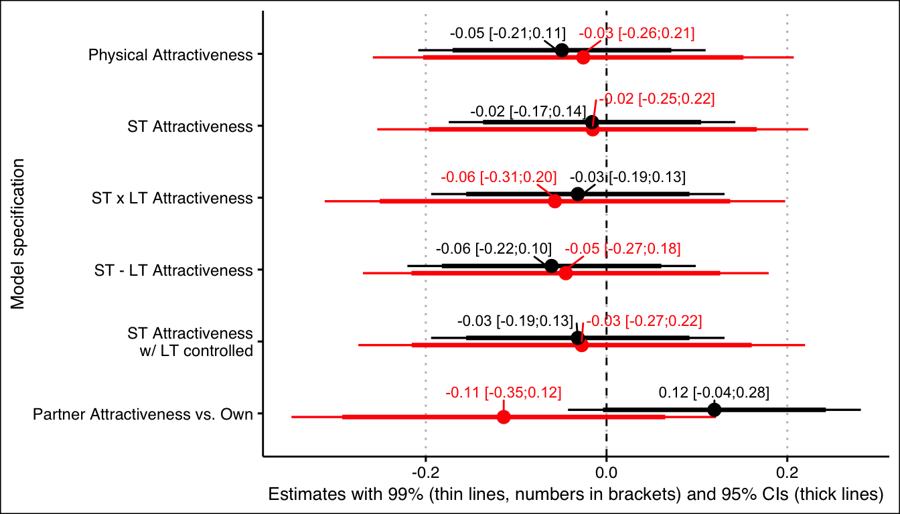
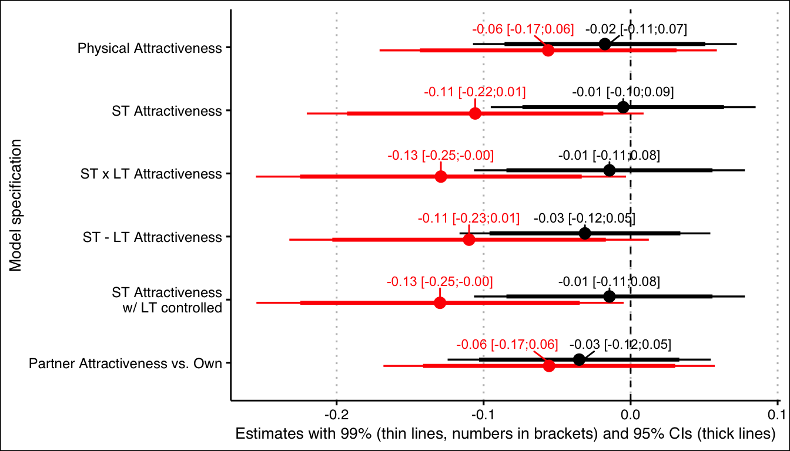
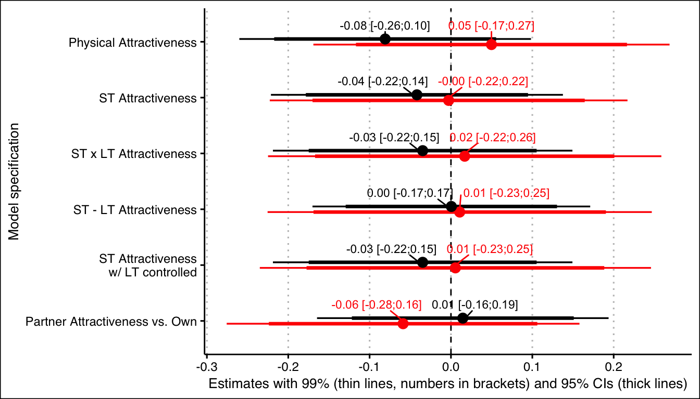

Rejoinder
Data cleaning
# loading packages
library(knitr)
library(lme4)
library(lmerTest)
library(formr)
library(effects)
library(ggthemes)
library(codebook)
library(forcats)
knit_print.alpha <- function(x, ...) {
print(x)
}
registerS3method("knit_print", "alpha", knit_print.alpha)
library(tidyverse)
chunk_fig_width <- function(default = 7) {
chunk_opt <- opts_current$get("fig.width")
if(is.null(chunk_opt)) {
chunk_opt <- default
}
chunk_opt
}
chunk_fig_height <- function(default = 7) {
chunk_opt <- opts_current$get("fig.height")
if(is.null(chunk_opt)) {
chunk_opt <- default
}
chunk_opt
}The following data cleaning code just replicates Gangestad and Dinh’s (2020) script with some minor corrections to make it work (see code comments starting #').
knitr::opts_chunk$set(cache = TRUE, autodep = TRUE, error = TRUE)ci_method <- "Wald"
options(width=9000, digits = 3)
load("diary_anonymised.rdata")
#' incorrect standardization (ignores multilevel structure), fixed using this function
scale <- function(x) {
if(length(x) == length(diary$person)) {
m <- mean(x[!duplicated(diary$person)], na.rm = T)
sd <- sd(x[!duplicated(diary$person)], na.rm = T)
} else {
m <- mean(x, na.rm = T)
sd <- sd(x, na.rm = T)
}
(x-m)/sd
}
#' missing standardization of partner longterm (ignores multilevel structure)
diary$Zpartner_attractiveness_longterm <- scale(diary$partner_attractiveness_longterm)
#' use variable id, named person in dataset
diary$id <- diary$person
#' turned factors into numbers but don't mention it
diary$included <- diary$included
diary$included_lax <- diary$included_lax
#' same for cycle regularity
#' missing variable breakup_mean
#' breakup mean not reported
diary <- diary %>% dplyr::group_by(person) %>%
dplyr::mutate(breakup_mean = mean(breakup, na.rm = TRUE)) %>%
dplyr::ungroup()
##compute corrected ST attractiveness
diary$Zattractiveness_stp <- scale(diary$attractiveness_stp)
diary$Zpartner_attractiveness_physical <- scale(diary$partner_attractiveness_physical)
diary$Zsatisfaction_sexual_intercourse <- scale(diary$satisfaction_sexual_intercourse)
diary$STattractiveness <- rowMeans(diary[,c("Zattractiveness_stp", "Zpartner_attractiveness_physical","Zsatisfaction_sexual_intercourse")], na.rm = TRUE)
diary$ZSTattractiveness <- scale(diary$STattractiveness)
diary$zSTvszLT <- diary$ZSTattractiveness - diary$Zpartner_attractiveness_longterm
diary$ZzSTvszLT <- scale(diary$zSTvszLT)
#remove missing values, summed ST composite
diary$partner_attractiveness_shortterm2 <- rowSums(diary[,c("attractiveness_stp", "partner_attractiveness_physical","satisfaction_sexual_intercourse")], na.rm = F)
diary$Zpartner_attractiveness_shortterm2 <- scale(diary$partner_attractiveness_shortterm2)
diary$zST2vszLT <- diary$Zpartner_attractiveness_shortterm2 - diary$Zpartner_attractiveness_longterm
diary$ZzST2vszLT <- scale(diary$zST2vszLT)
#Compute partner attractiveness +/- 1SD
diary$ZSTattractiveness_p1 <- diary$ZSTattractiveness + 1
diary$Zpartner_attractiveness_shortterm2_p1 <- diary$Zpartner_attractiveness_shortterm2 + 1
diary$ZzSTvszLT_p1 <- diary$ZzSTvszLT + 1
diary$ZzST2vszLT_p1 <- diary$ZzST2vszLT + 1
diary$ZSTattractiveness_m1 <- diary$ZSTattractiveness - 1
diary$Zpartner_attractiveness_shortterm2_m1 <- diary$Zpartner_attractiveness_shortterm2 - 1
diary$ZzSTvszLT_m1 <- diary$ZzSTvszLT - 1
diary$ZzST2vszLT_m1 <- diary$ZzST2vszLT - 1
######other computes
#Effect Codes and Dummy Codes
diary$included_zero <- as.numeric(diary$included) - 1
diary$included_lax_zero <- as.numeric(diary$included_lax) - 1
diary$menses_effect <-ifelse(as.numeric(diary$menstruation) == 3, .5, -.5)
diary$premenses_effect <-ifelse(as.numeric(diary$menstruation) == 2, .5, -.5)
#Standardizing variables and partner attractiveness composites
diary$Zfertile <- scale(diary$fertile)
diary$Zfertile_mean <- scale(diary$fertile_mean)
diary$Zfertile_narrow <- scale(diary$fertile_narrow)
diary$Zfertile_broad <- scale(diary$fertile_broad)
diary$ZMV_diff <- scale(diary$MV_diff)
diary$Zattractiveness_relativ_1 <- scale(diary$attractiveness_relativ_1)
diary$Zattractiveness_stp <- scale(diary$attractiveness_stp)
diary$Zsatisfaction_sexual_intercourse <- scale(diary$satisfaction_sexual_intercourse)
diary$Zpartner_attractiveness_physical <- scale(diary$partner_attractiveness_physical)
diary$Zpartner_attractiveness_longterm <- scale(diary$partner_attractiveness_longterm)
diary$partner_attractiveness_rel_to_self_COMP_OURMEAS <- rowMeans(diary[,c("ZMV_diff", "Zattractiveness_relativ_1")], na.rm = TRUE)
diary$Zpartner_attractiveness_rel_to_self_COMP_OURMEAS <- scale(diary$partner_attractiveness_rel_to_self_COMP_OURMEAS)
diary$Proprietariness<- rowSums(diary[,c("male_jealousy_2","male_mate_retention_1")], na.rm = FALSE)
diary$Attentiveness<- rowSums(diary[,c("male_mate_retention_2","male_attention_1")], na.rm = FALSE)
diary$MV_self<- rowMeans(diary[,c("MV_1","MV_2","MV_3","MV_4","MV_5")], na.rm = TRUE)
diary$ZMV_self<- scale(diary$MV_self)
diary$MV_part<- rowMeans(diary[,c("MV_P_1","MV_P_2","MV_P_3","MV_P_4","MV_P_5")], na.rm = TRUE)
diary$ZMV_part<- scale(diary$MV_part)
diary$MV_diff_OURS=diary$MV_part - diary$MV_self
diary$ZMV_diff_OURS <- scale(diary$MV_diff_OURS)
diary$partner_attractiveness_rel_to_self_OURMEAS_LONG<- rowMeans(diary[,c("ZMV_diff_OURS","Zattractiveness_relativ_1")], na.rm = TRUE)
diary$Zpartner_attractiveness_rel_to_self_OURMEAS_LONG <- scale(diary$partner_attractiveness_rel_to_self_OURMEAS_LONG)
diary$partner_attractiveness_COMP5var_LONG<- rowMeans(diary[,c("Zattractiveness_stp","Zsatisfaction_sexual_intercourse","ZMV_part","Zpartner_attractiveness_physical","Zattractiveness_relativ_1")], na.rm = TRUE)
diary$Zpartner_attractiveness_COMP5var_LONG <- scale(diary$partner_attractiveness_COMP5var_LONG)
#Compute partner attractiveness +/- 1SD
diary$Zpartner_attractiveness_physical_p1 <- diary$Zpartner_attractiveness_physical + 1
diary$Zpartner_attractiveness_rel_to_self_OURMEAS_LONG_p1 <- diary$Zpartner_attractiveness_rel_to_self_OURMEAS_LONG + 1
diary$Zpartner_attractiveness_COMP5var_LONG_p1 <- diary$Zpartner_attractiveness_COMP5var_LONG + 1
diary$Zpartner_attractiveness_physical_m1 <- diary$Zpartner_attractiveness_physical - 1
diary$Zpartner_attractiveness_rel_to_self_OURMEAS_LONG_m1 <- diary$Zpartner_attractiveness_rel_to_self_OURMEAS_LONG - 1
diary$Zpartner_attractiveness_COMP5var_LONG_m1 <- diary$Zpartner_attractiveness_COMP5var_LONG - 1
#filter: preregistered sample of 123
# diary2 <- diary [which (diary$included_zero >= 0
# & diary$cycle_regularity <= 2 & diary$breakup_mean == 2), ]
diary2 <- diary [which (diary$included_zero >= 0
& as.numeric(diary$cycle_regularity) <= 2 & diary$breakup_mean == 2), ]Study 1 (GOCD1) Follow-up
In our follow-up we revert some of the deviations by Gangestad and Dinh (2020), because they were not explained and we do not see how they make sense/why they were necessary:
- we do not standardise the fertility predictor as it is best seen as a probability of being in the fertile window, i.e. a single-imputed dummy variable. Estimates based on it disattenuate for invalidity as simulated by Gangestad et al. 2016.
- We do not effect-code the premenses and menses variable, but dummy-code them instead, as we had done before.
Neither of these changes should affect the test statistics.
diary$premenstruation <- if_else(diary$menstruation == "pre", "yes", "no")
diary$menstruation <- if_else(diary$menstruation == "yes", "yes", "no")Corrected preregistered moderator analyses
Extra-pair desire and behaviour
response <- list()
###############Table 1
response$Table1_extra_pair_phys = lmer(extra_pair ~
+ Zpartner_attractiveness_physical*fertile_narrow + (1 | id), data = diary %>%
filter(included_lax == "cycling"))
summary(response$Table1_extra_pair_phys)## Linear mixed model fit by REML. t-tests use Satterthwaite's method [
## lmerModLmerTest]
## Formula: extra_pair ~ +Zpartner_attractiveness_physical * fertile_narrow +
## (1 | id)
## Data: diary %>% filter(included_lax == "cycling")
##
## REML criterion at convergence: 3706.4
##
## Scaled residuals:
## Min 1Q Median 3Q Max
## -4.2212 -0.5663 -0.1236 0.4490 5.6678
##
## Random effects:
## Groups Name Variance Std.Dev.
## id (Intercept) 0.4281 0.6543
## Residual 0.3265 0.5714
## Number of obs: 1915, groups: id, 141
##
## Fixed effects:
## Estimate Std. Error
## (Intercept) 1.75415 0.05819
## Zpartner_attractiveness_physical -0.09262 0.06018
## fertile_narrow 0.26613 0.06401
## Zpartner_attractiveness_physical:fertile_narrow -0.05541 0.06514
## df t value Pr(>|t|)
## (Intercept) 150.16005 30.143 < 2e-16 ***
## Zpartner_attractiveness_physical 149.53751 -1.539 0.126
## fertile_narrow 1784.73746 4.157 3.37e-05 ***
## Zpartner_attractiveness_physical:fertile_narrow 1783.66753 -0.851 0.395
## ---
## Signif. codes: 0 '***' 0.001 '**' 0.01 '*' 0.05 '.' 0.1 ' ' 1
##
## Correlation of Fixed Effects:
## (Intr) Zprt__ frtl_n
## Zprtnr_ttr_ 0.004
## fertil_nrrw -0.207 -0.004
## Zprtnr_t_:_ -0.004 -0.202 0.001response$Table1_extra_pair_phys_hc = lmer(extra_pair ~
+ Zpartner_attractiveness_physical*fertile_narrow + (1 | id), data = diary %>%
filter(included_lax != "cycling"))
summary(response$Table1_extra_pair_phys_hc)## Linear mixed model fit by REML. t-tests use Satterthwaite's method [
## lmerModLmerTest]
## Formula: extra_pair ~ +Zpartner_attractiveness_physical * fertile_narrow +
## (1 | id)
## Data: diary %>% filter(included_lax != "cycling")
##
## REML criterion at convergence: 7596.4
##
## Scaled residuals:
## Min 1Q Median 3Q Max
## -3.7456 -0.5347 -0.1515 0.3753 7.9569
##
## Random effects:
## Groups Name Variance Std.Dev.
## id (Intercept) 0.2503 0.5003
## Residual 0.2624 0.5123
## Number of obs: 4463, groups: id, 352
##
## Fixed effects:
## Estimate Std. Error
## (Intercept) 1.70594 0.02892
## Zpartner_attractiveness_physical -0.05387 0.02984
## fertile_narrow -0.02789 0.03788
## Zpartner_attractiveness_physical:fertile_narrow -0.05698 0.03982
## df t value Pr(>|t|)
## (Intercept) 392.71447 58.995 <2e-16 ***
## Zpartner_attractiveness_physical 394.65952 -1.805 0.0718 .
## fertile_narrow 4157.87563 -0.736 0.4616
## Zpartner_attractiveness_physical:fertile_narrow 4162.33640 -1.431 0.1525
## ---
## Signif. codes: 0 '***' 0.001 '**' 0.01 '*' 0.05 '.' 0.1 ' ' 1
##
## Correlation of Fixed Effects:
## (Intr) Zprt__ frtl_n
## Zprtnr_ttr_ -0.085
## fertil_nrrw -0.246 0.019
## Zprtnr_t_:_ 0.019 -0.245 -0.076response$Table1_extra_pair_ST = lmer(extra_pair ~
+ ZSTattractiveness*fertile_narrow + (1 | id), data = diary %>%
filter(included_lax == "cycling"))
summary(response$Table1_extra_pair_ST)## Linear mixed model fit by REML. t-tests use Satterthwaite's method [
## lmerModLmerTest]
## Formula: extra_pair ~ +ZSTattractiveness * fertile_narrow + (1 | id)
## Data: diary %>% filter(included_lax == "cycling")
##
## REML criterion at convergence: 3708.3
##
## Scaled residuals:
## Min 1Q Median 3Q Max
## -4.1894 -0.5711 -0.1218 0.4470 5.6422
##
## Random effects:
## Groups Name Variance Std.Dev.
## id (Intercept) 0.4371 0.6611
## Residual 0.3263 0.5712
## Number of obs: 1915, groups: id, 141
##
## Fixed effects:
## Estimate Std. Error df t value
## (Intercept) 1.75540 0.05881 149.50907 29.848
## ZSTattractiveness -0.01382 0.06223 150.48450 -0.222
## fertile_narrow 0.26871 0.06404 1784.06451 4.196
## ZSTattractiveness:fertile_narrow -0.08326 0.06670 1785.76653 -1.248
## Pr(>|t|)
## (Intercept) < 2e-16 ***
## ZSTattractiveness 0.825
## fertile_narrow 2.85e-05 ***
## ZSTattractiveness:fertile_narrow 0.212
## ---
## Signif. codes: 0 '***' 0.001 '**' 0.01 '*' 0.05 '.' 0.1 ' ' 1
##
## Correlation of Fixed Effects:
## (Intr) ZSTttr frtl_n
## ZSTttrctvns -0.049
## fertil_nrrw -0.205 0.004
## ZSTttrctv:_ 0.004 -0.210 -0.035response$Table1_extra_pair_ST_hc = lmer(extra_pair ~
+ ZSTattractiveness*fertile_narrow + (1 | id), data = diary %>%
filter(included_lax != "cycling"))
summary(response$Table1_extra_pair_ST_hc)## Linear mixed model fit by REML. t-tests use Satterthwaite's method [
## lmerModLmerTest]
## Formula: extra_pair ~ +ZSTattractiveness * fertile_narrow + (1 | id)
## Data: diary %>% filter(included_lax != "cycling")
##
## REML criterion at convergence: 7597.1
##
## Scaled residuals:
## Min 1Q Median 3Q Max
## -3.7516 -0.5372 -0.1508 0.3803 7.9612
##
## Random effects:
## Groups Name Variance Std.Dev.
## id (Intercept) 0.2505 0.5005
## Residual 0.2624 0.5123
## Number of obs: 4463, groups: id, 352
##
## Fixed effects:
## Estimate Std. Error df t value
## (Intercept) 1.70967 0.02913 392.74919 58.700
## ZSTattractiveness -0.05841 0.03028 391.87937 -1.929
## fertile_narrow -0.02630 0.03813 4157.70035 -0.690
## ZSTattractiveness:fertile_narrow -0.04239 0.03971 4155.12566 -1.068
## Pr(>|t|)
## (Intercept) <2e-16 ***
## ZSTattractiveness 0.0545 .
## fertile_narrow 0.4903
## ZSTattractiveness:fertile_narrow 0.2858
## ---
## Signif. codes: 0 '***' 0.001 '**' 0.01 '*' 0.05 '.' 0.1 ' ' 1
##
## Correlation of Fixed Effects:
## (Intr) ZSTttr frtl_n
## ZSTttrctvns -0.144
## fertil_nrrw -0.246 0.032
## ZSTttrctv:_ 0.032 -0.245 -0.135response$Table1_extra_pair_STvsLT = lmer(extra_pair ~
+ ZzSTvszLT*fertile_narrow + (1 | id), data = diary %>%
filter(included_lax == "cycling"))
summary(response$Table1_extra_pair_STvsLT)## Linear mixed model fit by REML. t-tests use Satterthwaite's method [
## lmerModLmerTest]
## Formula: extra_pair ~ +ZzSTvszLT * fertile_narrow + (1 | id)
## Data: diary %>% filter(included_lax == "cycling")
##
## REML criterion at convergence: 3707
##
## Scaled residuals:
## Min 1Q Median 3Q Max
## -4.1663 -0.5691 -0.1282 0.4584 5.6423
##
## Random effects:
## Groups Name Variance Std.Dev.
## id (Intercept) 0.4309 0.6564
## Residual 0.3264 0.5713
## Number of obs: 1915, groups: id, 141
##
## Fixed effects:
## Estimate Std. Error df t value Pr(>|t|)
## (Intercept) 1.75386 0.05836 149.91812 30.051 < 2e-16 ***
## ZzSTvszLT 0.09581 0.05858 148.98656 1.636 0.104
## fertile_narrow 0.26735 0.06402 1784.62630 4.176 3.11e-05 ***
## ZzSTvszLT:fertile_narrow -0.07181 0.06278 1780.46962 -1.144 0.253
## ---
## Signif. codes: 0 '***' 0.001 '**' 0.01 '*' 0.05 '.' 0.1 ' ' 1
##
## Correlation of Fixed Effects:
## (Intr) ZzSTLT frtl_n
## ZzSTvszLT -0.002
## fertil_nrrw -0.206 0.004
## ZzSTvszLT:_ 0.004 -0.209 -0.023response$Table1_extra_pair_STvsLT_hc = lmer(extra_pair ~
+ ZzSTvszLT*fertile_narrow + (1 | id), data = diary %>%
filter(included_lax != "cycling"))
summary(response$Table1_extra_pair_STvsLT_hc)## Linear mixed model fit by REML. t-tests use Satterthwaite's method [
## lmerModLmerTest]
## Formula: extra_pair ~ +ZzSTvszLT * fertile_narrow + (1 | id)
## Data: diary %>% filter(included_lax != "cycling")
##
## REML criterion at convergence: 7598.7
##
## Scaled residuals:
## Min 1Q Median 3Q Max
## -3.7668 -0.5401 -0.1535 0.3803 7.9225
##
## Random effects:
## Groups Name Variance Std.Dev.
## id (Intercept) 0.2526 0.5026
## Residual 0.2624 0.5122
## Number of obs: 4463, groups: id, 352
##
## Fixed effects:
## Estimate Std. Error df t value Pr(>|t|)
## (Intercept) 1.70146 0.02892 393.30323 58.826 <2e-16 ***
## ZzSTvszLT 0.05738 0.02974 393.73415 1.929 0.0544 .
## fertile_narrow -0.03286 0.03778 4158.05874 -0.870 0.3844
## ZzSTvszLT:fertile_narrow -0.05639 0.03995 4169.11539 -1.411 0.1582
## ---
## Signif. codes: 0 '***' 0.001 '**' 0.01 '*' 0.05 '.' 0.1 ' ' 1
##
## Correlation of Fixed Effects:
## (Intr) ZzSTLT frtl_n
## ZzSTvszLT -0.001
## fertil_nrrw -0.245 -0.004
## ZzSTvszLT:_ -0.004 -0.246 0.017response$Table1_extra_pair_ST_LTadj = lmer(extra_pair ~
+ (Zpartner_attractiveness_longterm + ZSTattractiveness)*fertile_narrow + (1 | id), data = diary %>%
filter(included_lax == "cycling"))
summary(response$Table1_extra_pair_ST_LTadj)## Linear mixed model fit by REML. t-tests use Satterthwaite's method [
## lmerModLmerTest]
## Formula:
## extra_pair ~ +(Zpartner_attractiveness_longterm + ZSTattractiveness) *
## fertile_narrow + (1 | id)
## Data: diary %>% filter(included_lax == "cycling")
##
## REML criterion at convergence: 3710.8
##
## Scaled residuals:
## Min 1Q Median 3Q Max
## -4.1647 -0.5664 -0.1245 0.4518 5.6415
##
## Random effects:
## Groups Name Variance Std.Dev.
## id (Intercept) 0.4261 0.6527
## Residual 0.3264 0.5713
## Number of obs: 1915, groups: id, 141
##
## Fixed effects:
## Estimate Std. Error
## (Intercept) 1.75947 0.05817
## Zpartner_attractiveness_longterm -0.13621 0.06215
## ZSTattractiveness 0.02567 0.06410
## fertile_narrow 0.26897 0.06405
## Zpartner_attractiveness_longterm:fertile_narrow 0.03168 0.06787
## ZSTattractiveness:fertile_narrow -0.09279 0.06912
## df t value Pr(>|t|)
## (Intercept) 149.11391 30.246 < 2e-16 ***
## Zpartner_attractiveness_longterm 147.22070 -2.191 0.030 *
## ZSTattractiveness 149.97973 0.400 0.689
## fertile_narrow 1783.73435 4.199 2.81e-05 ***
## Zpartner_attractiveness_longterm:fertile_narrow 1779.39322 0.467 0.641
## ZSTattractiveness:fertile_narrow 1783.85997 -1.342 0.180
## ---
## Signif. codes: 0 '***' 0.001 '**' 0.01 '*' 0.05 '.' 0.1 ' ' 1
##
## Correlation of Fixed Effects:
## (Intr) Zprt__ ZSTttr frtl_n Zp__:_
## Zprtnr_ttr_ -0.032
## ZSTttrctvns -0.038 -0.281
## fertil_nrrw -0.207 -0.002 0.005
## Zprtnr_t_:_ -0.003 -0.201 0.059 0.002
## ZSTttrctv:_ 0.005 0.060 -0.215 -0.035 -0.262response$Table1_extra_pair_ST_LTadj_hc = lmer(extra_pair ~
+ (Zpartner_attractiveness_longterm + ZSTattractiveness)*fertile_narrow + (1 | id), data = diary %>%
filter(included_lax != "cycling"))
summary(response$Table1_extra_pair_ST_LTadj_hc)## Linear mixed model fit by REML. t-tests use Satterthwaite's method [
## lmerModLmerTest]
## Formula:
## extra_pair ~ +(Zpartner_attractiveness_longterm + ZSTattractiveness) *
## fertile_narrow + (1 | id)
## Data: diary %>% filter(included_lax != "cycling")
##
## REML criterion at convergence: 7584.1
##
## Scaled residuals:
## Min 1Q Median 3Q Max
## -3.7899 -0.5368 -0.1573 0.3764 7.9335
##
## Random effects:
## Groups Name Variance Std.Dev.
## id (Intercept) 0.2347 0.4844
## Residual 0.2625 0.5123
## Number of obs: 4463, groups: id, 352
##
## Fixed effects:
## Estimate Std. Error
## (Intercept) 1.72839 0.02860
## Zpartner_attractiveness_longterm -0.16686 0.03511
## ZSTattractiveness -0.02990 0.03006
## fertile_narrow -0.03097 0.03863
## Zpartner_attractiveness_longterm:fertile_narrow 0.04222 0.04974
## ZSTattractiveness:fertile_narrow -0.05037 0.04066
## df t value Pr(>|t|)
## (Intercept) 392.35608 60.431 < 2e-16 ***
## Zpartner_attractiveness_longterm 394.09695 -4.752 2.82e-06 ***
## ZSTattractiveness 392.52237 -0.995 0.320
## fertile_narrow 4160.96413 -0.802 0.423
## Zpartner_attractiveness_longterm:fertile_narrow 4180.48383 0.849 0.396
## ZSTattractiveness:fertile_narrow 4157.86578 -1.239 0.215
## ---
## Signif. codes: 0 '***' 0.001 '**' 0.01 '*' 0.05 '.' 0.1 ' ' 1
##
## Correlation of Fixed Effects:
## (Intr) Zprt__ ZSTttr frtl_n Zp__:_
## Zprtnr_ttr_ -0.139
## ZSTttrctvns -0.112 -0.200
## fertil_nrrw -0.252 0.038 0.023
## Zprtnr_t_:_ 0.036 -0.249 0.054 -0.162
## ZSTttrctv:_ 0.023 0.056 -0.253 -0.095 -0.216response$Table1_extra_pair_ST_vs_LTadj = lmer(extra_pair ~
+ (Zpartner_attractiveness_longterm * ZSTattractiveness)*fertile_narrow + (1 | id), data = diary %>%
filter(included_lax == "cycling"))
summary(response$Table1_extra_pair_ST_vs_LTadj)## Linear mixed model fit by REML. t-tests use Satterthwaite's method [
## lmerModLmerTest]
## Formula:
## extra_pair ~ +(Zpartner_attractiveness_longterm * ZSTattractiveness) *
## fertile_narrow + (1 | id)
## Data: diary %>% filter(included_lax == "cycling")
##
## REML criterion at convergence: 3717.6
##
## Scaled residuals:
## Min 1Q Median 3Q Max
## -4.1593 -0.5640 -0.1269 0.4530 5.6394
##
## Random effects:
## Groups Name Variance Std.Dev.
## id (Intercept) 0.4253 0.6522
## Residual 0.3266 0.5715
## Number of obs: 1915, groups: id, 141
##
## Fixed effects:
## Estimate
## (Intercept) 1.775e+00
## Zpartner_attractiveness_longterm -1.402e-01
## ZSTattractiveness 7.064e-03
## fertile_narrow 2.662e-01
## Zpartner_attractiveness_longterm:ZSTattractiveness -5.667e-02
## Zpartner_attractiveness_longterm:fertile_narrow 3.219e-02
## ZSTattractiveness:fertile_narrow -8.822e-02
## Zpartner_attractiveness_longterm:ZSTattractiveness:fertile_narrow 1.003e-02
## Std. Error
## (Intercept) 5.986e-02
## Zpartner_attractiveness_longterm 6.221e-02
## ZSTattractiveness 6.626e-02
## fertile_narrow 6.570e-02
## Zpartner_attractiveness_longterm:ZSTattractiveness 5.136e-02
## Zpartner_attractiveness_longterm:fertile_narrow 6.798e-02
## ZSTattractiveness:fertile_narrow 7.129e-02
## Zpartner_attractiveness_longterm:ZSTattractiveness:fertile_narrow 5.667e-02
## df
## (Intercept) 1.476e+02
## Zpartner_attractiveness_longterm 1.460e+02
## ZSTattractiveness 1.502e+02
## fertile_narrow 1.781e+03
## Zpartner_attractiveness_longterm:ZSTattractiveness 1.461e+02
## Zpartner_attractiveness_longterm:fertile_narrow 1.779e+03
## ZSTattractiveness:fertile_narrow 1.784e+03
## Zpartner_attractiveness_longterm:ZSTattractiveness:fertile_narrow 1.780e+03
## t value
## (Intercept) 29.657
## Zpartner_attractiveness_longterm -2.253
## ZSTattractiveness 0.107
## fertile_narrow 4.051
## Zpartner_attractiveness_longterm:ZSTattractiveness -1.103
## Zpartner_attractiveness_longterm:fertile_narrow 0.474
## ZSTattractiveness:fertile_narrow -1.237
## Zpartner_attractiveness_longterm:ZSTattractiveness:fertile_narrow 0.177
## Pr(>|t|)
## (Intercept) < 2e-16 ***
## Zpartner_attractiveness_longterm 0.0257 *
## ZSTattractiveness 0.9152
## fertile_narrow 5.31e-05 ***
## Zpartner_attractiveness_longterm:ZSTattractiveness 0.2717
## Zpartner_attractiveness_longterm:fertile_narrow 0.6359
## ZSTattractiveness:fertile_narrow 0.2161
## Zpartner_attractiveness_longterm:ZSTattractiveness:fertile_narrow 0.8596
## ---
## Signif. codes: 0 '***' 0.001 '**' 0.01 '*' 0.05 '.' 0.1 ' ' 1
##
## Correlation of Fixed Effects:
## (Intr) Zprt__ ZSTttr frtl_n Zp__:ZST Zp__:_ ZSTt:_
## Zprtnr_ttr_ -0.045
## ZSTttrctvns -0.097 -0.256
## fertil_nrrw -0.207 0.000 0.020
## Zprtn__:ZST -0.239 0.058 0.255 0.048
## Zprtnr_t_:_ -0.001 -0.201 0.054 -0.009 -0.009
## ZSTttrctv:_ 0.021 0.055 -0.222 -0.087 -0.068 -0.241
## Zpr__:ZST:_ 0.048 -0.009 -0.067 -0.221 -0.202 0.052 0.243nomod <- lmer(extra_pair ~ Zpartner_attractiveness_longterm * ZSTattractiveness + fertile_narrow + (1 | id), data = diary %>% filter(included_lax == "cycling"))
anova(nomod, response$Table1_extra_pair_ST_vs_LTadj)## refitting model(s) with ML (instead of REML)## Data: diary %>% filter(included_lax == "cycling")
## Models:
## nomod: extra_pair ~ Zpartner_attractiveness_longterm * ZSTattractiveness +
## nomod: fertile_narrow + (1 | id)
## response$Table1_extra_pair_ST_vs_LTadj: extra_pair ~ +(Zpartner_attractiveness_longterm * ZSTattractiveness) *
## response$Table1_extra_pair_ST_vs_LTadj: fertile_narrow + (1 | id)
## Df AIC BIC logLik deviance Chisq
## nomod 7 3703.1 3742.0 -1844.5 3689.1
## response$Table1_extra_pair_ST_vs_LTadj 10 3707.3 3762.9 -1843.7 3687.3 1.7938
## Chi Df Pr(>Chisq)
## nomod
## response$Table1_extra_pair_ST_vs_LTadj 3 0.6163response$Table1_extra_pair_ST_vs_LTadj_hc = lmer(extra_pair ~
+ (Zpartner_attractiveness_longterm + ZSTattractiveness)*fertile_narrow + (1 | id), data = diary %>%
filter(included_lax != "cycling"))
summary(response$Table1_extra_pair_ST_vs_LTadj_hc)## Linear mixed model fit by REML. t-tests use Satterthwaite's method [
## lmerModLmerTest]
## Formula:
## extra_pair ~ +(Zpartner_attractiveness_longterm + ZSTattractiveness) *
## fertile_narrow + (1 | id)
## Data: diary %>% filter(included_lax != "cycling")
##
## REML criterion at convergence: 7584.1
##
## Scaled residuals:
## Min 1Q Median 3Q Max
## -3.7899 -0.5368 -0.1573 0.3764 7.9335
##
## Random effects:
## Groups Name Variance Std.Dev.
## id (Intercept) 0.2347 0.4844
## Residual 0.2625 0.5123
## Number of obs: 4463, groups: id, 352
##
## Fixed effects:
## Estimate Std. Error
## (Intercept) 1.72839 0.02860
## Zpartner_attractiveness_longterm -0.16686 0.03511
## ZSTattractiveness -0.02990 0.03006
## fertile_narrow -0.03097 0.03863
## Zpartner_attractiveness_longterm:fertile_narrow 0.04222 0.04974
## ZSTattractiveness:fertile_narrow -0.05037 0.04066
## df t value Pr(>|t|)
## (Intercept) 392.35608 60.431 < 2e-16 ***
## Zpartner_attractiveness_longterm 394.09695 -4.752 2.82e-06 ***
## ZSTattractiveness 392.52237 -0.995 0.320
## fertile_narrow 4160.96413 -0.802 0.423
## Zpartner_attractiveness_longterm:fertile_narrow 4180.48383 0.849 0.396
## ZSTattractiveness:fertile_narrow 4157.86578 -1.239 0.215
## ---
## Signif. codes: 0 '***' 0.001 '**' 0.01 '*' 0.05 '.' 0.1 ' ' 1
##
## Correlation of Fixed Effects:
## (Intr) Zprt__ ZSTttr frtl_n Zp__:_
## Zprtnr_ttr_ -0.139
## ZSTttrctvns -0.112 -0.200
## fertil_nrrw -0.252 0.038 0.023
## Zprtnr_t_:_ 0.036 -0.249 0.054 -0.162
## ZSTttrctv:_ 0.023 0.056 -0.253 -0.095 -0.216nomod <- lmer(extra_pair ~ Zpartner_attractiveness_longterm * ZSTattractiveness + fertile_narrow + (1 | id), data = diary %>% filter(included_lax != "cycling"))
anova(nomod, response$Table1_extra_pair_ST_vs_LTadj_hc)## refitting model(s) with ML (instead of REML)## Data: diary %>% filter(included_lax != "cycling")
## Models:
## nomod: extra_pair ~ Zpartner_attractiveness_longterm * ZSTattractiveness +
## nomod: fertile_narrow + (1 | id)
## response$Table1_extra_pair_ST_vs_LTadj_hc: extra_pair ~ +(Zpartner_attractiveness_longterm + ZSTattractiveness) *
## response$Table1_extra_pair_ST_vs_LTadj_hc: fertile_narrow + (1 | id)
## Df AIC BIC logLik deviance
## nomod 7 7566.5 7611.3 -3776.3 7552.5
## response$Table1_extra_pair_ST_vs_LTadj_hc 8 7571.0 7622.3 -3777.5 7555.0
## Chisq Chi Df Pr(>Chisq)
## nomod
## response$Table1_extra_pair_ST_vs_LTadj_hc 0 1 1response$Table1_extra_pair_relself = lmer(extra_pair ~
+ Zpartner_attractiveness_rel_to_self_OURMEAS_LONG*fertile_narrow + (1 | id), data = diary %>%
filter(included_lax == "cycling"))
summary(response$Table1_extra_pair_relself)## Linear mixed model fit by REML. t-tests use Satterthwaite's method [
## lmerModLmerTest]
## Formula: extra_pair ~ +Zpartner_attractiveness_rel_to_self_OURMEAS_LONG *
## fertile_narrow + (1 | id)
## Data: diary %>% filter(included_lax == "cycling")
##
## REML criterion at convergence: 3702.3
##
## Scaled residuals:
## Min 1Q Median 3Q Max
## -4.1971 -0.5633 -0.1152 0.4575 5.6807
##
## Random effects:
## Groups Name Variance Std.Dev.
## id (Intercept) 0.4151 0.6443
## Residual 0.3264 0.5713
## Number of obs: 1915, groups: id, 141
##
## Fixed effects:
## Estimate
## (Intercept) 1.73374
## Zpartner_attractiveness_rel_to_self_OURMEAS_LONG -0.13088
## fertile_narrow 0.25319
## Zpartner_attractiveness_rel_to_self_OURMEAS_LONG:fertile_narrow -0.07198
## Std. Error
## (Intercept) 0.05807
## Zpartner_attractiveness_rel_to_self_OURMEAS_LONG 0.05557
## fertile_narrow 0.06501
## Zpartner_attractiveness_rel_to_self_OURMEAS_LONG:fertile_narrow 0.06574
## df
## (Intercept) 150.34471
## Zpartner_attractiveness_rel_to_self_OURMEAS_LONG 149.69030
## fertile_narrow 1785.20120
## Zpartner_attractiveness_rel_to_self_OURMEAS_LONG:fertile_narrow 1789.28391
## t value
## (Intercept) 29.857
## Zpartner_attractiveness_rel_to_self_OURMEAS_LONG -2.355
## fertile_narrow 3.895
## Zpartner_attractiveness_rel_to_self_OURMEAS_LONG:fertile_narrow -1.095
## Pr(>|t|)
## (Intercept) < 2e-16 ***
## Zpartner_attractiveness_rel_to_self_OURMEAS_LONG 0.019812 *
## fertile_narrow 0.000102 ***
## Zpartner_attractiveness_rel_to_self_OURMEAS_LONG:fertile_narrow 0.273695
## ---
## Signif. codes: 0 '***' 0.001 '**' 0.01 '*' 0.05 '.' 0.1 ' ' 1
##
## Correlation of Fixed Effects:
## (Intr) Zp_____OURMEAS_LONG frtl_n
## Zp_____OURMEAS_LONG 0.152
## fertil_nrrw -0.210 -0.037
## Z_____OURMEAS_LONG: -0.035 -0.208 0.175response$Table1_extra_pair_relself_hc = lmer(extra_pair ~
+ Zpartner_attractiveness_rel_to_self_OURMEAS_LONG*fertile_narrow + (1 | id), data = diary %>%
filter(included_lax != "cycling"))
summary(response$Table1_extra_pair_relself_hc)## Linear mixed model fit by REML. t-tests use Satterthwaite's method [
## lmerModLmerTest]
## Formula: extra_pair ~ +Zpartner_attractiveness_rel_to_self_OURMEAS_LONG *
## fertile_narrow + (1 | id)
## Data: diary %>% filter(included_lax != "cycling")
##
## REML criterion at convergence: 7589.1
##
## Scaled residuals:
## Min 1Q Median 3Q Max
## -3.7524 -0.5376 -0.1535 0.3902 7.9549
##
## Random effects:
## Groups Name Variance Std.Dev.
## id (Intercept) 0.2445 0.4945
## Residual 0.2624 0.5123
## Number of obs: 4463, groups: id, 352
##
## Fixed effects:
## Estimate
## (Intercept) 1.70573
## Zpartner_attractiveness_rel_to_self_OURMEAS_LONG -0.09782
## fertile_narrow -0.02958
## Zpartner_attractiveness_rel_to_self_OURMEAS_LONG:fertile_narrow -0.04766
## Std. Error
## (Intercept) 0.02856
## Zpartner_attractiveness_rel_to_self_OURMEAS_LONG 0.03054
## fertile_narrow 0.03783
## Zpartner_attractiveness_rel_to_self_OURMEAS_LONG:fertile_narrow 0.04059
## df
## (Intercept) 394.23715
## Zpartner_attractiveness_rel_to_self_OURMEAS_LONG 394.84247
## fertile_narrow 4158.99978
## Zpartner_attractiveness_rel_to_self_OURMEAS_LONG:fertile_narrow 4160.33210
## t value
## (Intercept) 59.729
## Zpartner_attractiveness_rel_to_self_OURMEAS_LONG -3.203
## fertile_narrow -0.782
## Zpartner_attractiveness_rel_to_self_OURMEAS_LONG:fertile_narrow -1.174
## Pr(>|t|)
## (Intercept) < 2e-16 ***
## Zpartner_attractiveness_rel_to_self_OURMEAS_LONG 0.00147 **
## fertile_narrow 0.43431
## Zpartner_attractiveness_rel_to_self_OURMEAS_LONG:fertile_narrow 0.24039
## ---
## Signif. codes: 0 '***' 0.001 '**' 0.01 '*' 0.05 '.' 0.1 ' ' 1
##
## Correlation of Fixed Effects:
## (Intr) Zp_____OURMEAS_LONG frtl_n
## Zp_____OURMEAS_LONG -0.049
## fertil_nrrw -0.249 0.014
## Z_____OURMEAS_LONG: 0.014 -0.244 -0.054interactions_s1_ep <- response %>%
purrr::map(~ full_join(
broom.mixed::tidy(., conf.method = ci_method, conf.level = 0.99, conf.int = TRUE),
broom.mixed::tidy(., conf.method = ci_method, conf.level = 0.95, conf.int = TRUE), by = c("effect", "group", "term", "estimate", "std.error", "statistic", "p.value"), suffix = c("_99", "_95"))) %>%
bind_rows(.id = "model") %>%
mutate(hc = stringr::str_detect(model, "_hc$"),
model = stringr::str_replace(model, "_hc$", ""),
model = stringr::str_replace(model, "^Table1_extra_pair_", "")) %>%
mutate(model = fct_rev(recode_factor(model,
"phys" = "Physical Attractiveness",
"ST" = "ST Attractiveness",
"ST_vs_LTadj" = "ST x LT Attractiveness",
"STvsLT" = "ST - LT Attractiveness",
"ST_LTadj" = "ST Attractiveness\nw/ LT controlled",
"relself" = "Partner Attractiveness vs. Own", .ordered = TRUE)))
ggplot(interactions_s1_ep %>% filter(str_detect(term, "Z.+:fertile_narrow$")) %>%
filter(!str_detect(term, "longterm")), aes(model, y = estimate, ymin = conf.low_95, ymax = conf.high_95,
colour = hc)) +
geom_hline(yintercept = 0, linetype = 'dashed') +
scale_color_manual(values = c("FALSE" = "red", "TRUE" = "black"), guide = FALSE) +
geom_linerange(size = 1.2, position = position_dodge(width = 0.2)) +
geom_pointrange(aes(ymin = conf.low_99, ymax = conf.high_99), size = 0.6, position = position_dodge(width = 0.2)) +
ggrepel::geom_text_repel(aes(label = sprintf("%.2f [%.2f;%.2f]", estimate, conf.low_99, conf.high_99)), nudge_x = 0.3, size = 3) +
scale_x_discrete("Model specification") +
scale_y_continuous("Estimates with 99% (thin lines, numbers in brackets) and 95% CIs (thick lines)") +
coord_flip() +
theme_clean() +
theme(panel.grid.major.x = theme_clean()$panel.grid.major.y,
panel.grid.major.y = theme_clean()$panel.grid.major.x)
In-pair desire
response <- list()
###############Table 1
response$Table1_in_pair_phys = lmer(in_pair_desire ~
+ Zpartner_attractiveness_physical*fertile_narrow + (1 | id), data = diary %>%
filter(included_lax == "cycling"))
summary(response$Table1_in_pair_phys)## Linear mixed model fit by REML. t-tests use Satterthwaite's method [
## lmerModLmerTest]
## Formula: in_pair_desire ~ +Zpartner_attractiveness_physical * fertile_narrow +
## (1 | id)
## Data: diary %>% filter(included_lax == "cycling")
##
## REML criterion at convergence: 6138.2
##
## Scaled residuals:
## Min 1Q Median 3Q Max
## -3.3256 -0.6697 -0.0533 0.6676 2.9030
##
## Random effects:
## Groups Name Variance Std.Dev.
## id (Intercept) 0.6274 0.7921
## Residual 1.2405 1.1138
## Number of obs: 1915, groups: id, 141
##
## Fixed effects:
## Estimate Std. Error
## (Intercept) 3.48627 0.07582
## Zpartner_attractiveness_physical 0.43502 0.07827
## fertile_narrow 0.30702 0.12448
## Zpartner_attractiveness_physical:fertile_narrow -0.20594 0.12670
## df t value Pr(>|t|)
## (Intercept) 168.22671 45.981 < 2e-16 ***
## Zpartner_attractiveness_physical 165.80044 5.558 1.07e-07 ***
## fertile_narrow 1800.44555 2.466 0.0137 *
## Zpartner_attractiveness_physical:fertile_narrow 1797.05405 -1.625 0.1043
## ---
## Signif. codes: 0 '***' 0.001 '**' 0.01 '*' 0.05 '.' 0.1 ' ' 1
##
## Correlation of Fixed Effects:
## (Intr) Zprt__ frtl_n
## Zprtnr_ttr_ 0.006
## fertil_nrrw -0.309 -0.005
## Zprtnr_t_:_ -0.005 -0.303 0.000response$Table1_in_pair_phys_hc = lmer(in_pair_desire ~
+ Zpartner_attractiveness_physical*fertile_narrow + (1 | id), data = diary %>%
filter(included_lax != "cycling"))
summary(response$Table1_in_pair_phys_hc)## Linear mixed model fit by REML. t-tests use Satterthwaite's method [
## lmerModLmerTest]
## Formula: in_pair_desire ~ +Zpartner_attractiveness_physical * fertile_narrow +
## (1 | id)
## Data: diary %>% filter(included_lax != "cycling")
##
## REML criterion at convergence: 13969.6
##
## Scaled residuals:
## Min 1Q Median 3Q Max
## -3.1824 -0.6674 -0.0255 0.6464 2.9270
##
## Random effects:
## Groups Name Variance Std.Dev.
## id (Intercept) 0.5924 0.7697
## Residual 1.1432 1.0692
## Number of obs: 4463, groups: id, 352
##
## Fixed effects:
## Estimate Std. Error
## (Intercept) 3.69976 0.04701
## Zpartner_attractiveness_physical 0.30825 0.04853
## fertile_narrow -0.07325 0.07890
## Zpartner_attractiveness_physical:fertile_narrow -0.02075 0.08292
## df t value Pr(>|t|)
## (Intercept) 428.48703 78.702 < 2e-16 ***
## Zpartner_attractiveness_physical 430.59528 6.351 5.44e-10 ***
## fertile_narrow 4190.93456 -0.928 0.353
## Zpartner_attractiveness_physical:fertile_narrow 4197.98965 -0.250 0.802
## ---
## Signif. codes: 0 '***' 0.001 '**' 0.01 '*' 0.05 '.' 0.1 ' ' 1
##
## Correlation of Fixed Effects:
## (Intr) Zprt__ frtl_n
## Zprtnr_ttr_ -0.082
## fertil_nrrw -0.316 0.024
## Zprtnr_t_:_ 0.024 -0.315 -0.076response$Table1_in_pair_ST = lmer(in_pair_desire ~
+ ZSTattractiveness*fertile_narrow + (1 | id), data = diary %>%
filter(included_lax == "cycling"))
summary(response$Table1_in_pair_ST)## Linear mixed model fit by REML. t-tests use Satterthwaite's method [
## lmerModLmerTest]
## Formula: in_pair_desire ~ +ZSTattractiveness * fertile_narrow + (1 | id)
## Data: diary %>% filter(included_lax == "cycling")
##
## REML criterion at convergence: 6140.5
##
## Scaled residuals:
## Min 1Q Median 3Q Max
## -3.3608 -0.6697 -0.0741 0.6686 2.9114
##
## Random effects:
## Groups Name Variance Std.Dev.
## id (Intercept) 0.6429 0.8018
## Residual 1.2401 1.1136
## Number of obs: 1915, groups: id, 141
##
## Fixed effects:
## Estimate Std. Error df t value
## (Intercept) 3.46583 0.07662 167.42818 45.234
## ZSTattractiveness 0.42884 0.08119 168.45164 5.282
## fertile_narrow 0.31677 0.12455 1799.72002 2.543
## ZSTattractiveness:fertile_narrow -0.24208 0.12970 1800.84328 -1.867
## Pr(>|t|)
## (Intercept) < 2e-16 ***
## ZSTattractiveness 3.91e-07 ***
## fertile_narrow 0.0111 *
## ZSTattractiveness:fertile_narrow 0.0621 .
## ---
## Signif. codes: 0 '***' 0.001 '**' 0.01 '*' 0.05 '.' 0.1 ' ' 1
##
## Correlation of Fixed Effects:
## (Intr) ZSTttr frtl_n
## ZSTttrctvns -0.044
## fertil_nrrw -0.306 0.007
## ZSTttrctv:_ 0.008 -0.313 -0.036response$Table1_in_pair_ST_hc = lmer(in_pair_desire ~
+ ZSTattractiveness*fertile_narrow + (1 | id), data = diary %>%
filter(included_lax != "cycling"))
summary(response$Table1_in_pair_ST_hc)## Linear mixed model fit by REML. t-tests use Satterthwaite's method [
## lmerModLmerTest]
## Formula: in_pair_desire ~ +ZSTattractiveness * fertile_narrow + (1 | id)
## Data: diary %>% filter(included_lax != "cycling")
##
## REML criterion at convergence: 13957
##
## Scaled residuals:
## Min 1Q Median 3Q Max
## -3.16076 -0.66087 -0.03191 0.64807 2.93005
##
## Random effects:
## Groups Name Variance Std.Dev.
## id (Intercept) 0.5678 0.7535
## Residual 1.1432 1.0692
## Number of obs: 4463, groups: id, 352
##
## Fixed effects:
## Estimate Std. Error df t value
## (Intercept) 3.67697 0.04656 431.28663 78.970
## ZSTattractiveness 0.34561 0.04839 429.53924 7.141
## fertile_narrow -0.07911 0.07939 4193.00895 -0.997
## ZSTattractiveness:fertile_narrow 0.02119 0.08269 4189.21238 0.256
## Pr(>|t|)
## (Intercept) < 2e-16 ***
## ZSTattractiveness 3.98e-12 ***
## fertile_narrow 0.319
## ZSTattractiveness:fertile_narrow 0.798
## ---
## Signif. codes: 0 '***' 0.001 '**' 0.01 '*' 0.05 '.' 0.1 ' ' 1
##
## Correlation of Fixed Effects:
## (Intr) ZSTttr frtl_n
## ZSTttrctvns -0.141
## fertil_nrrw -0.321 0.041
## ZSTttrctv:_ 0.041 -0.320 -0.136response$Table1_in_pair_STvsLT = lmer(in_pair_desire ~
+ ZzSTvszLT*fertile_narrow + (1 | id), data = diary %>%
filter(included_lax == "cycling"))
summary(response$Table1_in_pair_STvsLT)## Linear mixed model fit by REML. t-tests use Satterthwaite's method [
## lmerModLmerTest]
## Formula: in_pair_desire ~ +ZzSTvszLT * fertile_narrow + (1 | id)
## Data: diary %>% filter(included_lax == "cycling")
##
## REML criterion at convergence: 6161.4
##
## Scaled residuals:
## Min 1Q Median 3Q Max
## -3.2911 -0.6551 -0.0651 0.6598 2.9402
##
## Random effects:
## Groups Name Variance Std.Dev.
## id (Intercept) 0.7695 0.8772
## Residual 1.2394 1.1133
## Number of obs: 1915, groups: id, 141
##
## Fixed effects:
## Estimate Std. Error df t value Pr(>|t|)
## (Intercept) 3.48207 0.08224 163.40502 42.342 <2e-16 ***
## ZzSTvszLT 0.13609 0.08243 161.74072 1.651 0.1007
## fertile_narrow 0.31796 0.12454 1796.77519 2.553 0.0108 *
## ZzSTvszLT:fertile_narrow -0.24401 0.12219 1790.24139 -1.997 0.0460 *
## ---
## Signif. codes: 0 '***' 0.001 '**' 0.01 '*' 0.05 '.' 0.1 ' ' 1
##
## Correlation of Fixed Effects:
## (Intr) ZzSTLT frtl_n
## ZzSTvszLT -0.002
## fertil_nrrw -0.285 0.006
## ZzSTvszLT:_ 0.006 -0.288 -0.023response$Table1_in_pair_STvsLT_hc = lmer(in_pair_desire ~
+ ZzSTvszLT*fertile_narrow + (1 | id), data = diary %>%
filter(included_lax != "cycling"))
summary(response$Table1_in_pair_STvsLT_hc)## Linear mixed model fit by REML. t-tests use Satterthwaite's method [
## lmerModLmerTest]
## Formula: in_pair_desire ~ +ZzSTvszLT * fertile_narrow + (1 | id)
## Data: diary %>% filter(included_lax != "cycling")
##
## REML criterion at convergence: 13995.7
##
## Scaled residuals:
## Min 1Q Median 3Q Max
## -3.1870 -0.6621 -0.0312 0.6393 2.9158
##
## Random effects:
## Groups Name Variance Std.Dev.
## id (Intercept) 0.6493 0.8058
## Residual 1.1428 1.0690
## Number of obs: 4463, groups: id, 352
##
## Fixed effects:
## Estimate Std. Error df t value Pr(>|t|)
## (Intercept) 3.72435 0.04855 424.58910 76.705 < 2e-16 ***
## ZzSTvszLT 0.19214 0.04994 426.21577 3.847 0.000138 ***
## fertile_narrow -0.07567 0.07870 4186.71276 -0.962 0.336325
## ZzSTvszLT:fertile_narrow -0.04572 0.08320 4203.34688 -0.550 0.582645
## ---
## Signif. codes: 0 '***' 0.001 '**' 0.01 '*' 0.05 '.' 0.1 ' ' 1
##
## Correlation of Fixed Effects:
## (Intr) ZzSTLT frtl_n
## ZzSTvszLT 0.000
## fertil_nrrw -0.305 -0.005
## ZzSTvszLT:_ -0.005 -0.305 0.017response$Table1_in_pair_ST_LTadj = lmer(in_pair_desire ~
+ (Zpartner_attractiveness_longterm + ZSTattractiveness)*fertile_narrow + (1 | id), data = diary %>%
filter(included_lax == "cycling"))
summary(response$Table1_in_pair_ST_LTadj)## Linear mixed model fit by REML. t-tests use Satterthwaite's method [
## lmerModLmerTest]
## Formula:
## in_pair_desire ~ +(Zpartner_attractiveness_longterm + ZSTattractiveness) *
## fertile_narrow + (1 | id)
## Data: diary %>% filter(included_lax == "cycling")
##
## REML criterion at convergence: 6140.4
##
## Scaled residuals:
## Min 1Q Median 3Q Max
## -3.3567 -0.6639 -0.0764 0.6758 2.9206
##
## Random effects:
## Groups Name Variance Std.Dev.
## id (Intercept) 0.6281 0.7925
## Residual 1.2395 1.1133
## Number of obs: 1915, groups: id, 141
##
## Fixed effects:
## Estimate Std. Error
## (Intercept) 3.46078 0.07596
## Zpartner_attractiveness_longterm 0.12955 0.08086
## ZSTattractiveness 0.39171 0.08382
## fertile_narrow 0.31600 0.12451
## Zpartner_attractiveness_longterm:fertile_narrow 0.15668 0.13204
## ZSTattractiveness:fertile_narrow -0.28108 0.13438
## df t value Pr(>|t|)
## (Intercept) 167.18300 45.560 < 2e-16 ***
## Zpartner_attractiveness_longterm 163.13783 1.602 0.1111
## ZSTattractiveness 168.33990 4.673 6.04e-06 ***
## fertile_narrow 1799.51462 2.538 0.0112 *
## Zpartner_attractiveness_longterm:fertile_narrow 1791.68873 1.187 0.2355
## ZSTattractiveness:fertile_narrow 1798.42121 -2.092 0.0366 *
## ---
## Signif. codes: 0 '***' 0.001 '**' 0.01 '*' 0.05 '.' 0.1 ' ' 1
##
## Correlation of Fixed Effects:
## (Intr) Zprt__ ZSTttr frtl_n Zp__:_
## Zprtnr_ttr_ -0.029
## ZSTttrctvns -0.034 -0.280
## fertil_nrrw -0.308 -0.003 0.008
## Zprtnr_t_:_ -0.003 -0.301 0.087 0.001
## ZSTttrctv:_ 0.008 0.089 -0.318 -0.035 -0.263response$Table1_in_pair_ST_LTadj_hc = lmer(in_pair_desire ~
+ (Zpartner_attractiveness_longterm + ZSTattractiveness)*fertile_narrow + (1 | id), data = diary %>%
filter(included_lax != "cycling"))
summary(response$Table1_in_pair_ST_LTadj_hc)## Linear mixed model fit by REML. t-tests use Satterthwaite's method [
## lmerModLmerTest]
## Formula:
## in_pair_desire ~ +(Zpartner_attractiveness_longterm + ZSTattractiveness) *
## fertile_narrow + (1 | id)
## Data: diary %>% filter(included_lax != "cycling")
##
## REML criterion at convergence: 13959.2
##
## Scaled residuals:
## Min 1Q Median 3Q Max
## -3.16203 -0.66103 -0.02896 0.64905 2.93043
##
## Random effects:
## Groups Name Variance Std.Dev.
## id (Intercept) 0.564 0.751
## Residual 1.143 1.069
## Number of obs: 4463, groups: id, 352
##
## Fixed effects:
## Estimate Std. Error
## (Intercept) 3.668e+00 4.689e-02
## Zpartner_attractiveness_longterm 7.793e-02 5.761e-02
## ZSTattractiveness 3.326e-01 4.928e-02
## fertile_narrow -9.399e-02 8.044e-02
## Zpartner_attractiveness_longterm:fertile_narrow 1.143e-01 1.035e-01
## ZSTattractiveness:fertile_narrow 1.567e-03 8.467e-02
## df t value Pr(>|t|)
## (Intercept) 4.297e+02 78.233 < 2e-16 ***
## Zpartner_attractiveness_longterm 4.335e+02 1.353 0.177
## ZSTattractiveness 4.297e+02 6.749 4.84e-11 ***
## fertile_narrow 4.196e+03 -1.169 0.243
## Zpartner_attractiveness_longterm:fertile_narrow 4.226e+03 1.105 0.269
## ZSTattractiveness:fertile_narrow 4.192e+03 0.019 0.985
## ---
## Signif. codes: 0 '***' 0.001 '**' 0.01 '*' 0.05 '.' 0.1 ' ' 1
##
## Correlation of Fixed Effects:
## (Intr) Zprt__ ZSTttr frtl_n Zp__:_
## Zprtnr_ttr_ -0.138
## ZSTttrctvns -0.109 -0.201
## fertil_nrrw -0.321 0.048 0.030
## Zprtnr_t_:_ 0.046 -0.317 0.068 -0.161
## ZSTttrctv:_ 0.030 0.071 -0.322 -0.096 -0.215response$Table1_in_pair_ST_vs_LTadj = lmer(in_pair_desire ~
+ (Zpartner_attractiveness_longterm * ZSTattractiveness)*fertile_narrow + (1 | id), data = diary %>%
filter(included_lax == "cycling"))
summary(response$Table1_in_pair_ST_vs_LTadj)## Linear mixed model fit by REML. t-tests use Satterthwaite's method [
## lmerModLmerTest]
## Formula:
## in_pair_desire ~ +(Zpartner_attractiveness_longterm * ZSTattractiveness) *
## fertile_narrow + (1 | id)
## Data: diary %>% filter(included_lax == "cycling")
##
## REML criterion at convergence: 6141.4
##
## Scaled residuals:
## Min 1Q Median 3Q Max
## -3.4129 -0.6506 -0.0696 0.6517 2.9063
##
## Random effects:
## Groups Name Variance Std.Dev.
## id (Intercept) 0.6338 0.7961
## Residual 1.2365 1.1120
## Number of obs: 1915, groups: id, 141
##
## Fixed effects:
## Estimate
## (Intercept) 3.45696
## Zpartner_attractiveness_longterm 0.12967
## ZSTattractiveness 0.39992
## fertile_narrow 0.37917
## Zpartner_attractiveness_longterm:ZSTattractiveness 0.01339
## Zpartner_attractiveness_longterm:fertile_narrow 0.14139
## ZSTattractiveness:fertile_narrow -0.35394
## Zpartner_attractiveness_longterm:ZSTattractiveness:fertile_narrow -0.24633
## Std. Error
## (Intercept) 0.07844
## Zpartner_attractiveness_longterm 0.08125
## ZSTattractiveness 0.08721
## fertile_narrow 0.12756
## Zpartner_attractiveness_longterm:ZSTattractiveness 0.06708
## Zpartner_attractiveness_longterm:fertile_narrow 0.13206
## ZSTattractiveness:fertile_narrow 0.13838
## Zpartner_attractiveness_longterm:ZSTattractiveness:fertile_narrow 0.11008
## df
## (Intercept) 165.32934
## Zpartner_attractiveness_longterm 161.52459
## ZSTattractiveness 170.07896
## fertile_narrow 1796.41593
## Zpartner_attractiveness_longterm:ZSTattractiveness 161.17941
## Zpartner_attractiveness_longterm:fertile_narrow 1790.84543
## ZSTattractiveness:fertile_narrow 1797.83357
## Zpartner_attractiveness_longterm:ZSTattractiveness:fertile_narrow 1790.95850
## t value
## (Intercept) 44.073
## Zpartner_attractiveness_longterm 1.596
## ZSTattractiveness 4.586
## fertile_narrow 2.973
## Zpartner_attractiveness_longterm:ZSTattractiveness 0.200
## Zpartner_attractiveness_longterm:fertile_narrow 1.071
## ZSTattractiveness:fertile_narrow -2.558
## Zpartner_attractiveness_longterm:ZSTattractiveness:fertile_narrow -2.238
## Pr(>|t|)
## (Intercept) < 2e-16 ***
## Zpartner_attractiveness_longterm 0.11247
## ZSTattractiveness 8.74e-06 ***
## fertile_narrow 0.00299 **
## Zpartner_attractiveness_longterm:ZSTattractiveness 0.84205
## Zpartner_attractiveness_longterm:fertile_narrow 0.28447
## ZSTattractiveness:fertile_narrow 0.01062 *
## Zpartner_attractiveness_longterm:ZSTattractiveness:fertile_narrow 0.02536 *
## ---
## Signif. codes: 0 '***' 0.001 '**' 0.01 '*' 0.05 '.' 0.1 ' ' 1
##
## Correlation of Fixed Effects:
## (Intr) Zprt__ ZSTttr frtl_n Zp__:ZST Zp__:_ ZSTt:_
## Zprtnr_ttr_ -0.041
## ZSTttrctvns -0.095 -0.256
## fertil_nrrw -0.308 0.000 0.030
## Zprtn__:ZST -0.237 0.053 0.265 0.071
## Zprtnr_t_:_ 0.000 -0.299 0.080 -0.010 -0.012
## ZSTttrctv:_ 0.031 0.082 -0.326 -0.087 -0.099 -0.242
## Zpr__:ZST:_ 0.071 -0.012 -0.097 -0.222 -0.299 0.051 0.242nomod <- lmer(in_pair_desire ~ Zpartner_attractiveness_longterm * ZSTattractiveness + fertile_narrow + (1 | id), data = diary %>% filter(included_lax == "cycling"))
anova(nomod, response$Table1_in_pair_ST_vs_LTadj)## refitting model(s) with ML (instead of REML)## Data: diary %>% filter(included_lax == "cycling")
## Models:
## nomod: in_pair_desire ~ Zpartner_attractiveness_longterm * ZSTattractiveness +
## nomod: fertile_narrow + (1 | id)
## response$Table1_in_pair_ST_vs_LTadj: in_pair_desire ~ +(Zpartner_attractiveness_longterm * ZSTattractiveness) *
## response$Table1_in_pair_ST_vs_LTadj: fertile_narrow + (1 | id)
## Df AIC BIC logLik deviance Chisq
## nomod 7 6142.1 6181.0 -3064.0 6128.1
## response$Table1_in_pair_ST_vs_LTadj 10 6138.3 6193.9 -3059.2 6118.3 9.7568
## Chi Df Pr(>Chisq)
## nomod
## response$Table1_in_pair_ST_vs_LTadj 3 0.02075 *
## ---
## Signif. codes: 0 '***' 0.001 '**' 0.01 '*' 0.05 '.' 0.1 ' ' 1response$Table1_in_pair_ST_vs_LTadj_hc = lmer(in_pair_desire ~
+ (Zpartner_attractiveness_longterm + ZSTattractiveness)*fertile_narrow + (1 | id), data = diary %>%
filter(included_lax != "cycling"))
summary(response$Table1_in_pair_ST_vs_LTadj_hc)## Linear mixed model fit by REML. t-tests use Satterthwaite's method [
## lmerModLmerTest]
## Formula:
## in_pair_desire ~ +(Zpartner_attractiveness_longterm + ZSTattractiveness) *
## fertile_narrow + (1 | id)
## Data: diary %>% filter(included_lax != "cycling")
##
## REML criterion at convergence: 13959.2
##
## Scaled residuals:
## Min 1Q Median 3Q Max
## -3.16203 -0.66103 -0.02896 0.64905 2.93043
##
## Random effects:
## Groups Name Variance Std.Dev.
## id (Intercept) 0.564 0.751
## Residual 1.143 1.069
## Number of obs: 4463, groups: id, 352
##
## Fixed effects:
## Estimate Std. Error
## (Intercept) 3.668e+00 4.689e-02
## Zpartner_attractiveness_longterm 7.793e-02 5.761e-02
## ZSTattractiveness 3.326e-01 4.928e-02
## fertile_narrow -9.399e-02 8.044e-02
## Zpartner_attractiveness_longterm:fertile_narrow 1.143e-01 1.035e-01
## ZSTattractiveness:fertile_narrow 1.567e-03 8.467e-02
## df t value Pr(>|t|)
## (Intercept) 4.297e+02 78.233 < 2e-16 ***
## Zpartner_attractiveness_longterm 4.335e+02 1.353 0.177
## ZSTattractiveness 4.297e+02 6.749 4.84e-11 ***
## fertile_narrow 4.196e+03 -1.169 0.243
## Zpartner_attractiveness_longterm:fertile_narrow 4.226e+03 1.105 0.269
## ZSTattractiveness:fertile_narrow 4.192e+03 0.019 0.985
## ---
## Signif. codes: 0 '***' 0.001 '**' 0.01 '*' 0.05 '.' 0.1 ' ' 1
##
## Correlation of Fixed Effects:
## (Intr) Zprt__ ZSTttr frtl_n Zp__:_
## Zprtnr_ttr_ -0.138
## ZSTttrctvns -0.109 -0.201
## fertil_nrrw -0.321 0.048 0.030
## Zprtnr_t_:_ 0.046 -0.317 0.068 -0.161
## ZSTttrctv:_ 0.030 0.071 -0.322 -0.096 -0.215nomod <- lmer(in_pair_desire ~ Zpartner_attractiveness_longterm * ZSTattractiveness + fertile_narrow + (1 | id), data = diary %>% filter(included_lax != "cycling"))
anova(nomod, response$Table1_in_pair_ST_vs_LTadj_hc)## refitting model(s) with ML (instead of REML)## Data: diary %>% filter(included_lax != "cycling")
## Models:
## nomod: in_pair_desire ~ Zpartner_attractiveness_longterm * ZSTattractiveness +
## nomod: fertile_narrow + (1 | id)
## response$Table1_in_pair_ST_vs_LTadj_hc: in_pair_desire ~ +(Zpartner_attractiveness_longterm + ZSTattractiveness) *
## response$Table1_in_pair_ST_vs_LTadj_hc: fertile_narrow + (1 | id)
## Df AIC BIC logLik deviance Chisq
## nomod 7 13949 13994 -6967.6 13935
## response$Table1_in_pair_ST_vs_LTadj_hc 8 13953 14005 -6968.7 13937 0
## Chi Df Pr(>Chisq)
## nomod
## response$Table1_in_pair_ST_vs_LTadj_hc 1 1response$Table1_in_pair_relself = lmer(in_pair_desire ~
+ Zpartner_attractiveness_rel_to_self_OURMEAS_LONG*fertile_narrow + (1 | id), data = diary %>%
filter(included_lax == "cycling"))
summary(response$Table1_in_pair_relself)## Linear mixed model fit by REML. t-tests use Satterthwaite's method [
## lmerModLmerTest]
## Formula: in_pair_desire ~ +Zpartner_attractiveness_rel_to_self_OURMEAS_LONG *
## fertile_narrow + (1 | id)
## Data: diary %>% filter(included_lax == "cycling")
##
## REML criterion at convergence: 6164.7
##
## Scaled residuals:
## Min 1Q Median 3Q Max
## -3.2768 -0.6554 -0.0655 0.6643 2.9286
##
## Random effects:
## Groups Name Variance Std.Dev.
## id (Intercept) 0.7668 0.8757
## Residual 1.2420 1.1144
## Number of obs: 1915, groups: id, 141
##
## Fixed effects:
## Estimate
## (Intercept) 3.50086
## Zpartner_attractiveness_rel_to_self_OURMEAS_LONG 0.10992
## fertile_narrow 0.29750
## Zpartner_attractiveness_rel_to_self_OURMEAS_LONG:fertile_narrow -0.08571
## Std. Error
## (Intercept) 0.08313
## Zpartner_attractiveness_rel_to_self_OURMEAS_LONG 0.07952
## fertile_narrow 0.12658
## Zpartner_attractiveness_rel_to_self_OURMEAS_LONG:fertile_narrow 0.12792
## df
## (Intercept) 164.04113
## Zpartner_attractiveness_rel_to_self_OURMEAS_LONG 163.88120
## fertile_narrow 1797.42699
## Zpartner_attractiveness_rel_to_self_OURMEAS_LONG:fertile_narrow 1805.98124
## t value
## (Intercept) 42.114
## Zpartner_attractiveness_rel_to_self_OURMEAS_LONG 1.382
## fertile_narrow 2.350
## Zpartner_attractiveness_rel_to_self_OURMEAS_LONG:fertile_narrow -0.670
## Pr(>|t|)
## (Intercept) <2e-16 ***
## Zpartner_attractiveness_rel_to_self_OURMEAS_LONG 0.1688
## fertile_narrow 0.0189 *
## Zpartner_attractiveness_rel_to_self_OURMEAS_LONG:fertile_narrow 0.5029
## ---
## Signif. codes: 0 '***' 0.001 '**' 0.01 '*' 0.05 '.' 0.1 ' ' 1
##
## Correlation of Fixed Effects:
## (Intr) Zp_____OURMEAS_LONG frtl_n
## Zp_____OURMEAS_LONG 0.154
## fertil_nrrw -0.286 -0.050
## Z_____OURMEAS_LONG: -0.047 -0.283 0.175response$Table1_in_pair_relself_hc = lmer(in_pair_desire ~
+ Zpartner_attractiveness_rel_to_self_OURMEAS_LONG*fertile_narrow + (1 | id), data = diary %>%
filter(included_lax != "cycling"))
summary(response$Table1_in_pair_relself_hc)## Linear mixed model fit by REML. t-tests use Satterthwaite's method [
## lmerModLmerTest]
## Formula: in_pair_desire ~ +Zpartner_attractiveness_rel_to_self_OURMEAS_LONG *
## fertile_narrow + (1 | id)
## Data: diary %>% filter(included_lax != "cycling")
##
## REML criterion at convergence: 14007.5
##
## Scaled residuals:
## Min 1Q Median 3Q Max
## -3.1919 -0.6636 -0.0393 0.6446 2.9142
##
## Random effects:
## Groups Name Variance Std.Dev.
## id (Intercept) 0.6798 0.8245
## Residual 1.1422 1.0687
## Number of obs: 4463, groups: id, 352
##
## Fixed effects:
## Estimate
## (Intercept) 3.724e+00
## Zpartner_attractiveness_rel_to_self_OURMEAS_LONG 7.795e-03
## fertile_narrow -8.207e-02
## Zpartner_attractiveness_rel_to_self_OURMEAS_LONG:fertile_narrow 1.372e-01
## Std. Error
## (Intercept) 4.950e-02
## Zpartner_attractiveness_rel_to_self_OURMEAS_LONG 5.294e-02
## fertile_narrow 7.880e-02
## Zpartner_attractiveness_rel_to_self_OURMEAS_LONG:fertile_narrow 8.454e-02
## df
## (Intercept) 4.223e+02
## Zpartner_attractiveness_rel_to_self_OURMEAS_LONG 4.224e+02
## fertile_narrow 4.184e+03
## Zpartner_attractiveness_rel_to_self_OURMEAS_LONG:fertile_narrow 4.186e+03
## t value
## (Intercept) 75.240
## Zpartner_attractiveness_rel_to_self_OURMEAS_LONG 0.147
## fertile_narrow -1.042
## Zpartner_attractiveness_rel_to_self_OURMEAS_LONG:fertile_narrow 1.623
## Pr(>|t|)
## (Intercept) <2e-16 ***
## Zpartner_attractiveness_rel_to_self_OURMEAS_LONG 0.883
## fertile_narrow 0.298
## Zpartner_attractiveness_rel_to_self_OURMEAS_LONG:fertile_narrow 0.105
## ---
## Signif. codes: 0 '***' 0.001 '**' 0.01 '*' 0.05 '.' 0.1 ' ' 1
##
## Correlation of Fixed Effects:
## (Intr) Zp_____OURMEAS_LONG frtl_n
## Zp_____OURMEAS_LONG -0.049
## fertil_nrrw -0.300 0.017
## Z_____OURMEAS_LONG: 0.017 -0.294 -0.054interactions_s1_ip <- response %>%
purrr::map(~ full_join(
broom.mixed::tidy(., conf.method = ci_method, conf.level = 0.99, conf.int = TRUE),
broom.mixed::tidy(., conf.method = ci_method, conf.level = 0.95, conf.int = TRUE), by = c("effect", "group", "term", "estimate", "std.error", "statistic", "p.value"), suffix = c("_99", "_95"))) %>%
bind_rows(.id = "model") %>%
filter(str_detect(term, "Z.+:fertile_narrow$")) %>%
mutate(hc = stringr::str_detect(model, "_hc$"),
model = stringr::str_replace(model, "_hc$", ""),
model = stringr::str_replace(model, "^Table1_in_pair_", "")) %>%
mutate(model = fct_rev(recode_factor(model,
"phys" = "Physical Attractiveness",
"ST" = "ST Attractiveness",
"ST_vs_LTadj" = "ST x LT Attractiveness",
"STvsLT" = "ST - LT Attractiveness",
"ST_LTadj" = "ST Attractiveness\nw/ LT controlled",
"relself" = "Partner Attractiveness vs. Own", .ordered = TRUE)))
ggplot(interactions_s1_ip %>% filter(!str_detect(term, "longterm")), aes(model, y = estimate, ymin = conf.low_95, ymax = conf.high_95,
colour = hc)) +
geom_hline(yintercept = 0, linetype = 'dashed') +
scale_color_manual(values = c("FALSE" = "red", "TRUE" = "black"), guide = FALSE) +
geom_linerange(size = 1.2, position = position_dodge(width = 0.2)) +
geom_pointrange(aes(ymin = conf.low_99, ymax = conf.high_99), size = 0.6, position = position_dodge(width = 0.2)) +
ggrepel::geom_text_repel(aes(label = sprintf("%.2f [%.2f;%.2f]", estimate, conf.low_99, conf.high_99)), nudge_x = 0.3, size = 3) +
scale_x_discrete("Model specification") +
scale_y_continuous("Estimates with 99% (thin lines, numbers in brackets) and 95% CIs (thick lines)") +
coord_flip() +
theme_clean() +
theme(panel.grid.major.x = theme_clean()$panel.grid.major.y,
panel.grid.major.y = theme_clean()$panel.grid.major.x)
Partner mate retention
response <- list()
###############Table 1
response$Table1_mate_retention_phys = lmer(partner_mate_retention ~
+ Zpartner_attractiveness_physical*fertile_narrow + (1 | id), data = diary %>%
filter(included_lax == "cycling"))
summary(response$Table1_mate_retention_phys)## Linear mixed model fit by REML. t-tests use Satterthwaite's method [
## lmerModLmerTest]
## Formula: partner_mate_retention ~ +Zpartner_attractiveness_physical *
## fertile_narrow + (1 | id)
## Data: diary %>% filter(included_lax == "cycling")
##
## REML criterion at convergence: 4898.3
##
## Scaled residuals:
## Min 1Q Median 3Q Max
## -3.6080 -0.5418 -0.0176 0.5748 3.9540
##
## Random effects:
## Groups Name Variance Std.Dev.
## id (Intercept) 0.4971 0.7051
## Residual 0.6301 0.7938
## Number of obs: 1915, groups: id, 141
##
## Fixed effects:
## Estimate Std. Error
## (Intercept) 2.86248 0.06476
## Zpartner_attractiveness_physical 0.11596 0.06692
## fertile_narrow 0.04968 0.08884
## Zpartner_attractiveness_physical:fertile_narrow -0.02573 0.09041
## df t value Pr(>|t|)
## (Intercept) 159.40111 44.201 <2e-16 ***
## Zpartner_attractiveness_physical 158.08404 1.733 0.0851 .
## fertile_narrow 1793.10574 0.559 0.5761
## Zpartner_attractiveness_physical:fertile_narrow 1791.03993 -0.285 0.7760
## ---
## Signif. codes: 0 '***' 0.001 '**' 0.01 '*' 0.05 '.' 0.1 ' ' 1
##
## Correlation of Fixed Effects:
## (Intr) Zprt__ frtl_n
## Zprtnr_ttr_ 0.005
## fertil_nrrw -0.258 -0.005
## Zprtnr_t_:_ -0.005 -0.253 0.001response$Table1_mate_retention_phys_hc = lmer(partner_mate_retention ~
+ Zpartner_attractiveness_physical*fertile_narrow + (1 | id), data = diary %>%
filter(included_lax != "cycling"))
summary(response$Table1_mate_retention_phys_hc)## Linear mixed model fit by REML. t-tests use Satterthwaite's method [
## lmerModLmerTest]
## Formula: partner_mate_retention ~ +Zpartner_attractiveness_physical *
## fertile_narrow + (1 | id)
## Data: diary %>% filter(included_lax != "cycling")
##
## REML criterion at convergence: 11477.6
##
## Scaled residuals:
## Min 1Q Median 3Q Max
## -3.5033 -0.6087 -0.0016 0.6056 4.3072
##
## Random effects:
## Groups Name Variance Std.Dev.
## id (Intercept) 0.5455 0.7386
## Residual 0.6310 0.7944
## Number of obs: 4463, groups: id, 352
##
## Fixed effects:
## Estimate Std. Error
## (Intercept) 2.85820 0.04299
## Zpartner_attractiveness_physical 0.10149 0.04437
## fertile_narrow -0.06688 0.05873
## Zpartner_attractiveness_physical:fertile_narrow -0.04935 0.06173
## df t value Pr(>|t|)
## (Intercept) 400.31283 66.478 <2e-16 ***
## Zpartner_attractiveness_physical 402.32078 2.288 0.0227 *
## fertile_narrow 4164.69682 -1.139 0.2548
## Zpartner_attractiveness_physical:fertile_narrow 4169.46907 -0.799 0.4240
## ---
## Signif. codes: 0 '***' 0.001 '**' 0.01 '*' 0.05 '.' 0.1 ' ' 1
##
## Correlation of Fixed Effects:
## (Intr) Zprt__ frtl_n
## Zprtnr_ttr_ -0.084
## fertil_nrrw -0.257 0.020
## Zprtnr_t_:_ 0.020 -0.256 -0.076response$Table1_mate_retention_ST = lmer(partner_mate_retention ~
+ ZSTattractiveness*fertile_narrow + (1 | id), data = diary %>%
filter(included_lax == "cycling"))
summary(response$Table1_mate_retention_ST)## Linear mixed model fit by REML. t-tests use Satterthwaite's method [
## lmerModLmerTest]
## Formula: partner_mate_retention ~ +ZSTattractiveness * fertile_narrow +
## (1 | id)
## Data: diary %>% filter(included_lax == "cycling")
##
## REML criterion at convergence: 4900.4
##
## Scaled residuals:
## Min 1Q Median 3Q Max
## -3.6029 -0.5420 -0.0182 0.5752 3.9619
##
## Random effects:
## Groups Name Variance Std.Dev.
## id (Intercept) 0.5057 0.7111
## Residual 0.6302 0.7938
## Number of obs: 1915, groups: id, 141
##
## Fixed effects:
## Estimate Std. Error df t value
## (Intercept) 2.85919 0.06530 158.89509 43.785
## ZSTattractiveness 0.06155 0.06915 160.01231 0.890
## fertile_narrow 0.05071 0.08890 1792.58220 0.570
## ZSTattractiveness:fertile_narrow -0.01523 0.09258 1794.15739 -0.165
## Pr(>|t|)
## (Intercept) <2e-16 ***
## ZSTattractiveness 0.375
## fertile_narrow 0.568
## ZSTattractiveness:fertile_narrow 0.869
## ---
## Signif. codes: 0 '***' 0.001 '**' 0.01 '*' 0.05 '.' 0.1 ' ' 1
##
## Correlation of Fixed Effects:
## (Intr) ZSTttr frtl_n
## ZSTttrctvns -0.046
## fertil_nrrw -0.256 0.006
## ZSTttrctv:_ 0.006 -0.263 -0.036response$Table1_mate_retention_ST_hc = lmer(partner_mate_retention ~
+ ZSTattractiveness*fertile_narrow + (1 | id), data = diary %>%
filter(included_lax != "cycling"))
summary(response$Table1_mate_retention_ST_hc)## Linear mixed model fit by REML. t-tests use Satterthwaite's method [
## lmerModLmerTest]
## Formula: partner_mate_retention ~ +ZSTattractiveness * fertile_narrow +
## (1 | id)
## Data: diary %>% filter(included_lax != "cycling")
##
## REML criterion at convergence: 11474.8
##
## Scaled residuals:
## Min 1Q Median 3Q Max
## -3.5106 -0.6074 -0.0067 0.6094 4.3065
##
## Random effects:
## Groups Name Variance Std.Dev.
## id (Intercept) 0.5396 0.7346
## Residual 0.6311 0.7944
## Number of obs: 4463, groups: id, 352
##
## Fixed effects:
## Estimate Std. Error df t value
## (Intercept) 2.84898 0.04309 400.58529 66.111
## ZSTattractiveness 0.12610 0.04481 399.59269 2.814
## fertile_narrow -0.06874 0.05911 4164.79289 -1.163
## ZSTattractiveness:fertile_narrow -0.01600 0.06156 4162.03718 -0.260
## Pr(>|t|)
## (Intercept) < 2e-16 ***
## ZSTattractiveness 0.00513 **
## fertile_narrow 0.24489
## ZSTattractiveness:fertile_narrow 0.79488
## ---
## Signif. codes: 0 '***' 0.001 '**' 0.01 '*' 0.05 '.' 0.1 ' ' 1
##
## Correlation of Fixed Effects:
## (Intr) ZSTttr frtl_n
## ZSTttrctvns -0.144
## fertil_nrrw -0.257 0.033
## ZSTttrctv:_ 0.033 -0.257 -0.135response$Table1_mate_retention_STvsLT = lmer(partner_mate_retention ~
+ ZzSTvszLT*fertile_narrow + (1 | id), data = diary %>%
filter(included_lax == "cycling"))
summary(response$Table1_mate_retention_STvsLT)## Linear mixed model fit by REML. t-tests use Satterthwaite's method [
## lmerModLmerTest]
## Formula: partner_mate_retention ~ +ZzSTvszLT * fertile_narrow + (1 | id)
## Data: diary %>% filter(included_lax == "cycling")
##
## REML criterion at convergence: 4899.8
##
## Scaled residuals:
## Min 1Q Median 3Q Max
## -3.5894 -0.5442 -0.0146 0.5720 3.9714
##
## Random effects:
## Groups Name Variance Std.Dev.
## id (Intercept) 0.5043 0.7102
## Residual 0.6300 0.7937
## Number of obs: 1915, groups: id, 141
##
## Fixed effects:
## Estimate Std. Error df t value Pr(>|t|)
## (Intercept) 2.86180 0.06515 159.30259 43.924 <2e-16 ***
## ZzSTvszLT -0.06362 0.06534 157.91401 -0.974 0.332
## fertile_narrow 0.05163 0.08886 1793.15992 0.581 0.561
## ZzSTvszLT:fertile_narrow -0.04507 0.08716 1787.49706 -0.517 0.605
## ---
## Signif. codes: 0 '***' 0.001 '**' 0.01 '*' 0.05 '.' 0.1 ' ' 1
##
## Correlation of Fixed Effects:
## (Intr) ZzSTLT frtl_n
## ZzSTvszLT -0.002
## fertil_nrrw -0.257 0.005
## ZzSTvszLT:_ 0.005 -0.260 -0.023response$Table1_mate_retention_STvsLT_hc = lmer(partner_mate_retention ~
+ ZzSTvszLT*fertile_narrow + (1 | id), data = diary %>%
filter(included_lax != "cycling"))
summary(response$Table1_mate_retention_STvsLT_hc)## Linear mixed model fit by REML. t-tests use Satterthwaite's method [
## lmerModLmerTest]
## Formula: partner_mate_retention ~ +ZzSTvszLT * fertile_narrow + (1 | id)
## Data: diary %>% filter(included_lax != "cycling")
##
## REML criterion at convergence: 11481.8
##
## Scaled residuals:
## Min 1Q Median 3Q Max
## -3.5214 -0.6021 -0.0019 0.6095 4.2959
##
## Random effects:
## Groups Name Variance Std.Dev.
## id (Intercept) 0.5535 0.7440
## Residual 0.6310 0.7943
## Number of obs: 4463, groups: id, 352
##
## Fixed effects:
## Estimate Std. Error df t value Pr(>|t|)
## (Intercept) 2.867e+00 4.311e-02 4.004e+02 66.502 <2e-16 ***
## ZzSTvszLT -8.804e-04 4.433e-02 4.010e+02 -0.020 0.984
## fertile_narrow -7.152e-02 5.857e-02 4.164e+03 -1.221 0.222
## ZzSTvszLT:fertile_narrow -6.082e-02 6.194e-02 4.176e+03 -0.982 0.326
## ---
## Signif. codes: 0 '***' 0.001 '**' 0.01 '*' 0.05 '.' 0.1 ' ' 1
##
## Correlation of Fixed Effects:
## (Intr) ZzSTLT frtl_n
## ZzSTvszLT -0.001
## fertil_nrrw -0.255 -0.004
## ZzSTvszLT:_ -0.004 -0.256 0.017response$Table1_mate_retention_ST_LTadj = lmer(partner_mate_retention ~
+ (Zpartner_attractiveness_longterm + ZSTattractiveness)*fertile_narrow + (1 | id), data = diary %>%
filter(included_lax == "cycling"))
summary(response$Table1_mate_retention_ST_LTadj)## Linear mixed model fit by REML. t-tests use Satterthwaite's method [
## lmerModLmerTest]
## Formula: partner_mate_retention ~ +(Zpartner_attractiveness_longterm +
## ZSTattractiveness) * fertile_narrow + (1 | id)
## Data: diary %>% filter(included_lax == "cycling")
##
## REML criterion at convergence: 4902.3
##
## Scaled residuals:
## Min 1Q Median 3Q Max
## -3.5945 -0.5441 -0.0208 0.5714 3.9607
##
## Random effects:
## Groups Name Variance Std.Dev.
## id (Intercept) 0.4937 0.7027
## Residual 0.6303 0.7939
## Number of obs: 1915, groups: id, 141
##
## Fixed effects:
## Estimate Std. Error
## (Intercept) 2.85475 0.06468
## Zpartner_attractiveness_longterm 0.12819 0.06898
## ZSTattractiveness 0.02459 0.07132
## fertile_narrow 0.05031 0.08891
## Zpartner_attractiveness_longterm:fertile_narrow 0.05301 0.09424
## ZSTattractiveness:fertile_narrow -0.02747 0.09595
## df t value Pr(>|t|)
## (Intercept) 158.51204 44.138 <2e-16 ***
## Zpartner_attractiveness_longterm 155.62506 1.858 0.065 .
## ZSTattractiveness 159.58890 0.345 0.731
## fertile_narrow 1792.26548 0.566 0.572
## Zpartner_attractiveness_longterm:fertile_narrow 1786.20443 0.563 0.574
## ZSTattractiveness:fertile_narrow 1791.86879 -0.286 0.775
## ---
## Signif. codes: 0 '***' 0.001 '**' 0.01 '*' 0.05 '.' 0.1 ' ' 1
##
## Correlation of Fixed Effects:
## (Intr) Zprt__ ZSTttr frtl_n Zp__:_
## Zprtnr_ttr_ -0.031
## ZSTttrctvns -0.036 -0.281
## fertil_nrrw -0.258 -0.003 0.006
## Zprtnr_t_:_ -0.003 -0.251 0.073 0.002
## ZSTttrctv:_ 0.006 0.075 -0.267 -0.035 -0.262response$Table1_mate_retention_ST_LTadj_hc = lmer(partner_mate_retention ~
+ (Zpartner_attractiveness_longterm + ZSTattractiveness)*fertile_narrow + (1 | id), data = diary %>%
filter(included_lax != "cycling"))
summary(response$Table1_mate_retention_ST_LTadj_hc)## Linear mixed model fit by REML. t-tests use Satterthwaite's method [
## lmerModLmerTest]
## Formula: partner_mate_retention ~ +(Zpartner_attractiveness_longterm +
## ZSTattractiveness) * fertile_narrow + (1 | id)
## Data: diary %>% filter(included_lax != "cycling")
##
## REML criterion at convergence: 11470.3
##
## Scaled residuals:
## Min 1Q Median 3Q Max
## -3.5094 -0.6024 -0.0050 0.6065 4.3300
##
## Random effects:
## Groups Name Variance Std.Dev.
## id (Intercept) 0.5244 0.7241
## Residual 0.6310 0.7944
## Number of obs: 4463, groups: id, 352
##
## Fixed effects:
## Estimate Std. Error
## (Intercept) 2.83214 0.04299
## Zpartner_attractiveness_longterm 0.14991 0.05278
## ZSTattractiveness 0.10079 0.04518
## fertile_narrow -0.08093 0.05989
## Zpartner_attractiveness_longterm:fertile_narrow 0.09218 0.07709
## ZSTattractiveness:fertile_narrow -0.03177 0.06303
## df t value Pr(>|t|)
## (Intercept) 400.56394 65.880 < 2e-16 ***
## Zpartner_attractiveness_longterm 402.49830 2.840 0.00474 **
## ZSTattractiveness 400.71813 2.231 0.02623 *
## fertile_narrow 4168.11258 -1.351 0.17666
## Zpartner_attractiveness_longterm:fertile_narrow 4188.50684 1.196 0.23186
## ZSTattractiveness:fertile_narrow 4164.88893 -0.504 0.61428
## ---
## Signif. codes: 0 '***' 0.001 '**' 0.01 '*' 0.05 '.' 0.1 ' ' 1
##
## Correlation of Fixed Effects:
## (Intr) Zprt__ ZSTttr frtl_n Zp__:_
## Zprtnr_ttr_ -0.139
## ZSTttrctvns -0.111 -0.200
## fertil_nrrw -0.260 0.039 0.024
## Zprtnr_t_:_ 0.037 -0.257 0.055 -0.162
## ZSTttrctv:_ 0.024 0.058 -0.261 -0.096 -0.216response$Table1_mate_retention_ST_vs_LTadj = lmer(partner_mate_retention ~
+ (Zpartner_attractiveness_longterm * ZSTattractiveness)*fertile_narrow + (1 | id), data = diary %>%
filter(included_lax == "cycling"))
summary(response$Table1_mate_retention_ST_vs_LTadj)## Linear mixed model fit by REML. t-tests use Satterthwaite's method [
## lmerModLmerTest]
## Formula: partner_mate_retention ~ +(Zpartner_attractiveness_longterm *
## ZSTattractiveness) * fertile_narrow + (1 | id)
## Data: diary %>% filter(included_lax == "cycling")
##
## REML criterion at convergence: 4907.3
##
## Scaled residuals:
## Min 1Q Median 3Q Max
## -3.5876 -0.5359 -0.0133 0.5647 3.9447
##
## Random effects:
## Groups Name Variance Std.Dev.
## id (Intercept) 0.4957 0.7041
## Residual 0.6301 0.7938
## Number of obs: 1915, groups: id, 141
##
## Fixed effects:
## Estimate
## (Intercept) 2.86020
## Zpartner_attractiveness_longterm 0.12650
## ZSTattractiveness 0.01985
## fertile_narrow 0.07643
## Zpartner_attractiveness_longterm:ZSTattractiveness -0.01964
## Zpartner_attractiveness_longterm:fertile_narrow 0.04651
## ZSTattractiveness:fertile_narrow -0.05712
## Zpartner_attractiveness_longterm:ZSTattractiveness:fertile_narrow -0.10267
## Std. Error
## (Intercept) 0.06670
## Zpartner_attractiveness_longterm 0.06921
## ZSTattractiveness 0.07399
## fertile_narrow 0.09116
## Zpartner_attractiveness_longterm:ZSTattractiveness 0.05715
## Zpartner_attractiveness_longterm:fertile_narrow 0.09435
## ZSTattractiveness:fertile_narrow 0.09890
## Zpartner_attractiveness_longterm:ZSTattractiveness:fertile_narrow 0.07865
## df
## (Intercept) 156.60706
## Zpartner_attractiveness_longterm 154.00482
## ZSTattractiveness 160.27935
## fertile_narrow 1789.30015
## Zpartner_attractiveness_longterm:ZSTattractiveness 154.00164
## Zpartner_attractiveness_longterm:fertile_narrow 1785.18358
## ZSTattractiveness:fertile_narrow 1791.40623
## Zpartner_attractiveness_longterm:ZSTattractiveness:fertile_narrow 1786.01608
## t value
## (Intercept) 42.885
## Zpartner_attractiveness_longterm 1.828
## ZSTattractiveness 0.268
## fertile_narrow 0.838
## Zpartner_attractiveness_longterm:ZSTattractiveness -0.344
## Zpartner_attractiveness_longterm:fertile_narrow 0.493
## ZSTattractiveness:fertile_narrow -0.578
## Zpartner_attractiveness_longterm:ZSTattractiveness:fertile_narrow -1.305
## Pr(>|t|)
## (Intercept) <2e-16 ***
## Zpartner_attractiveness_longterm 0.0695 .
## ZSTattractiveness 0.7888
## fertile_narrow 0.4019
## Zpartner_attractiveness_longterm:ZSTattractiveness 0.7315
## Zpartner_attractiveness_longterm:fertile_narrow 0.6221
## ZSTattractiveness:fertile_narrow 0.5637
## Zpartner_attractiveness_longterm:ZSTattractiveness:fertile_narrow 0.1919
## ---
## Signif. codes: 0 '***' 0.001 '**' 0.01 '*' 0.05 '.' 0.1 ' ' 1
##
## Correlation of Fixed Effects:
## (Intr) Zprt__ ZSTttr frtl_n Zp__:ZST Zp__:_ ZSTt:_
## Zprtnr_ttr_ -0.043
## ZSTttrctvns -0.095 -0.256
## fertil_nrrw -0.259 0.000 0.025
## Zprtn__:ZST -0.238 0.056 0.260 0.060
## Zprtnr_t_:_ 0.000 -0.251 0.067 -0.010 -0.011
## ZSTttrctv:_ 0.026 0.068 -0.276 -0.087 -0.084 -0.242
## Zpr__:ZST:_ 0.060 -0.010 -0.082 -0.222 -0.251 0.051 0.242nomod <- lmer(partner_mate_retention ~ Zpartner_attractiveness_longterm * ZSTattractiveness + fertile_narrow + (1 | id), data = diary %>% filter(included_lax == "cycling"))
anova(nomod, response$Table1_mate_retention_ST_vs_LTadj)## refitting model(s) with ML (instead of REML)## Data: diary %>% filter(included_lax == "cycling")
## Models:
## nomod: partner_mate_retention ~ Zpartner_attractiveness_longterm * ZSTattractiveness +
## nomod: fertile_narrow + (1 | id)
## response$Table1_mate_retention_ST_vs_LTadj: partner_mate_retention ~ +(Zpartner_attractiveness_longterm *
## response$Table1_mate_retention_ST_vs_LTadj: ZSTattractiveness) * fertile_narrow + (1 | id)
## Df AIC BIC logLik deviance
## nomod 7 4896.4 4935.3 -2441.2 4882.4
## response$Table1_mate_retention_ST_vs_LTadj 10 4900.4 4955.9 -2440.2 4880.4
## Chisq Chi Df Pr(>Chisq)
## nomod
## response$Table1_mate_retention_ST_vs_LTadj 2.0353 3 0.5651response$Table1_mate_retention_ST_vs_LTadj_hc = lmer(partner_mate_retention ~
+ (Zpartner_attractiveness_longterm + ZSTattractiveness)*fertile_narrow + (1 | id), data = diary %>%
filter(included_lax != "cycling"))
summary(response$Table1_mate_retention_ST_vs_LTadj_hc)## Linear mixed model fit by REML. t-tests use Satterthwaite's method [
## lmerModLmerTest]
## Formula: partner_mate_retention ~ +(Zpartner_attractiveness_longterm +
## ZSTattractiveness) * fertile_narrow + (1 | id)
## Data: diary %>% filter(included_lax != "cycling")
##
## REML criterion at convergence: 11470.3
##
## Scaled residuals:
## Min 1Q Median 3Q Max
## -3.5094 -0.6024 -0.0050 0.6065 4.3300
##
## Random effects:
## Groups Name Variance Std.Dev.
## id (Intercept) 0.5244 0.7241
## Residual 0.6310 0.7944
## Number of obs: 4463, groups: id, 352
##
## Fixed effects:
## Estimate Std. Error
## (Intercept) 2.83214 0.04299
## Zpartner_attractiveness_longterm 0.14991 0.05278
## ZSTattractiveness 0.10079 0.04518
## fertile_narrow -0.08093 0.05989
## Zpartner_attractiveness_longterm:fertile_narrow 0.09218 0.07709
## ZSTattractiveness:fertile_narrow -0.03177 0.06303
## df t value Pr(>|t|)
## (Intercept) 400.56394 65.880 < 2e-16 ***
## Zpartner_attractiveness_longterm 402.49830 2.840 0.00474 **
## ZSTattractiveness 400.71813 2.231 0.02623 *
## fertile_narrow 4168.11258 -1.351 0.17666
## Zpartner_attractiveness_longterm:fertile_narrow 4188.50684 1.196 0.23186
## ZSTattractiveness:fertile_narrow 4164.88893 -0.504 0.61428
## ---
## Signif. codes: 0 '***' 0.001 '**' 0.01 '*' 0.05 '.' 0.1 ' ' 1
##
## Correlation of Fixed Effects:
## (Intr) Zprt__ ZSTttr frtl_n Zp__:_
## Zprtnr_ttr_ -0.139
## ZSTttrctvns -0.111 -0.200
## fertil_nrrw -0.260 0.039 0.024
## Zprtnr_t_:_ 0.037 -0.257 0.055 -0.162
## ZSTttrctv:_ 0.024 0.058 -0.261 -0.096 -0.216nomod <- lmer(partner_mate_retention ~ Zpartner_attractiveness_longterm * ZSTattractiveness + fertile_narrow + (1 | id), data = diary %>% filter(included_lax != "cycling"))
anova(nomod, response$Table1_mate_retention_ST_vs_LTadj_hc)## refitting model(s) with ML (instead of REML)## Data: diary %>% filter(included_lax != "cycling")
## Models:
## nomod: partner_mate_retention ~ Zpartner_attractiveness_longterm * ZSTattractiveness +
## nomod: fertile_narrow + (1 | id)
## response$Table1_mate_retention_ST_vs_LTadj_hc: partner_mate_retention ~ +(Zpartner_attractiveness_longterm +
## response$Table1_mate_retention_ST_vs_LTadj_hc: ZSTattractiveness) * fertile_narrow + (1 | id)
## Df AIC BIC logLik deviance
## nomod 7 11461 11506 -5723.6 11447
## response$Table1_mate_retention_ST_vs_LTadj_hc 8 11462 11514 -5723.1 11446
## Chisq Chi Df Pr(>Chisq)
## nomod
## response$Table1_mate_retention_ST_vs_LTadj_hc 1.0035 1 0.3165response$Table1_mate_retention_relself = lmer(partner_mate_retention ~
+ Zpartner_attractiveness_rel_to_self_OURMEAS_LONG*fertile_narrow + (1 | id), data = diary %>%
filter(included_lax == "cycling"))
summary(response$Table1_mate_retention_relself)## Linear mixed model fit by REML. t-tests use Satterthwaite's method [
## lmerModLmerTest]
## Formula:
## partner_mate_retention ~ +Zpartner_attractiveness_rel_to_self_OURMEAS_LONG *
## fertile_narrow + (1 | id)
## Data: diary %>% filter(included_lax == "cycling")
##
## REML criterion at convergence: 4899.3
##
## Scaled residuals:
## Min 1Q Median 3Q Max
## -3.6251 -0.5457 -0.0200 0.5697 3.9696
##
## Random effects:
## Groups Name Variance Std.Dev.
## id (Intercept) 0.5058 0.7112
## Residual 0.6297 0.7935
## Number of obs: 1915, groups: id, 141
##
## Fixed effects:
## Estimate
## (Intercept) 2.87278
## Zpartner_attractiveness_rel_to_self_OURMEAS_LONG 0.06622
## fertile_narrow 0.03082
## Zpartner_attractiveness_rel_to_self_OURMEAS_LONG:fertile_narrow -0.11377
## Std. Error
## (Intercept) 0.06601
## Zpartner_attractiveness_rel_to_self_OURMEAS_LONG 0.06315
## fertile_narrow 0.09020
## Zpartner_attractiveness_rel_to_self_OURMEAS_LONG:fertile_narrow 0.09118
## df
## (Intercept) 159.39793
## Zpartner_attractiveness_rel_to_self_OURMEAS_LONG 158.94633
## fertile_narrow 1793.39719
## Zpartner_attractiveness_rel_to_self_OURMEAS_LONG:fertile_narrow 1799.98107
## t value
## (Intercept) 43.521
## Zpartner_attractiveness_rel_to_self_OURMEAS_LONG 1.049
## fertile_narrow 0.342
## Zpartner_attractiveness_rel_to_self_OURMEAS_LONG:fertile_narrow -1.248
## Pr(>|t|)
## (Intercept) <2e-16 ***
## Zpartner_attractiveness_rel_to_self_OURMEAS_LONG 0.296
## fertile_narrow 0.733
## Zpartner_attractiveness_rel_to_self_OURMEAS_LONG:fertile_narrow 0.212
## ---
## Signif. codes: 0 '***' 0.001 '**' 0.01 '*' 0.05 '.' 0.1 ' ' 1
##
## Correlation of Fixed Effects:
## (Intr) Zp_____OURMEAS_LONG frtl_n
## Zp_____OURMEAS_LONG 0.153
## fertil_nrrw -0.257 -0.045
## Z_____OURMEAS_LONG: -0.043 -0.254 0.175response$Table1_mate_retention_relself_hc = lmer(partner_mate_retention ~
+ Zpartner_attractiveness_rel_to_self_OURMEAS_LONG*fertile_narrow + (1 | id), data = diary %>%
filter(included_lax != "cycling"))
summary(response$Table1_mate_retention_relself_hc)## Linear mixed model fit by REML. t-tests use Satterthwaite's method [
## lmerModLmerTest]
## Formula:
## partner_mate_retention ~ +Zpartner_attractiveness_rel_to_self_OURMEAS_LONG *
## fertile_narrow + (1 | id)
## Data: diary %>% filter(included_lax != "cycling")
##
## REML criterion at convergence: 11479.1
##
## Scaled residuals:
## Min 1Q Median 3Q Max
## -3.5358 -0.5994 -0.0081 0.6075 4.3073
##
## Random effects:
## Groups Name Variance Std.Dev.
## id (Intercept) 0.5530 0.7437
## Residual 0.6306 0.7941
## Number of obs: 4463, groups: id, 352
##
## Fixed effects:
## Estimate
## (Intercept) 2.86825
## Zpartner_attractiveness_rel_to_self_OURMEAS_LONG -0.03510
## fertile_narrow -0.07654
## Zpartner_attractiveness_rel_to_self_OURMEAS_LONG:fertile_narrow 0.11937
## Std. Error
## (Intercept) 0.04314
## Zpartner_attractiveness_rel_to_self_OURMEAS_LONG 0.04613
## fertile_narrow 0.05863
## Zpartner_attractiveness_rel_to_self_OURMEAS_LONG:fertile_narrow 0.06290
## df
## (Intercept) 400.38509
## Zpartner_attractiveness_rel_to_self_OURMEAS_LONG 400.95812
## fertile_narrow 4164.29546
## Zpartner_attractiveness_rel_to_self_OURMEAS_LONG:fertile_narrow 4165.62556
## t value
## (Intercept) 66.484
## Zpartner_attractiveness_rel_to_self_OURMEAS_LONG -0.761
## fertile_narrow -1.306
## Zpartner_attractiveness_rel_to_self_OURMEAS_LONG:fertile_narrow 1.898
## Pr(>|t|)
## (Intercept) <2e-16 ***
## Zpartner_attractiveness_rel_to_self_OURMEAS_LONG 0.4473
## fertile_narrow 0.1918
## Zpartner_attractiveness_rel_to_self_OURMEAS_LONG:fertile_narrow 0.0578 .
## ---
## Signif. codes: 0 '***' 0.001 '**' 0.01 '*' 0.05 '.' 0.1 ' ' 1
##
## Correlation of Fixed Effects:
## (Intr) Zp_____OURMEAS_LONG frtl_n
## Zp_____OURMEAS_LONG -0.049
## fertil_nrrw -0.255 0.014
## Z_____OURMEAS_LONG: 0.014 -0.251 -0.054interactions_s1_mr <- response %>%
purrr::map(~ full_join(
broom.mixed::tidy(., conf.method = ci_method, conf.level = 0.99, conf.int = TRUE),
broom.mixed::tidy(., conf.method = ci_method, conf.level = 0.95, conf.int = TRUE), by = c("effect", "group", "term", "estimate", "std.error", "statistic", "p.value"), suffix = c("_99", "_95"))) %>%
bind_rows(.id = "model") %>%
filter(str_detect(term, "Z.+:fertile_narrow$")) %>%
mutate(hc = stringr::str_detect(model, "_hc$"),
model = stringr::str_replace(model, "_hc$", ""),
model = stringr::str_replace(model, "^Table1_mate_retention_", "")) %>%
mutate(model = fct_rev(recode_factor(model,
"phys" = "Physical Attractiveness",
"ST" = "ST Attractiveness",
"ST_vs_LTadj" = "ST x LT Attractiveness",
"STvsLT" = "ST - LT Attractiveness",
"ST_LTadj" = "ST Attractiveness\nw/ LT controlled",
"relself" = "Partner Attractiveness vs. Own", .ordered = TRUE)))
ggplot(interactions_s1_mr %>% filter(!str_detect(term, "longterm")), aes(model, y = estimate, ymin = conf.low_95, ymax = conf.high_95,
colour = hc)) +
geom_hline(yintercept = 0, linetype = 'dashed') +
scale_color_manual(values = c("FALSE" = "red", "TRUE" = "black"), guide = FALSE) +
geom_linerange(size = 1.2, position = position_dodge(width = 0.2)) +
geom_pointrange(aes(ymin = conf.low_99, ymax = conf.high_99), size = 0.6, position = position_dodge(width = 0.2)) +
ggrepel::geom_text_repel(aes(label = sprintf("%.2f [%.2f;%.2f]", estimate, conf.low_99, conf.high_99)), nudge_x = 0.3, size = 3) +
scale_x_discrete("Model specification") +
scale_y_continuous("Estimates with 99% (thin lines, numbers in brackets) and 95% CIs (thick lines)") +
coord_flip() +
theme_clean() +
theme(panel.grid.major.x = theme_clean()$panel.grid.major.y,
panel.grid.major.y = theme_clean()$panel.grid.major.x)
Tabular summary
bind_rows(`Extra-pair desire and behaviour` = interactions_s1_ep,
`In-pair desire` = interactions_s1_ip,
`Partner mate retention` = interactions_s1_mr, .id = "Outcome") %>%
filter(hc==F, str_detect(term, ":")) %>%
mutate(term = case_when(
model == "ST x LT Attractiveness" & term == "Zpartner_attractiveness_longterm:fertile_narrow" ~ "LT",
model == "ST x LT Attractiveness" & term == "ZSTattractiveness:fertile_narrow" ~ "ST",
model == "ST x LT Attractiveness" & term == "Zpartner_attractiveness_longterm:ZSTattractiveness:fertile_narrow" ~ "ST x LT",
TRUE ~ "")) %>%
mutate(estimate = sprintf("%.2f [%.2f;%.2f]", estimate, conf.low_99, conf.high_99)) %>%
select(Outcome, model, term, estimate, p.value) %>%
arrange(Outcome, desc(model)) %>%
mutate_at(vars(p.value), ~ sprintf("% .3f", .)) %>%
kable(format = "html")| Outcome | model | term | estimate | p.value |
|---|---|---|---|---|
| Extra-pair desire and behaviour | Physical Attractiveness | -0.06 [-0.22;0.11] | 0.395 | |
| Extra-pair desire and behaviour | ST Attractiveness | -0.08 [-0.26;0.09] | 0.212 | |
| Extra-pair desire and behaviour | ST x LT Attractiveness | -0.06 [-0.19;0.08] | 0.272 | |
| Extra-pair desire and behaviour | ST x LT Attractiveness | LT | 0.03 [-0.14;0.21] | 0.636 |
| Extra-pair desire and behaviour | ST x LT Attractiveness | ST | -0.09 [-0.27;0.10] | 0.216 |
| Extra-pair desire and behaviour | ST x LT Attractiveness | ST x LT | 0.01 [-0.14;0.16] | 0.860 |
| Extra-pair desire and behaviour | ST - LT Attractiveness | -0.07 [-0.23;0.09] | 0.253 | |
| Extra-pair desire and behaviour | ST Attractiveness w/ LT controlled | 0.03 [-0.14;0.21] | 0.641 | |
| Extra-pair desire and behaviour | ST Attractiveness w/ LT controlled | -0.09 [-0.27;0.09] | 0.180 | |
| Extra-pair desire and behaviour | Partner Attractiveness vs. Own | -0.07 [-0.24;0.10] | 0.274 | |
| In-pair desire | Physical Attractiveness | -0.21 [-0.53;0.12] | 0.104 | |
| In-pair desire | ST Attractiveness | -0.24 [-0.58;0.09] | 0.062 | |
| In-pair desire | ST x LT Attractiveness | LT | 0.14 [-0.20;0.48] | 0.284 |
| In-pair desire | ST x LT Attractiveness | ST | -0.35 [-0.71;0.00] | 0.011 |
| In-pair desire | ST x LT Attractiveness | ST x LT | -0.25 [-0.53;0.04] | 0.025 |
| In-pair desire | ST - LT Attractiveness | -0.24 [-0.56;0.07] | 0.046 | |
| In-pair desire | ST Attractiveness w/ LT controlled | 0.16 [-0.18;0.50] | 0.236 | |
| In-pair desire | ST Attractiveness w/ LT controlled | -0.28 [-0.63;0.07] | 0.037 | |
| In-pair desire | Partner Attractiveness vs. Own | -0.09 [-0.42;0.24] | 0.503 | |
| Partner mate retention | Physical Attractiveness | -0.03 [-0.26;0.21] | 0.776 | |
| Partner mate retention | ST Attractiveness | -0.02 [-0.25;0.22] | 0.869 | |
| Partner mate retention | ST x LT Attractiveness | LT | 0.05 [-0.20;0.29] | 0.622 |
| Partner mate retention | ST x LT Attractiveness | ST | -0.06 [-0.31;0.20] | 0.564 |
| Partner mate retention | ST x LT Attractiveness | ST x LT | -0.10 [-0.31;0.10] | 0.192 |
| Partner mate retention | ST - LT Attractiveness | -0.05 [-0.27;0.18] | 0.605 | |
| Partner mate retention | ST Attractiveness w/ LT controlled | 0.05 [-0.19;0.30] | 0.574 | |
| Partner mate retention | ST Attractiveness w/ LT controlled | -0.03 [-0.27;0.22] | 0.775 | |
| Partner mate retention | Partner Attractiveness vs. Own | -0.11 [-0.35;0.12] | 0.212 |
Improved robustness analyses, HC control group, making Figure S2
Extra-pair desire and behaviour
response <- list()
###############Table 1
response$Table1_extra_pair_phys = lmer(extra_pair ~ (menstruation + premenstruation) + fertile_mean
+ Zpartner_attractiveness_physical*fertile + (1 + fertile | id), data = diary %>%
filter(included == "cycling"))
summary(response$Table1_extra_pair_phys)## Linear mixed model fit by REML. t-tests use Satterthwaite's method [
## lmerModLmerTest]
## Formula: extra_pair ~ (menstruation + premenstruation) + fertile_mean +
## Zpartner_attractiveness_physical * fertile + (1 + fertile | id)
## Data: diary %>% filter(included == "cycling")
##
## REML criterion at convergence: 19798.7
##
## Scaled residuals:
## Min 1Q Median 3Q Max
## -4.0125 -0.5603 -0.1322 0.4166 6.6085
##
## Random effects:
## Groups Name Variance Std.Dev. Corr
## id (Intercept) 0.3462 0.5884
## fertile 0.2287 0.4782 0.18
## Residual 0.3499 0.5916
## Number of obs: 10263, groups: id, 421
##
## Fixed effects:
## Estimate Std. Error df
## (Intercept) 1.85466 0.06818 539.05831
## menstruationyes -0.07297 0.01725 9969.53119
## premenstruationyes -0.09139 0.01822 9873.37642
## fertile_mean -0.20346 0.36083 581.54531
## Zpartner_attractiveness_physical -0.14228 0.03013 412.23541
## fertile 0.18437 0.04593 407.91932
## Zpartner_attractiveness_physical:fertile -0.06712 0.04162 286.65536
## t value Pr(>|t|)
## (Intercept) 27.201 < 2e-16 ***
## menstruationyes -4.229 2.36e-05 ***
## premenstruationyes -5.016 5.37e-07 ***
## fertile_mean -0.564 0.573
## Zpartner_attractiveness_physical -4.723 3.19e-06 ***
## fertile 4.014 7.10e-05 ***
## Zpartner_attractiveness_physical:fertile -1.613 0.108
## ---
## Signif. codes: 0 '***' 0.001 '**' 0.01 '*' 0.05 '.' 0.1 ' ' 1
##
## Correlation of Fixed Effects:
## (Intr) mnstrt prmnst frtl_m Zprt__ fertil
## menstrutnys -0.102
## prmnstrtnys -0.105 0.403
## fertile_men -0.884 -0.003 -0.003
## Zprtnr_ttr_ 0.049 -0.008 -0.004 -0.022
## fertile -0.002 0.314 0.380 -0.081 -0.002
## Zprtnr_tt_: 0.000 0.015 0.004 -0.002 -0.066 0.044response$Table1_extra_pair_phys_hc = lmer(extra_pair ~ (menstruation + premenstruation) + fertile_mean
+ Zpartner_attractiveness_physical*fertile + (1 + fertile | id), data = diary %>%
filter(included != "cycling"))
summary(response$Table1_extra_pair_phys_hc)## Linear mixed model fit by REML. t-tests use Satterthwaite's method [
## lmerModLmerTest]
## Formula: extra_pair ~ (menstruation + premenstruation) + fertile_mean +
## Zpartner_attractiveness_physical * fertile + (1 + fertile | id)
## Data: diary %>% filter(included != "cycling")
##
## REML criterion at convergence: 28240.8
##
## Scaled residuals:
## Min 1Q Median 3Q Max
## -4.6525 -0.5523 -0.1553 0.3891 8.2807
##
## Random effects:
## Groups Name Variance Std.Dev. Corr
## id (Intercept) 0.2684 0.5181
## fertile 0.1968 0.4436 -0.22
## Residual 0.2904 0.5389
## Number of obs: 16281, groups: id, 622
##
## Fixed effects:
## Estimate Std. Error df
## (Intercept) 1.691e+00 5.167e-02 8.108e+02
## menstruationyes 1.434e-02 1.331e-02 1.585e+04
## premenstruationyes -2.051e-02 1.336e-02 1.571e+04
## fertile_mean 1.140e-01 2.683e-01 8.547e+02
## Zpartner_attractiveness_physical -5.517e-02 2.303e-02 6.137e+02
## fertile -2.851e-03 3.320e-02 7.206e+02
## Zpartner_attractiveness_physical:fertile -1.984e-02 3.180e-02 5.244e+02
## t value Pr(>|t|)
## (Intercept) 32.727 <2e-16 ***
## menstruationyes 1.077 0.2813
## premenstruationyes -1.535 0.1248
## fertile_mean 0.425 0.6708
## Zpartner_attractiveness_physical -2.395 0.0169 *
## fertile -0.086 0.9316
## Zpartner_attractiveness_physical:fertile -0.624 0.5330
## ---
## Signif. codes: 0 '***' 0.001 '**' 0.01 '*' 0.05 '.' 0.1 ' ' 1
##
## Correlation of Fixed Effects:
## (Intr) mnstrt prmnst frtl_m Zprt__ fertil
## menstrutnys -0.077
## prmnstrtnys -0.079 0.368
## fertile_men -0.897 -0.013 -0.020
## Zprtnr_ttr_ -0.015 -0.006 -0.002 -0.022
## fertile -0.061 0.296 0.367 -0.103 0.027
## Zprtnr_tt_: 0.005 0.004 -0.003 0.008 -0.275 -0.105response$Table1_extra_pair_ST = lmer(extra_pair ~ (menstruation + premenstruation) + fertile_mean
+ ZSTattractiveness*fertile + (1 + fertile | id), data = diary %>%
filter(included == "cycling"))
summary(response$Table1_extra_pair_ST)## Linear mixed model fit by REML. t-tests use Satterthwaite's method [
## lmerModLmerTest]
## Formula: extra_pair ~ (menstruation + premenstruation) + fertile_mean +
## ZSTattractiveness * fertile + (1 + fertile | id)
## Data: diary %>% filter(included == "cycling")
##
## REML criterion at convergence: 19799.1
##
## Scaled residuals:
## Min 1Q Median 3Q Max
## -4.0207 -0.5581 -0.1329 0.4175 6.6080
##
## Random effects:
## Groups Name Variance Std.Dev. Corr
## id (Intercept) 0.3500 0.5916
## fertile 0.2218 0.4710 0.17
## Residual 0.3500 0.5916
## Number of obs: 10263, groups: id, 421
##
## Fixed effects:
## Estimate Std. Error df t value Pr(>|t|)
## (Intercept) 1.85745 0.06841 537.96272 27.151 < 2e-16 ***
## menstruationyes -0.07308 0.01725 9968.28911 -4.237 2.29e-05 ***
## premenstruationyes -0.09137 0.01822 9873.34850 -5.015 5.40e-07 ***
## fertile_mean -0.21998 0.36182 580.11413 -0.608 0.5434
## ZSTattractiveness -0.12621 0.02998 417.41735 -4.209 3.14e-05 ***
## fertile 0.18263 0.04569 407.80927 3.997 7.61e-05 ***
## ZSTattractiveness:fertile -0.10364 0.04163 280.94302 -2.490 0.0134 *
## ---
## Signif. codes: 0 '***' 0.001 '**' 0.01 '*' 0.05 '.' 0.1 ' ' 1
##
## Correlation of Fixed Effects:
## (Intr) mnstrt prmnst frtl_m ZSTttr fertil
## menstrutnys -0.102
## prmnstrtnys -0.104 0.403
## fertile_men -0.884 -0.003 -0.003
## ZSTttrctvns 0.045 -0.007 -0.005 -0.015
## fertile -0.003 0.315 0.381 -0.080 0.000
## ZSTttrctvn: -0.004 0.010 0.004 0.005 -0.070 0.039response$Table1_extra_pair_ST_hc = lmer(extra_pair ~ (menstruation + premenstruation) + fertile_mean
+ ZSTattractiveness*fertile + (1 + fertile | id), data = diary %>%
filter(included != "cycling"))
summary(response$Table1_extra_pair_ST_hc)## Linear mixed model fit by REML. t-tests use Satterthwaite's method [
## lmerModLmerTest]
## Formula: extra_pair ~ (menstruation + premenstruation) + fertile_mean +
## ZSTattractiveness * fertile + (1 + fertile | id)
## Data: diary %>% filter(included != "cycling")
##
## REML criterion at convergence: 28242.3
##
## Scaled residuals:
## Min 1Q Median 3Q Max
## -4.6522 -0.5521 -0.1549 0.3886 8.2814
##
## Random effects:
## Groups Name Variance Std.Dev. Corr
## id (Intercept) 0.2690 0.5187
## fertile 0.1972 0.4440 -0.22
## Residual 0.2904 0.5389
## Number of obs: 16281, groups: id, 622
##
## Fixed effects:
## Estimate Std. Error df t value Pr(>|t|)
## (Intercept) 1.694e+00 5.177e-02 8.110e+02 32.722 <2e-16 ***
## menstruationyes 1.435e-02 1.331e-02 1.585e+04 1.078 0.2809
## premenstruationyes -2.050e-02 1.336e-02 1.571e+04 -1.534 0.1249
## fertile_mean 1.008e-01 2.686e-01 8.549e+02 0.375 0.7076
## ZSTattractiveness -5.087e-02 2.355e-02 6.094e+02 -2.160 0.0312 *
## fertile -3.006e-03 3.329e-02 7.196e+02 -0.090 0.9281
## ZSTattractiveness:fertile -1.534e-02 3.194e-02 5.122e+02 -0.480 0.6312
## ---
## Signif. codes: 0 '***' 0.001 '**' 0.01 '*' 0.05 '.' 0.1 ' ' 1
##
## Correlation of Fixed Effects:
## (Intr) mnstrt prmnst frtl_m ZSTttr fertil
## menstrutnys -0.077
## prmnstrtnys -0.078 0.368
## fertile_men -0.896 -0.013 -0.020
## ZSTttrctvns -0.039 -0.007 -0.004 -0.006
## fertile -0.061 0.295 0.366 -0.103 0.032
## ZSTttrctvn: 0.005 0.005 0.000 0.012 -0.275 -0.125response$Table1_extra_pair_STvsLT = lmer(extra_pair ~ (menstruation + premenstruation) + fertile_mean
+ ZzSTvszLT*fertile + (1 + fertile | id), data = diary %>%
filter(included == "cycling"))
summary(response$Table1_extra_pair_STvsLT)## Linear mixed model fit by REML. t-tests use Satterthwaite's method [
## lmerModLmerTest]
## Formula: extra_pair ~ (menstruation + premenstruation) + fertile_mean +
## ZzSTvszLT * fertile + (1 + fertile | id)
## Data: diary %>% filter(included == "cycling")
##
## REML criterion at convergence: 19813.1
##
## Scaled residuals:
## Min 1Q Median 3Q Max
## -4.0602 -0.5624 -0.1330 0.4189 6.6157
##
## Random effects:
## Groups Name Variance Std.Dev. Corr
## id (Intercept) 0.3649 0.6040
## fertile 0.2182 0.4671 0.23
## Residual 0.3500 0.5916
## Number of obs: 10263, groups: id, 421
##
## Fixed effects:
## Estimate Std. Error df t value Pr(>|t|)
## (Intercept) 1.87557 0.06996 528.95534 26.809 < 2e-16 ***
## menstruationyes -0.07202 0.01725 9959.95176 -4.175 3.00e-05 ***
## premenstruationyes -0.09113 0.01822 9870.76685 -5.002 5.76e-07 ***
## fertile_mean -0.24975 0.36987 571.10319 -0.675 0.49980
## ZzSTvszLT 0.04454 0.03339 399.77855 1.334 0.18295
## fertile 0.17973 0.04556 408.08788 3.944 9.41e-05 ***
## ZzSTvszLT:fertile -0.13342 0.04398 282.37157 -3.034 0.00264 **
## ---
## Signif. codes: 0 '***' 0.001 '**' 0.01 '*' 0.05 '.' 0.1 ' ' 1
##
## Correlation of Fixed Effects:
## (Intr) mnstrt prmnst frtl_m ZzSTLT fertil
## menstrutnys -0.100
## prmnstrtnys -0.103 0.403
## fertile_men -0.885 -0.002 -0.002
## ZzSTvszLT 0.080 0.004 0.001 -0.054
## fertile 0.008 0.314 0.382 -0.076 -0.004
## ZzSTvszLT:f 0.018 -0.021 -0.007 -0.023 -0.023 0.062response$Table1_extra_pair_STvsLT_hc = lmer(extra_pair ~ (menstruation + premenstruation) + fertile_mean
+ ZzSTvszLT*fertile + (1 + fertile | id), data = diary %>%
filter(included != "cycling"))
summary(response$Table1_extra_pair_STvsLT_hc)## Linear mixed model fit by REML. t-tests use Satterthwaite's method [
## lmerModLmerTest]
## Formula: extra_pair ~ (menstruation + premenstruation) + fertile_mean +
## ZzSTvszLT * fertile + (1 + fertile | id)
## Data: diary %>% filter(included != "cycling")
##
## REML criterion at convergence: 28234.3
##
## Scaled residuals:
## Min 1Q Median 3Q Max
## -4.6580 -0.5509 -0.1544 0.3880 8.2614
##
## Random effects:
## Groups Name Variance Std.Dev. Corr
## id (Intercept) 0.2645 0.5143
## fertile 0.1943 0.4408 -0.20
## Residual 0.2904 0.5389
## Number of obs: 16281, groups: id, 622
##
## Fixed effects:
## Estimate Std. Error df t value Pr(>|t|)
## (Intercept) 1.687e+00 5.150e-02 8.097e+02 32.766 < 2e-16 ***
## menstruationyes 1.422e-02 1.331e-02 1.585e+04 1.069 0.285161
## premenstruationyes -2.060e-02 1.336e-02 1.571e+04 -1.543 0.122930
## fertile_mean 9.063e-02 2.675e-01 8.542e+02 0.339 0.734876
## ZzSTvszLT 8.066e-02 2.194e-02 6.073e+02 3.677 0.000257 ***
## fertile -2.550e-03 3.297e-02 7.213e+02 -0.077 0.938368
## ZzSTvszLT:fertile -5.600e-02 3.040e-02 5.186e+02 -1.842 0.066079 .
## ---
## Signif. codes: 0 '***' 0.001 '**' 0.01 '*' 0.05 '.' 0.1 ' ' 1
##
## Correlation of Fixed Effects:
## (Intr) mnstrt prmnst frtl_m ZzSTLT fertil
## menstrutnys -0.078
## prmnstrtnys -0.079 0.368
## fertile_men -0.898 -0.013 -0.019
## ZzSTvszLT -0.011 -0.003 -0.002 -0.008
## fertile -0.058 0.299 0.370 -0.101 0.010
## ZzSTvszLT:f 0.007 -0.009 -0.007 -0.001 -0.268 -0.042response$Table1_extra_pair_ST_LTadj = lmer(extra_pair ~ (menstruation + premenstruation) + fertile_mean
+ (Zpartner_attractiveness_longterm + ZSTattractiveness)*fertile + (1 + fertile | id), data = diary %>%
filter(included == "cycling"))
summary(response$Table1_extra_pair_ST_LTadj)## Linear mixed model fit by REML. t-tests use Satterthwaite's method [
## lmerModLmerTest]
## Formula: extra_pair ~ (menstruation + premenstruation) + fertile_mean +
## (Zpartner_attractiveness_longterm + ZSTattractiveness) *
## fertile + (1 + fertile | id)
## Data: diary %>% filter(included == "cycling")
##
## REML criterion at convergence: 19785.9
##
## Scaled residuals:
## Min 1Q Median 3Q Max
## -4.0555 -0.5616 -0.1318 0.4176 6.6195
##
## Random effects:
## Groups Name Variance Std.Dev. Corr
## id (Intercept) 0.3343 0.5782
## fertile 0.2183 0.4672 0.21
## Residual 0.3499 0.5915
## Number of obs: 10263, groups: id, 421
##
## Fixed effects:
## Estimate Std. Error df
## (Intercept) 1.87552 0.06752 539.23977
## menstruationyes -0.07149 0.01725 9971.44153
## premenstruationyes -0.09065 0.01821 9877.46869
## fertile_mean -0.29617 0.35758 582.32922
## Zpartner_attractiveness_longterm -0.14751 0.03316 405.58261
## ZSTattractiveness -0.06380 0.03257 409.96873
## fertile 0.17795 0.04558 406.97981
## Zpartner_attractiveness_longterm:fertile 0.09198 0.04574 298.77540
## ZSTattractiveness:fertile -0.13985 0.04528 274.16238
## t value Pr(>|t|)
## (Intercept) 27.776 < 2e-16 ***
## menstruationyes -4.144 3.43e-05 ***
## premenstruationyes -4.977 6.56e-07 ***
## fertile_mean -0.828 0.407863
## Zpartner_attractiveness_longterm -4.448 1.12e-05 ***
## ZSTattractiveness -1.959 0.050832 .
## fertile 3.904 0.000111 ***
## Zpartner_attractiveness_longterm:fertile 2.011 0.045224 *
## ZSTattractiveness:fertile -3.089 0.002215 **
## ---
## Signif. codes: 0 '***' 0.001 '**' 0.01 '*' 0.05 '.' 0.1 ' ' 1
##
## Correlation of Fixed Effects:
## (Intr) mnstrt prmnst frtl_m Zprt__ ZSTttr fertil Zpr__:
## menstrutnys -0.103
## prmnstrtnys -0.106 0.403
## fertile_men -0.885 -0.002 -0.002
## Zprtnr_ttr_ -0.064 -0.010 -0.005 0.053
## ZSTttrctvns 0.069 -0.002 -0.003 -0.037 -0.432
## fertile 0.002 0.314 0.382 -0.079 0.006 -0.001
## Zprtnr_tt_: -0.022 0.032 0.011 0.029 -0.049 0.010 -0.048
## ZSTttrctvn: 0.006 -0.004 -0.001 -0.008 0.010 -0.043 0.055 -0.402response$Table1_extra_pair_ST_LTadj_hc = lmer(extra_pair ~ (menstruation + premenstruation) + fertile_mean
+ (Zpartner_attractiveness_longterm + ZSTattractiveness)*fertile + (1 + fertile | id), data = diary %>%
filter(included != "cycling"))
summary(response$Table1_extra_pair_ST_LTadj_hc)## Linear mixed model fit by REML. t-tests use Satterthwaite's method [
## lmerModLmerTest]
## Formula: extra_pair ~ (menstruation + premenstruation) + fertile_mean +
## (Zpartner_attractiveness_longterm + ZSTattractiveness) *
## fertile + (1 + fertile | id)
## Data: diary %>% filter(included != "cycling")
##
## REML criterion at convergence: 28209.9
##
## Scaled residuals:
## Min 1Q Median 3Q Max
## -4.6452 -0.5512 -0.1557 0.3880 8.2687
##
## Random effects:
## Groups Name Variance Std.Dev. Corr
## id (Intercept) 0.2502 0.5002
## fertile 0.1943 0.4408 -0.20
## Residual 0.2904 0.5389
## Number of obs: 16281, groups: id, 622
##
## Fixed effects:
## Estimate Std. Error df
## (Intercept) 1.700e+00 5.046e-02 8.190e+02
## menstruationyes 1.474e-02 1.330e-02 1.586e+04
## premenstruationyes -2.024e-02 1.335e-02 1.572e+04
## fertile_mean 8.932e-02 2.623e-01 8.658e+02
## Zpartner_attractiveness_longterm -1.591e-01 2.390e-02 6.225e+02
## ZSTattractiveness -1.490e-02 2.341e-02 6.062e+02
## fertile -6.032e-03 3.324e-02 7.213e+02
## Zpartner_attractiveness_longterm:fertile 6.860e-02 3.490e-02 5.335e+02
## ZSTattractiveness:fertile -3.040e-02 3.265e-02 5.107e+02
## t value Pr(>|t|)
## (Intercept) 33.692 < 2e-16 ***
## menstruationyes 1.108 0.2678
## premenstruationyes -1.516 0.1296
## fertile_mean 0.341 0.7335
## Zpartner_attractiveness_longterm -6.656 6.18e-11 ***
## ZSTattractiveness -0.636 0.5247
## fertile -0.181 0.8561
## Zpartner_attractiveness_longterm:fertile 1.965 0.0499 *
## ZSTattractiveness:fertile -0.931 0.3522
## ---
## Signif. codes: 0 '***' 0.001 '**' 0.01 '*' 0.05 '.' 0.1 ' ' 1
##
## Correlation of Fixed Effects:
## (Intr) mnstrt prmnst frtl_m Zprt__ ZSTttr fertil Zpr__:
## menstrutnys -0.079
## prmnstrtnys -0.081 0.368
## fertile_men -0.897 -0.013 -0.019
## Zprtnr_ttr_ -0.017 -0.003 -0.001 0.005
## ZSTttrctvns -0.034 -0.006 -0.004 -0.008 -0.229
## fertile -0.056 0.294 0.366 -0.103 0.014 0.027
## Zprtnr_tt_: -0.006 0.017 0.009 0.013 -0.269 0.059 -0.053
## ZSTttrctvn: 0.005 0.001 -0.002 0.009 0.062 -0.265 -0.110 -0.221response$Table1_extra_pair_relself = lmer(extra_pair ~ (menstruation + premenstruation) + fertile_mean
+ Zpartner_attractiveness_rel_to_self_OURMEAS_LONG*fertile + (1 + fertile | id), data = diary %>%
filter(included == "cycling"))
summary(response$Table1_extra_pair_relself)## Linear mixed model fit by REML. t-tests use Satterthwaite's method [
## lmerModLmerTest]
## Formula: extra_pair ~ (menstruation + premenstruation) + fertile_mean +
## Zpartner_attractiveness_rel_to_self_OURMEAS_LONG * fertile +
## (1 + fertile | id)
## Data: diary %>% filter(included == "cycling")
##
## REML criterion at convergence: 19793
##
## Scaled residuals:
## Min 1Q Median 3Q Max
## -4.0135 -0.5581 -0.1315 0.4162 6.6078
##
## Random effects:
## Groups Name Variance Std.Dev. Corr
## id (Intercept) 0.3418 0.5846
## fertile 0.2229 0.4722 0.16
## Residual 0.3500 0.5916
## Number of obs: 10263, groups: id, 421
##
## Fixed effects:
## Estimate Std. Error
## (Intercept) 1.85005 0.06779
## menstruationyes -0.07330 0.01725
## premenstruationyes -0.09156 0.01822
## fertile_mean -0.20640 0.35843
## Zpartner_attractiveness_rel_to_self_OURMEAS_LONG -0.15427 0.02979
## fertile 0.17919 0.04588
## Zpartner_attractiveness_rel_to_self_OURMEAS_LONG:fertile -0.08135 0.04051
## df t value
## (Intercept) 537.93948 27.292
## menstruationyes 9969.20961 -4.249
## premenstruationyes 9871.51310 -5.024
## fertile_mean 579.50967 -0.576
## Zpartner_attractiveness_rel_to_self_OURMEAS_LONG 402.48025 -5.179
## fertile 406.08793 3.906
## Zpartner_attractiveness_rel_to_self_OURMEAS_LONG:fertile 288.19056 -2.008
## Pr(>|t|)
## (Intercept) < 2e-16 ***
## menstruationyes 2.16e-05 ***
## premenstruationyes 5.14e-07 ***
## fertile_mean 0.56494
## Zpartner_attractiveness_rel_to_self_OURMEAS_LONG 3.54e-07 ***
## fertile 0.00011 ***
## Zpartner_attractiveness_rel_to_self_OURMEAS_LONG:fertile 0.04557 *
## ---
## Signif. codes: 0 '***' 0.001 '**' 0.01 '*' 0.05 '.' 0.1 ' ' 1
##
## Correlation of Fixed Effects:
## (Intr) mnstrt prmnst frtl_m Zp_____OURMEAS_LONG fertil
## menstrutnys -0.102
## prmnstrtnys -0.104 0.403
## fertile_men -0.884 -0.003 -0.004
## Zp_____OURMEAS_LONG 0.058 0.002 0.003 -0.019
## fertile -0.005 0.314 0.379 -0.081 -0.004
## Z_____OURMEAS_LONG: -0.005 0.000 -0.009 0.002 -0.061 0.088response$Table1_extra_pair_relself_hc = lmer(extra_pair ~ (menstruation + premenstruation) + fertile_mean
+ Zpartner_attractiveness_rel_to_self_OURMEAS_LONG*fertile + (1 + fertile | id), data = diary %>%
filter(included != "cycling"))
summary(response$Table1_extra_pair_relself_hc)## Linear mixed model fit by REML. t-tests use Satterthwaite's method [
## lmerModLmerTest]
## Formula: extra_pair ~ (menstruation + premenstruation) + fertile_mean +
## Zpartner_attractiveness_rel_to_self_OURMEAS_LONG * fertile +
## (1 + fertile | id)
## Data: diary %>% filter(included != "cycling")
##
## REML criterion at convergence: 28218.3
##
## Scaled residuals:
## Min 1Q Median 3Q Max
## -4.6570 -0.5535 -0.1545 0.3901 8.2778
##
## Random effects:
## Groups Name Variance Std.Dev. Corr
## id (Intercept) 0.2593 0.5092
## fertile 0.1969 0.4437 -0.23
## Residual 0.2904 0.5389
## Number of obs: 16281, groups: id, 622
##
## Fixed effects:
## Estimate Std. Error
## (Intercept) 1.701e+00 5.095e-02
## menstruationyes 1.452e-02 1.330e-02
## premenstruationyes -2.067e-02 1.336e-02
## fertile_mean 6.115e-02 2.645e-01
## Zpartner_attractiveness_rel_to_self_OURMEAS_LONG -1.145e-01 2.254e-02
## fertile -4.440e-03 3.304e-02
## Zpartner_attractiveness_rel_to_self_OURMEAS_LONG:fertile -2.120e-02 3.183e-02
## df t value
## (Intercept) 8.168e+02 33.381
## menstruationyes 1.586e+04 1.091
## premenstruationyes 1.571e+04 -1.548
## fertile_mean 8.629e+02 0.231
## Zpartner_attractiveness_rel_to_self_OURMEAS_LONG 6.192e+02 -5.080
## fertile 7.198e+02 -0.134
## Zpartner_attractiveness_rel_to_self_OURMEAS_LONG:fertile 5.378e+02 -0.666
## Pr(>|t|)
## (Intercept) < 2e-16 ***
## menstruationyes 0.275
## premenstruationyes 0.122
## fertile_mean 0.817
## Zpartner_attractiveness_rel_to_self_OURMEAS_LONG 4.99e-07 ***
## fertile 0.893
## Zpartner_attractiveness_rel_to_self_OURMEAS_LONG:fertile 0.506
## ---
## Signif. codes: 0 '***' 0.001 '**' 0.01 '*' 0.05 '.' 0.1 ' ' 1
##
## Correlation of Fixed Effects:
## (Intr) mnstrt prmnst frtl_m Zp_____OURMEAS_LONG fertil
## menstrutnys -0.078
## prmnstrtnys -0.080 0.368
## fertile_men -0.897 -0.014 -0.020
## Zp_____OURMEAS_LONG -0.038 -0.002 0.004 0.021
## fertile -0.062 0.298 0.369 -0.105 0.012
## Z_____OURMEAS_LONG: -0.005 -0.004 -0.008 0.013 -0.284 -0.041response$Table1_extra_pair_newcomp = lmer(extra_pair ~ (menstruation + premenstruation) + fertile_mean
+ (Zpartner_attractiveness_COMP5var_LONG)*fertile + (1 + fertile | id), data = diary %>%
filter(included == "cycling"))
summary(response$Table1_extra_pair_newcomp)## Linear mixed model fit by REML. t-tests use Satterthwaite's method [
## lmerModLmerTest]
## Formula: extra_pair ~ (menstruation + premenstruation) + fertile_mean +
## (Zpartner_attractiveness_COMP5var_LONG) * fertile + (1 + fertile | id)
## Data: diary %>% filter(included == "cycling")
##
## REML criterion at convergence: 19799.7
##
## Scaled residuals:
## Min 1Q Median 3Q Max
## -4.0211 -0.5606 -0.1328 0.4176 6.6118
##
## Random effects:
## Groups Name Variance Std.Dev. Corr
## id (Intercept) 0.3503 0.5919
## fertile 0.2203 0.4693 0.17
## Residual 0.3500 0.5916
## Number of obs: 10263, groups: id, 421
##
## Fixed effects:
## Estimate Std. Error df
## (Intercept) 1.85804 0.06843 537.97146
## menstruationyes -0.07316 0.01725 9967.77595
## premenstruationyes -0.09140 0.01822 9873.14662
## fertile_mean -0.22171 0.36188 579.63272
## Zpartner_attractiveness_COMP5var_LONG -0.12198 0.02949 410.73032
## fertile 0.18073 0.04567 408.06728
## Zpartner_attractiveness_COMP5var_LONG:fertile -0.10169 0.04006 288.20508
## t value Pr(>|t|)
## (Intercept) 27.154 < 2e-16 ***
## menstruationyes -4.242 2.24e-05 ***
## premenstruationyes -5.017 5.35e-07 ***
## fertile_mean -0.613 0.5403
## Zpartner_attractiveness_COMP5var_LONG -4.136 4.29e-05 ***
## fertile 3.957 8.95e-05 ***
## Zpartner_attractiveness_COMP5var_LONG:fertile -2.539 0.0117 *
## ---
## Signif. codes: 0 '***' 0.001 '**' 0.01 '*' 0.05 '.' 0.1 ' ' 1
##
## Correlation of Fixed Effects:
## (Intr) mnstrt prmnst frtl_m Zp__COMP5_LONG fertil
## menstrutnys -0.101
## prmnstrtnys -0.104 0.403
## fertile_men -0.884 -0.003 -0.003
## Zp__COMP5_LONG 0.044 -0.003 -0.002 -0.014
## fertile -0.003 0.315 0.381 -0.080 -0.002
## Z__COMP5_LONG: -0.005 0.006 0.000 0.004 -0.065 0.056response$Table1_extra_pair_newcomp_hc = lmer(extra_pair ~ (menstruation + premenstruation) + fertile_mean
+ (Zpartner_attractiveness_COMP5var_LONG)*fertile + (1 + fertile | id), data = diary %>%
filter(included != "cycling"))
summary(response$Table1_extra_pair_newcomp_hc)## Linear mixed model fit by REML. t-tests use Satterthwaite's method [
## lmerModLmerTest]
## Formula: extra_pair ~ (menstruation + premenstruation) + fertile_mean +
## (Zpartner_attractiveness_COMP5var_LONG) * fertile + (1 + fertile | id)
## Data: diary %>% filter(included != "cycling")
##
## REML criterion at convergence: 28241.3
##
## Scaled residuals:
## Min 1Q Median 3Q Max
## -4.6530 -0.5520 -0.1550 0.3884 8.2809
##
## Random effects:
## Groups Name Variance Std.Dev. Corr
## id (Intercept) 0.2688 0.5185
## fertile 0.1971 0.4440 -0.22
## Residual 0.2904 0.5389
## Number of obs: 16281, groups: id, 622
##
## Fixed effects:
## Estimate Std. Error df
## (Intercept) 1.695e+00 5.176e-02 8.110e+02
## menstruationyes 1.435e-02 1.331e-02 1.585e+04
## premenstruationyes -2.055e-02 1.336e-02 1.571e+04
## fertile_mean 9.264e-02 2.685e-01 8.557e+02
## Zpartner_attractiveness_COMP5var_LONG -5.407e-02 2.341e-02 6.025e+02
## fertile -3.342e-03 3.317e-02 7.196e+02
## Zpartner_attractiveness_COMP5var_LONG:fertile -1.855e-02 3.138e-02 5.087e+02
## t value Pr(>|t|)
## (Intercept) 32.742 <2e-16 ***
## menstruationyes 1.079 0.2807
## premenstruationyes -1.539 0.1239
## fertile_mean 0.345 0.7302
## Zpartner_attractiveness_COMP5var_LONG -2.309 0.0213 *
## fertile -0.101 0.9198
## Zpartner_attractiveness_COMP5var_LONG:fertile -0.591 0.5547
## ---
## Signif. codes: 0 '***' 0.001 '**' 0.01 '*' 0.05 '.' 0.1 ' ' 1
##
## Correlation of Fixed Effects:
## (Intr) mnstrt prmnst frtl_m Zp__COMP5_LONG fertil
## menstrutnys -0.077
## prmnstrtnys -0.079 0.368
## fertile_men -0.897 -0.013 -0.020
## Zp__COMP5_LONG -0.040 -0.005 0.000 0.005
## fertile -0.060 0.297 0.368 -0.103 0.025
## Z__COMP5_LONG: 0.002 0.001 -0.006 0.012 -0.276 -0.092response$Table1_extra_pair_relLT_newcomp = lmer(extra_pair ~ (menstruation + premenstruation) + fertile_mean
+ (Zpartner_attractiveness_longterm + Zpartner_attractiveness_COMP5var_LONG)*fertile + (1 + fertile | id), data = diary %>%
filter(included == "cycling"))
summary(response$Table1_extra_pair_relLT_newcomp)## Linear mixed model fit by REML. t-tests use Satterthwaite's method [
## lmerModLmerTest]
## Formula: extra_pair ~ (menstruation + premenstruation) + fertile_mean +
## (Zpartner_attractiveness_longterm + Zpartner_attractiveness_COMP5var_LONG) *
## fertile + (1 + fertile | id)
## Data: diary %>% filter(included == "cycling")
##
## REML criterion at convergence: 19785.7
##
## Scaled residuals:
## Min 1Q Median 3Q Max
## -4.0519 -0.5613 -0.1320 0.4185 6.6288
##
## Random effects:
## Groups Name Variance Std.Dev. Corr
## id (Intercept) 0.3331 0.5771
## fertile 0.2186 0.4675 0.21
## Residual 0.3499 0.5915
## Number of obs: 10263, groups: id, 421
##
## Fixed effects:
## Estimate Std. Error df
## (Intercept) 1.87580 0.06738 540.85730
## menstruationyes -0.07154 0.01725 9972.26346
## premenstruationyes -0.09060 0.01821 9877.36547
## fertile_mean -0.29971 0.35690 583.46439
## Zpartner_attractiveness_longterm -0.14963 0.03212 408.48772
## Zpartner_attractiveness_COMP5var_LONG -0.06879 0.03101 406.46912
## fertile 0.17643 0.04563 406.89440
## Zpartner_attractiveness_longterm:fertile 0.07724 0.04423 295.75569
## Zpartner_attractiveness_COMP5var_LONG:fertile -0.12532 0.04220 278.55569
## t value Pr(>|t|)
## (Intercept) 27.837 < 2e-16 ***
## menstruationyes -4.147 3.39e-05 ***
## premenstruationyes -4.974 6.65e-07 ***
## fertile_mean -0.840 0.401391
## Zpartner_attractiveness_longterm -4.659 4.31e-06 ***
## Zpartner_attractiveness_COMP5var_LONG -2.218 0.027101 *
## fertile 3.866 0.000129 ***
## Zpartner_attractiveness_longterm:fertile 1.746 0.081834 .
## Zpartner_attractiveness_COMP5var_LONG:fertile -2.970 0.003239 **
## ---
## Signif. codes: 0 '***' 0.001 '**' 0.01 '*' 0.05 '.' 0.1 ' ' 1
##
## Correlation of Fixed Effects:
## (Intr) mnstrt prmnst frtl_m Zprt__ Zp__COMP5_LONG fertil Zpr__:
## menstrutnys -0.103
## prmnstrtnys -0.106 0.403
## fertile_men -0.885 -0.002 -0.003
## Zprtnr_ttr_ -0.058 -0.011 -0.006 0.049
## Zp__COMP5_LONG 0.063 0.001 0.000 -0.032 -0.369
## fertile 0.002 0.314 0.381 -0.080 0.007 -0.004
## Zprtnr_tt_: -0.021 0.034 0.012 0.028 -0.055 0.009 -0.049
## Z__COMP5_LONG: 0.003 -0.005 -0.004 -0.006 0.010 -0.044 0.069 -0.321response$Table1_extra_pair_relLT_newcomp_hc = lmer(extra_pair ~ (menstruation + premenstruation) + fertile_mean
+ (Zpartner_attractiveness_longterm + Zpartner_attractiveness_COMP5var_LONG)*fertile + (1 + fertile | id), data = diary %>%
filter(included != "cycling"))
summary(response$Table1_extra_pair_relLT_newcomp_hc)## Linear mixed model fit by REML. t-tests use Satterthwaite's method [
## lmerModLmerTest]
## Formula: extra_pair ~ (menstruation + premenstruation) + fertile_mean +
## (Zpartner_attractiveness_longterm + Zpartner_attractiveness_COMP5var_LONG) *
## fertile + (1 + fertile | id)
## Data: diary %>% filter(included != "cycling")
##
## REML criterion at convergence: 28209.1
##
## Scaled residuals:
## Min 1Q Median 3Q Max
## -4.6424 -0.5517 -0.1551 0.3888 8.2719
##
## Random effects:
## Groups Name Variance Std.Dev. Corr
## id (Intercept) 0.2500 0.5000
## fertile 0.1945 0.4411 -0.20
## Residual 0.2904 0.5389
## Number of obs: 16281, groups: id, 622
##
## Fixed effects:
## Estimate Std. Error df
## (Intercept) 1.701e+00 5.044e-02 8.188e+02
## menstruationyes 1.480e-02 1.330e-02 1.586e+04
## premenstruationyes -2.020e-02 1.335e-02 1.572e+04
## fertile_mean 8.561e-02 2.622e-01 8.663e+02
## Zpartner_attractiveness_longterm -1.578e-01 2.374e-02 6.216e+02
## Zpartner_attractiveness_COMP5var_LONG -2.284e-02 2.312e-02 5.979e+02
## fertile -6.948e-03 3.315e-02 7.215e+02
## Zpartner_attractiveness_longterm:fertile 6.738e-02 3.461e-02 5.332e+02
## Zpartner_attractiveness_COMP5var_LONG:fertile -3.088e-02 3.180e-02 5.066e+02
## t value Pr(>|t|)
## (Intercept) 33.720 < 2e-16 ***
## menstruationyes 1.112 0.2661
## premenstruationyes -1.513 0.1303
## fertile_mean 0.327 0.7441
## Zpartner_attractiveness_longterm -6.646 6.58e-11 ***
## Zpartner_attractiveness_COMP5var_LONG -0.988 0.3236
## fertile -0.210 0.8341
## Zpartner_attractiveness_longterm:fertile 1.947 0.0521 .
## Zpartner_attractiveness_COMP5var_LONG:fertile -0.971 0.3319
## ---
## Signif. codes: 0 '***' 0.001 '**' 0.01 '*' 0.05 '.' 0.1 ' ' 1
##
## Correlation of Fixed Effects:
## (Intr) mnstrt prmnst frtl_m Zprt__ Zp__COMP5_LONG fertil Zpr__:
## menstrutnys -0.080
## prmnstrtnys -0.081 0.368
## fertile_men -0.898 -0.013 -0.019
## Zprtnr_ttr_ -0.018 -0.003 -0.002 0.003
## Zp__COMP5_LONG -0.035 -0.004 0.001 0.003 -0.200
## fertile -0.056 0.295 0.367 -0.104 0.017 0.021
## Zprtnr_tt_: -0.005 0.018 0.010 0.013 -0.269 0.049 -0.064
## Z__COMP5_LONG: 0.002 -0.002 -0.007 0.010 0.052 -0.265 -0.079 -0.179interactions_s1_ep <- response %>%
purrr::map(~ full_join(
broom.mixed::tidy(., conf.method = ci_method, conf.level = 0.99, conf.int = TRUE),
broom.mixed::tidy(., conf.method = ci_method, conf.level = 0.95, conf.int = TRUE), by = c("effect", "group", "term", "estimate", "std.error", "statistic", "p.value"), suffix = c("_99", "_95"))) %>%
bind_rows(.id = "model") %>%
filter(str_detect(term, "Z.+:fertile$")) %>%
mutate(hc = stringr::str_detect(model, "_hc$"),
model = stringr::str_replace(model, "_hc$", ""),
model = stringr::str_replace(model, "^Table1_extra_pair_", ""),
term = stringr::str_replace(term, ":fertile$", "")) %>%
mutate(model = fct_rev(recode_factor(model,
"phys" = "Physical Attractiveness",
"ST" = "ST Attractiveness",
"STvsLT" = "ST - LT Attractiveness",
"ST_LTadj" = "ST Attractiveness\nw/ LT controlled",
"relself" = "Partner Attractiveness vs. Own",
"newcomp" = "Gangestad & Dinh composite", "relLT_newcomp" = "Gangestad & Dinh composite\nw/ LT controlled", .ordered = TRUE)))
ggplot(interactions_s1_ep %>% filter(!str_detect(term, "longterm")), aes(model, y = estimate, ymin = conf.low_95, ymax = conf.high_95,
colour = hc)) +
geom_hline(yintercept = 0, linetype = 'dashed') +
scale_color_manual(values = c("FALSE" = "red", "TRUE" = "black"), guide = FALSE) +
geom_linerange(size = 1.2, position = position_dodge(width = 0.2)) +
geom_pointrange(aes(ymin = conf.low_99, ymax = conf.high_99), size = 0.6, position = position_dodge(width = 0.2)) +
ggrepel::geom_text_repel(aes(label = sprintf("%.2f [%.2f;%.2f]", estimate, conf.low_99, conf.high_99)), nudge_x = 0.3, size = 3) +
scale_x_discrete("Model specification") +
scale_y_continuous("Estimates with 99% (thin lines, numbers in brackets) and 95% CIs (thick lines)") +
coord_flip() +
theme_clean() +
theme(panel.grid.major.x = theme_clean()$panel.grid.major.y,
panel.grid.major.y = theme_clean()$panel.grid.major.x)
ggsave(file="rejoinder/S_Figure2.pdf", width = chunk_fig_width(7), height = chunk_fig_height(4), units = "in", dpi = 300)
ggsave(file="rejoinder/S_Figure2.png", width = chunk_fig_width(7), height = chunk_fig_height(4), units = "in", dpi = 300)
interactions_s1_ep %>% filter(hc==F) %>% select(model, term, estimate, starts_with("conf."), p.value) %>% kable(format = "html")| model | term | estimate | conf.low_99 | conf.high_99 | conf.low_95 | conf.high_95 | p.value |
|---|---|---|---|---|---|---|---|
| Physical Attractiveness | Zpartner_attractiveness_physical | -0.0671234 | -0.1743205 | 0.0400737 | -0.1486903 | 0.0144435 | 0.1078659 |
| ST Attractiveness | ZSTattractiveness | -0.1036406 | -0.2108742 | 0.0035930 | -0.1852353 | -0.0220459 | 0.0133701 |
| ST - LT Attractiveness | ZzSTvszLT | -0.1334212 | -0.2467008 | -0.0201417 | -0.2196163 | -0.0472261 | 0.0026395 |
| ST Attractiveness w/ LT controlled | Zpartner_attractiveness_longterm | 0.0919822 | -0.0258356 | 0.2098000 | 0.0023340 | 0.1816305 | 0.0452244 |
| ST Attractiveness w/ LT controlled | ZSTattractiveness | -0.1398539 | -0.2564756 | -0.0232322 | -0.2285921 | -0.0511158 | 0.0022149 |
| Partner Attractiveness vs. Own | Zpartner_attractiveness_rel_to_self_OURMEAS_LONG | -0.0813471 | -0.1856929 | 0.0229986 | -0.1607444 | -0.0019498 | 0.0455660 |
| Gangestad & Dinh composite | Zpartner_attractiveness_COMP5var_LONG | -0.1016922 | -0.2048770 | 0.0014926 | -0.1802061 | -0.0231783 | 0.0116569 |
| Gangestad & Dinh composite w/ LT controlled | Zpartner_attractiveness_longterm | 0.0772373 | -0.0367031 | 0.1911777 | -0.0094607 | 0.1639352 | 0.0818338 |
| Gangestad & Dinh composite w/ LT controlled | Zpartner_attractiveness_COMP5var_LONG | -0.1253206 | -0.2340130 | -0.0166283 | -0.2080253 | -0.0426160 | 0.0032385 |
In-pair desire
response <- list()
###############Table 1
response$Table1_in_pair_phys = lmer(in_pair_desire ~ (menstruation + premenstruation) + fertile_mean
+ Zpartner_attractiveness_physical*fertile + (1 + fertile | id), data = diary %>%
filter(included == "cycling"))
summary(response$Table1_in_pair_phys)## Linear mixed model fit by REML. t-tests use Satterthwaite's method [
## lmerModLmerTest]
## Formula: in_pair_desire ~ (menstruation + premenstruation) + fertile_mean +
## Zpartner_attractiveness_physical * fertile + (1 + fertile | id)
## Data: diary %>% filter(included == "cycling")
##
## REML criterion at convergence: 31845.8
##
## Scaled residuals:
## Min 1Q Median 3Q Max
## -3.6409 -0.6742 -0.0300 0.6358 3.6044
##
## Random effects:
## Groups Name Variance Std.Dev. Corr
## id (Intercept) 0.6683 0.8175
## fertile 0.9964 0.9982 -0.15
## Residual 1.1525 1.0736
## Number of obs: 10263, groups: id, 421
##
## Fixed effects:
## Estimate Std. Error df
## (Intercept) 3.613e+00 9.827e-02 5.999e+02
## menstruationyes -1.910e-01 3.132e-02 1.004e+04
## premenstruationyes -6.466e-02 3.308e-02 9.895e+03
## fertile_mean -5.920e-01 5.228e-01 6.490e+02
## Zpartner_attractiveness_physical 4.383e-01 4.361e-02 4.059e+02
## fertile 2.810e-01 8.807e-02 4.375e+02
## Zpartner_attractiveness_physical:fertile 4.900e-02 8.035e-02 3.239e+02
## t value Pr(>|t|)
## (Intercept) 36.762 < 2e-16 ***
## menstruationyes -6.100 1.1e-09 ***
## premenstruationyes -1.955 0.05065 .
## fertile_mean -1.132 0.25794
## Zpartner_attractiveness_physical 10.050 < 2e-16 ***
## fertile 3.190 0.00152 **
## Zpartner_attractiveness_physical:fertile 0.610 0.54241
## ---
## Signif. codes: 0 '***' 0.001 '**' 0.01 '*' 0.05 '.' 0.1 ' ' 1
##
## Correlation of Fixed Effects:
## (Intr) mnstrt prmnst frtl_m Zprt__ fertil
## menstrutnys -0.127
## prmnstrtnys -0.128 0.403
## fertile_men -0.879 -0.005 -0.008
## Zprtnr_ttr_ 0.048 -0.010 -0.005 -0.022
## fertile -0.063 0.296 0.358 -0.123 -0.012
## Zprtnr_tt_: -0.006 0.014 0.004 -0.002 -0.279 0.043response$Table1_in_pair_phys_hc = lmer(in_pair_desire ~ (menstruation + premenstruation) + fertile_mean
+ Zpartner_attractiveness_physical*fertile + (1 + fertile | id), data = diary %>%
filter(included != "cycling"))## Warning in checkConv(attr(opt, "derivs"), opt$par, ctrl = control$checkConv, :
## Model failed to converge with max|grad| = 0.00227078 (tol = 0.002, component 1)summary(response$Table1_in_pair_phys_hc)## Linear mixed model fit by REML. t-tests use Satterthwaite's method [
## lmerModLmerTest]
## Formula: in_pair_desire ~ (menstruation + premenstruation) + fertile_mean +
## Zpartner_attractiveness_physical * fertile + (1 + fertile | id)
## Data: diary %>% filter(included != "cycling")
##
## REML criterion at convergence: 50469.6
##
## Scaled residuals:
## Min 1Q Median 3Q Max
## -3.3874 -0.6782 -0.0314 0.6789 3.5222
##
## Random effects:
## Groups Name Variance Std.Dev. Corr
## id (Intercept) 0.6018 0.7758
## fertile 0.7959 0.8922 -0.31
## Residual 1.1626 1.0782
## Number of obs: 16281, groups: id, 622
##
## Fixed effects:
## Estimate Std. Error df
## (Intercept) 3.685e+00 8.134e-02 8.968e+02
## menstruationyes -1.536e-01 2.656e-02 1.593e+04
## premenstruationyes -7.021e-02 2.668e-02 1.576e+04
## fertile_mean 3.298e-01 4.254e-01 9.556e+02
## Zpartner_attractiveness_physical 3.549e-01 3.580e-02 6.005e+02
## fertile -2.100e-01 6.648e-02 6.964e+02
## Zpartner_attractiveness_physical:fertile -3.710e-02 6.353e-02 5.084e+02
## t value Pr(>|t|)
## (Intercept) 45.306 < 2e-16 ***
## menstruationyes -5.783 7.47e-09 ***
## premenstruationyes -2.632 0.00851 **
## fertile_mean 0.775 0.43835
## Zpartner_attractiveness_physical 9.913 < 2e-16 ***
## fertile -3.158 0.00166 **
## Zpartner_attractiveness_physical:fertile -0.584 0.55956
## ---
## Signif. codes: 0 '***' 0.001 '**' 0.01 '*' 0.05 '.' 0.1 ' ' 1
##
## Correlation of Fixed Effects:
## (Intr) mnstrt prmnst frtl_m Zprt__ fertil
## menstrutnys -0.098
## prmnstrtnys -0.102 0.367
## fertile_men -0.895 -0.016 -0.024
## Zprtnr_ttr_ -0.016 -0.007 -0.002 -0.023
## fertile -0.082 0.294 0.365 -0.129 0.035
## Zprtnr_tt_: 0.008 0.005 -0.002 0.009 -0.364 -0.104
## convergence code: 0
## Model failed to converge with max|grad| = 0.00227078 (tol = 0.002, component 1)response$Table1_in_pair_ST = lmer(in_pair_desire ~ (menstruation + premenstruation) + fertile_mean
+ ZSTattractiveness*fertile + (1 + fertile | id), data = diary %>%
filter(included == "cycling"))
summary(response$Table1_in_pair_ST)## Linear mixed model fit by REML. t-tests use Satterthwaite's method [
## lmerModLmerTest]
## Formula: in_pair_desire ~ (menstruation + premenstruation) + fertile_mean +
## ZSTattractiveness * fertile + (1 + fertile | id)
## Data: diary %>% filter(included == "cycling")
##
## REML criterion at convergence: 31838.4
##
## Scaled residuals:
## Min 1Q Median 3Q Max
## -3.6391 -0.6739 -0.0294 0.6369 3.6022
##
## Random effects:
## Groups Name Variance Std.Dev. Corr
## id (Intercept) 0.6450 0.8031
## fertile 0.9991 0.9995 -0.12
## Residual 1.1526 1.0736
## Number of obs: 10263, groups: id, 421
##
## Fixed effects:
## Estimate Std. Error df t value Pr(>|t|)
## (Intercept) 3.606e+00 9.745e-02 6.006e+02 37.001 < 2e-16 ***
## menstruationyes -1.910e-01 3.131e-02 1.004e+04 -6.099 1.11e-09 ***
## premenstruationyes -6.504e-02 3.307e-02 9.898e+03 -1.967 0.04924 *
## fertile_mean -5.301e-01 5.196e-01 6.503e+02 -1.020 0.30801
## ZSTattractiveness 4.599e-01 4.262e-02 4.111e+02 10.792 < 2e-16 ***
## fertile 2.768e-01 8.809e-02 4.395e+02 3.142 0.00179 **
## ZSTattractiveness:fertile -2.401e-02 8.086e-02 3.224e+02 -0.297 0.76666
## ---
## Signif. codes: 0 '***' 0.001 '**' 0.01 '*' 0.05 '.' 0.1 ' ' 1
##
## Correlation of Fixed Effects:
## (Intr) mnstrt prmnst frtl_m ZSTttr fertil
## menstrutnys -0.128
## prmnstrtnys -0.130 0.403
## fertile_men -0.880 -0.005 -0.007
## ZSTttrctvns 0.043 -0.008 -0.006 -0.015
## fertile -0.058 0.296 0.358 -0.121 -0.010
## ZSTttrctvn: -0.012 0.009 0.004 0.008 -0.262 0.038response$Table1_in_pair_ST_hc = lmer(in_pair_desire ~ (menstruation + premenstruation) + fertile_mean
+ ZSTattractiveness*fertile + (1 + fertile | id), data = diary %>%
filter(included != "cycling"))
summary(response$Table1_in_pair_ST_hc)## Linear mixed model fit by REML. t-tests use Satterthwaite's method [
## lmerModLmerTest]
## Formula: in_pair_desire ~ (menstruation + premenstruation) + fertile_mean +
## ZSTattractiveness * fertile + (1 + fertile | id)
## Data: diary %>% filter(included != "cycling")
##
## REML criterion at convergence: 50447.9
##
## Scaled residuals:
## Min 1Q Median 3Q Max
## -3.3700 -0.6786 -0.0328 0.6806 3.5243
##
## Random effects:
## Groups Name Variance Std.Dev. Corr
## id (Intercept) 0.5887 0.7673
## fertile 0.7894 0.8885 -0.35
## Residual 1.1627 1.0783
## Number of obs: 16281, groups: id, 622
##
## Fixed effects:
## Estimate Std. Error df t value Pr(>|t|)
## (Intercept) 3.662e+00 8.028e-02 9.060e+02 45.619 < 2e-16 ***
## menstruationyes -1.540e-01 2.656e-02 1.594e+04 -5.800 6.75e-09 ***
## premenstruationyes -7.082e-02 2.668e-02 1.576e+04 -2.654 0.00795 **
## fertile_mean 4.047e-01 4.192e-01 9.642e+02 0.965 0.33459
## ZSTattractiveness 3.832e-01 3.619e-02 5.944e+02 10.590 < 2e-16 ***
## fertile -2.169e-01 6.652e-02 6.965e+02 -3.261 0.00116 **
## ZSTattractiveness:fertile 1.871e-02 6.366e-02 4.966e+02 0.294 0.76898
## ---
## Signif. codes: 0 '***' 0.001 '**' 0.01 '*' 0.05 '.' 0.1 ' ' 1
##
## Correlation of Fixed Effects:
## (Intr) mnstrt prmnst frtl_m ZSTttr fertil
## menstrutnys -0.099
## prmnstrtnys -0.102 0.367
## fertile_men -0.893 -0.017 -0.024
## ZSTttrctvns -0.040 -0.009 -0.005 -0.008
## fertile -0.088 0.294 0.365 -0.133 0.045
## ZSTttrctvn: 0.010 0.006 0.001 0.013 -0.385 -0.124response$Table1_in_pair_STvsLT = lmer(in_pair_desire ~ (menstruation + premenstruation) + fertile_mean
+ ZzSTvszLT*fertile + (1 + fertile | id), data = diary %>%
filter(included == "cycling"))
summary(response$Table1_in_pair_STvsLT)## Linear mixed model fit by REML. t-tests use Satterthwaite's method [
## lmerModLmerTest]
## Formula: in_pair_desire ~ (menstruation + premenstruation) + fertile_mean +
## ZzSTvszLT * fertile + (1 + fertile | id)
## Data: diary %>% filter(included == "cycling")
##
## REML criterion at convergence: 31942.6
##
## Scaled residuals:
## Min 1Q Median 3Q Max
## -3.6248 -0.6753 -0.0336 0.6364 3.6368
##
## Random effects:
## Groups Name Variance Std.Dev. Corr
## id (Intercept) 0.847 0.9203
## fertile 1.008 1.0040 -0.11
## Residual 1.153 1.0738
## Number of obs: 10263, groups: id, 421
##
## Fixed effects:
## Estimate Std. Error df t value Pr(>|t|)
## (Intercept) 3.581e+00 1.080e-01 5.599e+02 33.140 < 2e-16 ***
## menstruationyes -1.893e-01 3.136e-02 1.000e+04 -6.037 1.63e-09 ***
## premenstruationyes -6.395e-02 3.311e-02 9.870e+03 -1.931 0.05347 .
## fertile_mean -5.265e-01 5.722e-01 6.057e+02 -0.920 0.35785
## ZzSTvszLT 1.131e-01 5.208e-02 3.886e+02 2.172 0.03045 *
## fertile 2.745e-01 8.840e-02 4.351e+02 3.105 0.00202 **
## ZzSTvszLT:fertile -5.044e-02 8.619e-02 3.189e+02 -0.585 0.55880
## ---
## Signif. codes: 0 '***' 0.001 '**' 0.01 '*' 0.05 '.' 0.1 ' ' 1
##
## Correlation of Fixed Effects:
## (Intr) mnstrt prmnst frtl_m ZzSTLT fertil
## menstrutnys -0.115
## prmnstrtnys -0.116 0.404
## fertile_men -0.880 -0.005 -0.008
## ZzSTvszLT 0.074 0.005 0.002 -0.047
## fertile -0.051 0.294 0.356 -0.113 -0.016
## ZzSTvszLT:f 0.004 -0.020 -0.007 -0.014 -0.231 0.061response$Table1_in_pair_STvsLT_hc = lmer(in_pair_desire ~ (menstruation + premenstruation) + fertile_mean
+ ZzSTvszLT*fertile + (1 + fertile | id), data = diary %>%
filter(included != "cycling"))
summary(response$Table1_in_pair_STvsLT_hc)## Linear mixed model fit by REML. t-tests use Satterthwaite's method [
## lmerModLmerTest]
## Formula: in_pair_desire ~ (menstruation + premenstruation) + fertile_mean +
## ZzSTvszLT * fertile + (1 + fertile | id)
## Data: diary %>% filter(included != "cycling")
##
## REML criterion at convergence: 50550.4
##
## Scaled residuals:
## Min 1Q Median 3Q Max
## -3.3670 -0.6779 -0.0332 0.6770 3.5318
##
## Random effects:
## Groups Name Variance Std.Dev. Corr
## id (Intercept) 0.6939 0.8330
## fertile 0.7964 0.8924 -0.32
## Residual 1.1629 1.0784
## Number of obs: 16281, groups: id, 622
##
## Fixed effects:
## Estimate Std. Error df t value Pr(>|t|)
## (Intercept) 3.693e+00 8.576e-02 8.742e+02 43.063 < 2e-16 ***
## menstruationyes -1.531e-01 2.658e-02 1.591e+04 -5.761 8.53e-09 ***
## premenstruationyes -7.026e-02 2.670e-02 1.574e+04 -2.631 0.00851 **
## fertile_mean 4.128e-01 4.472e-01 9.295e+02 0.923 0.35623
## ZzSTvszLT 1.430e-01 3.646e-02 5.933e+02 3.921 9.84e-05 ***
## fertile -2.145e-01 6.619e-02 6.936e+02 -3.240 0.00125 **
## ZzSTvszLT:fertile 3.909e-02 6.093e-02 5.015e+02 0.642 0.52148
## ---
## Signif. codes: 0 '***' 0.001 '**' 0.01 '*' 0.05 '.' 0.1 ' ' 1
##
## Correlation of Fixed Effects:
## (Intr) mnstrt prmnst frtl_m ZzSTLT fertil
## menstrutnys -0.093
## prmnstrtnys -0.096 0.367
## fertile_men -0.895 -0.016 -0.023
## ZzSTvszLT -0.013 -0.003 -0.002 -0.007
## fertile -0.082 0.297 0.367 -0.125 0.014
## ZzSTvszLT:f 0.010 -0.009 -0.006 -0.002 -0.360 -0.042response$Table1_in_pair_ST_LTadj = lmer(in_pair_desire ~ (menstruation + premenstruation) + fertile_mean
+ (Zpartner_attractiveness_longterm + ZSTattractiveness)*fertile + (1 + fertile | id), data = diary %>%
filter(included == "cycling"))
summary(response$Table1_in_pair_ST_LTadj)## Linear mixed model fit by REML. t-tests use Satterthwaite's method [
## lmerModLmerTest]
## Formula: in_pair_desire ~ (menstruation + premenstruation) + fertile_mean +
## (Zpartner_attractiveness_longterm + ZSTattractiveness) *
## fertile + (1 + fertile | id)
## Data: diary %>% filter(included == "cycling")
##
## REML criterion at convergence: 31825.8
##
## Scaled residuals:
## Min 1Q Median 3Q Max
## -3.6394 -0.6739 -0.0285 0.6357 3.6076
##
## Random effects:
## Groups Name Variance Std.Dev. Corr
## id (Intercept) 0.6166 0.7852
## fertile 1.0034 1.0017 -0.13
## Residual 1.1525 1.0736
## Number of obs: 10263, groups: id, 421
##
## Fixed effects:
## Estimate Std. Error df
## (Intercept) 3.579e+00 9.589e-02 6.033e+02
## menstruationyes -1.912e-01 3.132e-02 1.004e+04
## premenstruationyes -6.533e-02 3.307e-02 9.899e+03
## fertile_mean -4.147e-01 5.114e-01 6.524e+02
## Zpartner_attractiveness_longterm 1.972e-01 4.703e-02 3.965e+02
## ZSTattractiveness 3.761e-01 4.624e-02 4.023e+02
## fertile 2.756e-01 8.827e-02 4.387e+02
## Zpartner_attractiveness_longterm:fertile 4.022e-02 8.918e-02 3.398e+02
## ZSTattractiveness:fertile -4.379e-02 8.847e-02 3.154e+02
## t value Pr(>|t|)
## (Intercept) 37.328 < 2e-16 ***
## menstruationyes -6.104 1.07e-09 ***
## premenstruationyes -1.976 0.04822 *
## fertile_mean -0.811 0.41769
## Zpartner_attractiveness_longterm 4.192 3.41e-05 ***
## ZSTattractiveness 8.133 5.26e-15 ***
## fertile 3.123 0.00191 **
## Zpartner_attractiveness_longterm:fertile 0.451 0.65226
## ZSTattractiveness:fertile -0.495 0.62098
## ---
## Signif. codes: 0 '***' 0.001 '**' 0.01 '*' 0.05 '.' 0.1 ' ' 1
##
## Correlation of Fixed Effects:
## (Intr) mnstrt prmnst frtl_m Zprt__ ZSTttr fertil Zpr__:
## menstrutnys -0.130
## prmnstrtnys -0.132 0.403
## fertile_men -0.880 -0.004 -0.007
## Zprtnr_ttr_ -0.054 -0.013 -0.007 0.040
## ZSTttrctvns 0.062 -0.002 -0.003 -0.031 -0.426
## fertile -0.061 0.294 0.356 -0.124 0.015 -0.016
## Zprtnr_tt_: -0.012 0.030 0.011 0.022 -0.274 0.106 -0.048
## ZSTttrctvn: -0.006 -0.004 -0.001 -0.002 0.105 -0.266 0.054 -0.405response$Table1_in_pair_ST_LTadj_hc = lmer(in_pair_desire ~ (menstruation + premenstruation) + fertile_mean
+ (Zpartner_attractiveness_longterm + ZSTattractiveness)*fertile + (1 + fertile | id), data = diary %>%
filter(included != "cycling"))## Warning in checkConv(attr(opt, "derivs"), opt$par, ctrl = control$checkConv, :
## Model failed to converge with max|grad| = 0.00266212 (tol = 0.002, component 1)summary(response$Table1_in_pair_ST_LTadj_hc)## Linear mixed model fit by REML. t-tests use Satterthwaite's method [
## lmerModLmerTest]
## Formula: in_pair_desire ~ (menstruation + premenstruation) + fertile_mean +
## (Zpartner_attractiveness_longterm + ZSTattractiveness) *
## fertile + (1 + fertile | id)
## Data: diary %>% filter(included != "cycling")
##
## REML criterion at convergence: 50445.3
##
## Scaled residuals:
## Min 1Q Median 3Q Max
## -3.3722 -0.6786 -0.0318 0.6783 3.5258
##
## Random effects:
## Groups Name Variance Std.Dev. Corr
## id (Intercept) 0.5784 0.7606
## fertile 0.7937 0.8909 -0.34
## Residual 1.1626 1.0783
## Number of obs: 16281, groups: id, 622
##
## Fixed effects:
## Estimate Std. Error df
## (Intercept) 3.658e+00 7.979e-02 9.081e+02
## menstruationyes -1.540e-01 2.656e-02 1.594e+04
## premenstruationyes -7.076e-02 2.668e-02 1.576e+04
## fertile_mean 4.102e-01 4.168e-01 9.672e+02
## Zpartner_attractiveness_longterm 1.220e-01 3.782e-02 6.100e+02
## ZSTattractiveness 3.562e-01 3.687e-02 5.902e+02
## fertile -2.154e-01 6.668e-02 6.948e+02
## Zpartner_attractiveness_longterm:fertile -3.585e-02 6.975e-02 5.173e+02
## ZSTattractiveness:fertile 2.689e-02 6.535e-02 4.939e+02
## t value Pr(>|t|)
## (Intercept) 45.839 < 2e-16 ***
## menstruationyes -5.798 6.82e-09 ***
## premenstruationyes -2.652 0.00800 **
## fertile_mean 0.984 0.32523
## Zpartner_attractiveness_longterm 3.226 0.00132 **
## ZSTattractiveness 9.659 < 2e-16 ***
## fertile -3.231 0.00129 **
## Zpartner_attractiveness_longterm:fertile -0.514 0.60747
## ZSTattractiveness:fertile 0.411 0.68089
## ---
## Signif. codes: 0 '***' 0.001 '**' 0.01 '*' 0.05 '.' 0.1 ' ' 1
##
## Correlation of Fixed Effects:
## (Intr) mnstrt prmnst frtl_m Zprt__ ZSTttr fertil Zpr__:
## menstrutnys -0.100
## prmnstrtnys -0.103 0.367
## fertile_men -0.894 -0.017 -0.024
## Zprtnr_ttr_ -0.015 -0.004 -0.002 0.001
## ZSTttrctvns -0.035 -0.008 -0.004 -0.008 -0.226
## fertile -0.087 0.292 0.363 -0.134 0.019 0.039
## Zprtnr_tt_: -0.006 0.017 0.008 0.015 -0.387 0.085 -0.053
## ZSTttrctvn: 0.011 0.002 -0.001 0.010 0.089 -0.386 -0.109 -0.221
## convergence code: 0
## Model failed to converge with max|grad| = 0.00266212 (tol = 0.002, component 1)response$Table1_in_pair_relself = lmer(in_pair_desire ~ (menstruation + premenstruation) + fertile_mean
+ Zpartner_attractiveness_rel_to_self_OURMEAS_LONG*fertile + (1 + fertile | id), data = diary %>%
filter(included == "cycling"))## Warning in checkConv(attr(opt, "derivs"), opt$par, ctrl = control$checkConv, :
## Model failed to converge with max|grad| = 0.00281122 (tol = 0.002, component 1)summary(response$Table1_in_pair_relself)## Linear mixed model fit by REML. t-tests use Satterthwaite's method [
## lmerModLmerTest]
## Formula: in_pair_desire ~ (menstruation + premenstruation) + fertile_mean +
## Zpartner_attractiveness_rel_to_self_OURMEAS_LONG * fertile +
## (1 + fertile | id)
## Data: diary %>% filter(included == "cycling")
##
## REML criterion at convergence: 31945.5
##
## Scaled residuals:
## Min 1Q Median 3Q Max
## -3.6197 -0.6743 -0.0331 0.6363 3.6533
##
## Random effects:
## Groups Name Variance Std.Dev. Corr
## id (Intercept) 0.8552 0.9247
## fertile 0.9997 0.9999 -0.11
## Residual 1.1531 1.0738
## Number of obs: 10263, groups: id, 421
##
## Fixed effects:
## Estimate Std. Error
## (Intercept) 3.572e+00 1.083e-01
## menstruationyes -1.897e-01 3.136e-02
## premenstruationyes -6.384e-02 3.312e-02
## fertile_mean -4.833e-01 5.732e-01
## Zpartner_attractiveness_rel_to_self_OURMEAS_LONG 6.353e-02 4.803e-02
## fertile 2.709e-01 8.843e-02
## Zpartner_attractiveness_rel_to_self_OURMEAS_LONG:fertile -7.504e-02 7.878e-02
## df t value
## (Intercept) 5.626e+02 32.988
## menstruationyes 1.000e+04 -6.048
## premenstruationyes 9.869e+03 -1.928
## fertile_mean 6.069e+02 -0.843
## Zpartner_attractiveness_rel_to_self_OURMEAS_LONG 3.906e+02 1.323
## fertile 4.318e+02 3.063
## Zpartner_attractiveness_rel_to_self_OURMEAS_LONG:fertile 3.215e+02 -0.953
## Pr(>|t|)
## (Intercept) < 2e-16 ***
## menstruationyes 1.52e-09 ***
## premenstruationyes 0.05393 .
## fertile_mean 0.39939
## Zpartner_attractiveness_rel_to_self_OURMEAS_LONG 0.18666
## fertile 0.00233 **
## Zpartner_attractiveness_rel_to_self_OURMEAS_LONG:fertile 0.34153
## ---
## Signif. codes: 0 '***' 0.001 '**' 0.01 '*' 0.05 '.' 0.1 ' ' 1
##
## Correlation of Fixed Effects:
## (Intr) mnstrt prmnst frtl_m Zp_____OURMEAS_LONG fertil
## menstrutnys -0.114
## prmnstrtnys -0.115 0.404
## fertile_men -0.879 -0.006 -0.008
## Zp_____OURMEAS_LONG 0.059 0.003 0.003 -0.019
## fertile -0.052 0.295 0.356 -0.112 -0.018
## Z_____OURMEAS_LONG: -0.009 0.000 -0.007 -0.001 -0.229 0.089
## convergence code: 0
## Model failed to converge with max|grad| = 0.00281122 (tol = 0.002, component 1)response$Table1_in_pair_relself_hc = lmer(in_pair_desire ~ (menstruation + premenstruation) + fertile_mean
+ Zpartner_attractiveness_rel_to_self_OURMEAS_LONG*fertile + (1 + fertile | id), data = diary %>%
filter(included != "cycling"))
summary(response$Table1_in_pair_relself_hc)## Linear mixed model fit by REML. t-tests use Satterthwaite's method [
## lmerModLmerTest]
## Formula: in_pair_desire ~ (menstruation + premenstruation) + fertile_mean +
## Zpartner_attractiveness_rel_to_self_OURMEAS_LONG * fertile +
## (1 + fertile | id)
## Data: diary %>% filter(included != "cycling")
##
## REML criterion at convergence: 50568.3
##
## Scaled residuals:
## Min 1Q Median 3Q Max
## -3.3707 -0.6770 -0.0333 0.6763 3.5352
##
## Random effects:
## Groups Name Variance Std.Dev. Corr
## id (Intercept) 0.7134 0.8446
## fertile 0.7985 0.8936 -0.31
## Residual 1.1628 1.0783
## Number of obs: 16281, groups: id, 622
##
## Fixed effects:
## Estimate Std. Error
## (Intercept) 3.692e+00 8.691e-02
## menstruationyes -1.524e-01 2.658e-02
## premenstruationyes -6.975e-02 2.670e-02
## fertile_mean 4.479e-01 4.530e-01
## Zpartner_attractiveness_rel_to_self_OURMEAS_LONG 3.369e-02 3.830e-02
## fertile -2.142e-01 6.623e-02
## Zpartner_attractiveness_rel_to_self_OURMEAS_LONG:fertile 4.039e-02 6.370e-02
## df t value
## (Intercept) 8.680e+02 42.475
## menstruationyes 1.591e+04 -5.734
## premenstruationyes 1.574e+04 -2.612
## fertile_mean 9.245e+02 0.989
## Zpartner_attractiveness_rel_to_self_OURMEAS_LONG 6.055e+02 0.880
## fertile 6.910e+02 -3.234
## Zpartner_attractiveness_rel_to_self_OURMEAS_LONG:fertile 5.176e+02 0.634
## Pr(>|t|)
## (Intercept) < 2e-16 ***
## menstruationyes 9.97e-09 ***
## premenstruationyes 0.00900 **
## fertile_mean 0.32300
## Zpartner_attractiveness_rel_to_self_OURMEAS_LONG 0.37940
## fertile 0.00128 **
## Zpartner_attractiveness_rel_to_self_OURMEAS_LONG:fertile 0.52634
## ---
## Signif. codes: 0 '***' 0.001 '**' 0.01 '*' 0.05 '.' 0.1 ' ' 1
##
## Correlation of Fixed Effects:
## (Intr) mnstrt prmnst frtl_m Zp_____OURMEAS_LONG fertil
## menstrutnys -0.092
## prmnstrtnys -0.094 0.367
## fertile_men -0.896 -0.016 -0.023
## Zp_____OURMEAS_LONG -0.034 -0.002 0.005 0.016
## fertile -0.079 0.296 0.367 -0.123 0.015
## Z_____OURMEAS_LONG: -0.004 -0.004 -0.008 0.013 -0.352 -0.041response$Table1_in_pair_newcomp = lmer(in_pair_desire ~ (menstruation + premenstruation) + fertile_mean
+ (Zpartner_attractiveness_COMP5var_LONG)*fertile + (1 + fertile | id), data = diary %>%
filter(included == "cycling"))
summary(response$Table1_in_pair_newcomp)## Linear mixed model fit by REML. t-tests use Satterthwaite's method [
## lmerModLmerTest]
## Formula: in_pair_desire ~ (menstruation + premenstruation) + fertile_mean +
## (Zpartner_attractiveness_COMP5var_LONG) * fertile + (1 + fertile | id)
## Data: diary %>% filter(included == "cycling")
##
## REML criterion at convergence: 31884.8
##
## Scaled residuals:
## Min 1Q Median 3Q Max
## -3.6313 -0.6731 -0.0309 0.6361 3.6199
##
## Random effects:
## Groups Name Variance Std.Dev. Corr
## id (Intercept) 0.7269 0.8526
## fertile 1.0021 1.0010 -0.10
## Residual 1.1528 1.0737
## Number of obs: 10263, groups: id, 421
##
## Fixed effects:
## Estimate Std. Error df
## (Intercept) 3.598e+00 1.020e-01 5.844e+02
## menstruationyes -1.898e-01 3.133e-02 1.002e+04
## premenstruationyes -6.429e-02 3.309e-02 9.887e+03
## fertile_mean -5.223e-01 5.426e-01 6.323e+02
## Zpartner_attractiveness_COMP5var_LONG 3.560e-01 4.393e-02 4.028e+02
## fertile 2.750e-01 8.823e-02 4.373e+02
## Zpartner_attractiveness_COMP5var_LONG:fertile -5.571e-02 7.805e-02 3.260e+02
## t value Pr(>|t|)
## (Intercept) 35.282 < 2e-16 ***
## menstruationyes -6.060 1.41e-09 ***
## premenstruationyes -1.943 0.05206 .
## fertile_mean -0.963 0.33605
## Zpartner_attractiveness_COMP5var_LONG 8.105 6.40e-15 ***
## fertile 3.116 0.00195 **
## Zpartner_attractiveness_COMP5var_LONG:fertile -0.714 0.47584
## ---
## Signif. codes: 0 '***' 0.001 '**' 0.01 '*' 0.05 '.' 0.1 ' ' 1
##
## Correlation of Fixed Effects:
## (Intr) mnstrt prmnst frtl_m Zp__COMP5_LONG fertil
## menstrutnys -0.122
## prmnstrtnys -0.124 0.403
## fertile_men -0.880 -0.005 -0.007
## Zp__COMP5_LONG 0.045 -0.003 -0.003 -0.015
## fertile -0.053 0.296 0.357 -0.116 -0.013
## Z__COMP5_LONG: -0.010 0.006 0.001 0.003 -0.243 0.056response$Table1_in_pair_newcomp_hc = lmer(in_pair_desire ~ (menstruation + premenstruation) + fertile_mean
+ (Zpartner_attractiveness_COMP5var_LONG)*fertile + (1 + fertile | id), data = diary %>%
filter(included != "cycling"))
summary(response$Table1_in_pair_newcomp_hc)## Linear mixed model fit by REML. t-tests use Satterthwaite's method [
## lmerModLmerTest]
## Formula: in_pair_desire ~ (menstruation + premenstruation) + fertile_mean +
## (Zpartner_attractiveness_COMP5var_LONG) * fertile + (1 + fertile | id)
## Data: diary %>% filter(included != "cycling")
##
## REML criterion at convergence: 50492.1
##
## Scaled residuals:
## Min 1Q Median 3Q Max
## -3.3861 -0.6786 -0.0321 0.6774 3.5214
##
## Random effects:
## Groups Name Variance Std.Dev. Corr
## id (Intercept) 0.6295 0.7934
## fertile 0.7940 0.8911 -0.33
## Residual 1.1627 1.0783
## Number of obs: 16281, groups: id, 622
##
## Fixed effects:
## Estimate Std. Error df
## (Intercept) 3.669e+00 8.261e-02 8.908e+02
## menstruationyes -1.534e-01 2.657e-02 1.593e+04
## premenstruationyes -6.968e-02 2.669e-02 1.575e+04
## fertile_mean 4.433e-01 4.312e-01 9.493e+02
## Zpartner_attractiveness_COMP5var_LONG 3.123e-01 3.697e-02 5.854e+02
## fertile -2.128e-01 6.637e-02 6.944e+02
## Zpartner_attractiveness_COMP5var_LONG:fertile 2.569e-03 6.269e-02 4.914e+02
## t value Pr(>|t|)
## (Intercept) 44.415 < 2e-16 ***
## menstruationyes -5.774 7.90e-09 ***
## premenstruationyes -2.611 0.00904 **
## fertile_mean 1.028 0.30412
## Zpartner_attractiveness_COMP5var_LONG 8.447 2.36e-16 ***
## fertile -3.206 0.00141 **
## Zpartner_attractiveness_COMP5var_LONG:fertile 0.041 0.96732
## ---
## Signif. codes: 0 '***' 0.001 '**' 0.01 '*' 0.05 '.' 0.1 ' ' 1
##
## Correlation of Fixed Effects:
## (Intr) mnstrt prmnst frtl_m Zp__COMP5_LONG fertil
## menstrutnys -0.096
## prmnstrtnys -0.100 0.367
## fertile_men -0.895 -0.017 -0.024
## Zp__COMP5_LONG -0.037 -0.006 0.001 0.000
## fertile -0.083 0.295 0.366 -0.129 0.033
## Z__COMP5_LONG: 0.006 0.002 -0.005 0.012 -0.370 -0.092response$Table1_in_pair_relLT_newcomp = lmer(in_pair_desire ~ (menstruation + premenstruation) + fertile_mean
+ (Zpartner_attractiveness_longterm + Zpartner_attractiveness_COMP5var_LONG)*fertile + (1 + fertile | id), data = diary %>%
filter(included == "cycling"))## Warning in checkConv(attr(opt, "derivs"), opt$par, ctrl = control$checkConv, :
## Model failed to converge with max|grad| = 0.00220468 (tol = 0.002, component 1)summary(response$Table1_in_pair_relLT_newcomp)## Linear mixed model fit by REML. t-tests use Satterthwaite's method [
## lmerModLmerTest]
## Formula: in_pair_desire ~ (menstruation + premenstruation) + fertile_mean +
## (Zpartner_attractiveness_longterm + Zpartner_attractiveness_COMP5var_LONG) *
## fertile + (1 + fertile | id)
## Data: diary %>% filter(included == "cycling")
##
## REML criterion at convergence: 31858.2
##
## Scaled residuals:
## Min 1Q Median 3Q Max
## -3.6317 -0.6743 -0.0305 0.6362 3.6162
##
## Random effects:
## Groups Name Variance Std.Dev. Corr
## id (Intercept) 0.6718 0.8197
## fertile 1.0039 1.0019 -0.12
## Residual 1.1526 1.0736
## Number of obs: 10263, groups: id, 421
##
## Fixed effects:
## Estimate Std. Error df
## (Intercept) 3.564e+00 9.899e-02 5.928e+02
## menstruationyes -1.903e-01 3.133e-02 1.003e+04
## premenstruationyes -6.477e-02 3.308e-02 9.892e+03
## fertile_mean -3.685e-01 5.270e-01 6.402e+02
## Zpartner_attractiveness_longterm 2.625e-01 4.737e-02 3.986e+02
## Zpartner_attractiveness_COMP5var_LONG 2.619e-01 4.564e-02 3.982e+02
## fertile 2.735e-01 8.837e-02 4.367e+02
## Zpartner_attractiveness_longterm:fertile 4.997e-02 8.634e-02 3.350e+02
## Zpartner_attractiveness_COMP5var_LONG:fertile -7.269e-02 8.254e-02 3.162e+02
## t value Pr(>|t|)
## (Intercept) 36.009 < 2e-16 ***
## menstruationyes -6.074 1.29e-09 ***
## premenstruationyes -1.958 0.0503 .
## fertile_mean -0.699 0.4846
## Zpartner_attractiveness_longterm 5.543 5.43e-08 ***
## Zpartner_attractiveness_COMP5var_LONG 5.738 1.90e-08 ***
## fertile 3.095 0.0021 **
## Zpartner_attractiveness_longterm:fertile 0.579 0.5632
## Zpartner_attractiveness_COMP5var_LONG:fertile -0.881 0.3792
## ---
## Signif. codes: 0 '***' 0.001 '**' 0.01 '*' 0.05 '.' 0.1 ' ' 1
##
## Correlation of Fixed Effects:
## (Intr) mnstrt prmnst frtl_m Zprt__ Zp__COMP5_LONG fertil Zpr__:
## menstrutnys -0.126
## prmnstrtnys -0.128 0.403
## fertile_men -0.880 -0.005 -0.007
## Zprtnr_ttr_ -0.051 -0.014 -0.008 0.039
## Zp__COMP5_LONG 0.060 0.002 0.000 -0.029 -0.365
## fertile -0.058 0.294 0.356 -0.121 0.015 -0.017
## Zprtnr_tt_: -0.013 0.031 0.012 0.023 -0.267 0.087 -0.050
## Z__COMP5_LONG: -0.005 -0.005 -0.003 -0.005 0.088 -0.259 0.069 -0.326
## convergence code: 0
## Model failed to converge with max|grad| = 0.00220468 (tol = 0.002, component 1)response$Table1_in_pair_relLT_newcomp_hc = lmer(in_pair_desire ~ (menstruation + premenstruation) + fertile_mean
+ (Zpartner_attractiveness_longterm + Zpartner_attractiveness_COMP5var_LONG)*fertile + (1 + fertile | id), data = diary %>%
filter(included != "cycling"))
summary(response$Table1_in_pair_relLT_newcomp_hc)## Linear mixed model fit by REML. t-tests use Satterthwaite's method [
## lmerModLmerTest]
## Formula: in_pair_desire ~ (menstruation + premenstruation) + fertile_mean +
## (Zpartner_attractiveness_longterm + Zpartner_attractiveness_COMP5var_LONG) *
## fertile + (1 + fertile | id)
## Data: diary %>% filter(included != "cycling")
##
## REML criterion at convergence: 50484.9
##
## Scaled residuals:
## Min 1Q Median 3Q Max
## -3.3903 -0.6784 -0.0322 0.6772 3.5233
##
## Random effects:
## Groups Name Variance Std.Dev. Corr
## id (Intercept) 0.6139 0.7835
## fertile 0.7989 0.8938 -0.33
## Residual 1.1626 1.0783
## Number of obs: 16281, groups: id, 622
##
## Fixed effects:
## Estimate Std. Error df
## (Intercept) 3.663e+00 8.186e-02 8.941e+02
## menstruationyes -1.533e-01 2.657e-02 1.593e+04
## premenstruationyes -6.966e-02 2.669e-02 1.576e+04
## fertile_mean 4.481e-01 4.274e-01 9.537e+02
## Zpartner_attractiveness_longterm 1.468e-01 3.851e-02 6.085e+02
## Zpartner_attractiveness_COMP5var_LONG 2.841e-01 3.729e-02 5.805e+02
## fertile -2.114e-01 6.658e-02 6.925e+02
## Zpartner_attractiveness_longterm:fertile -2.954e-02 6.931e-02 5.151e+02
## Zpartner_attractiveness_COMP5var_LONG:fertile 8.700e-03 6.380e-02 4.877e+02
## t value Pr(>|t|)
## (Intercept) 44.748 < 2e-16 ***
## menstruationyes -5.771 8.03e-09 ***
## premenstruationyes -2.610 0.009057 **
## fertile_mean 1.048 0.294721
## Zpartner_attractiveness_longterm 3.813 0.000151 ***
## Zpartner_attractiveness_COMP5var_LONG 7.617 1.06e-13 ***
## fertile -3.176 0.001562 **
## Zpartner_attractiveness_longterm:fertile -0.426 0.670128
## Zpartner_attractiveness_COMP5var_LONG:fertile 0.136 0.891590
## ---
## Signif. codes: 0 '***' 0.001 '**' 0.01 '*' 0.05 '.' 0.1 ' ' 1
##
## Correlation of Fixed Effects:
## (Intr) mnstrt prmnst frtl_m Zprt__ Zp__COMP5_LONG fertil Zpr__:
## menstrutnys -0.097
## prmnstrtnys -0.101 0.367
## fertile_men -0.895 -0.016 -0.024
## Zprtnr_ttr_ -0.017 -0.005 -0.003 -0.001
## Zp__COMP5_LONG -0.033 -0.005 0.002 0.000 -0.196
## fertile -0.083 0.293 0.365 -0.130 0.022 0.029
## Zprtnr_tt_: -0.005 0.018 0.009 0.015 -0.372 0.068 -0.064
## Z__COMP5_LONG: 0.007 -0.001 -0.007 0.009 0.072 -0.372 -0.079 -0.180interactions_s1_ip <- response %>%
purrr::map(~ full_join(
broom.mixed::tidy(., conf.method = ci_method, conf.level = 0.99, conf.int = TRUE),
broom.mixed::tidy(., conf.method = ci_method, conf.level = 0.95, conf.int = TRUE), by = c("effect", "group", "term", "estimate", "std.error", "statistic", "p.value"), suffix = c("_99", "_95"))) %>%
bind_rows(.id = "model") %>%
filter(str_detect(term, "Z.+:fertile$")) %>%
mutate(hc = stringr::str_detect(model, "_hc$"),
model = stringr::str_replace(model, "_hc$", ""),
model = stringr::str_replace(model, "^Table1_in_pair_", ""),
term = stringr::str_replace(term, ":fertile$", "")) %>%
mutate(model = fct_rev(recode_factor(model,
"phys" = "Physical Attractiveness",
"ST" = "ST Attractiveness",
"STvsLT" = "ST - LT Attractiveness",
"ST_LTadj" = "ST Attractiveness\nw/ LT controlled",
"relself" = "Partner Attractiveness vs. Own",
"newcomp" = "Gangestad & Dinh composite", "relLT_newcomp" = "Gangestad & Dinh composite\nw/ LT controlled", .ordered = TRUE)))
ggplot(interactions_s1_ip %>% filter(!str_detect(term, "longterm")), aes(model, y = estimate, ymin = conf.low_95, ymax = conf.high_95,
colour = hc)) +
geom_hline(yintercept = 0, linetype = 'dashed') +
scale_color_manual(values = c("FALSE" = "red", "TRUE" = "black"), guide = FALSE) +
geom_linerange(size = 1.2, position = position_dodge(width = 0.2)) +
geom_pointrange(aes(ymin = conf.low_99, ymax = conf.high_99), size = 0.6, position = position_dodge(width = 0.2)) +
ggrepel::geom_text_repel(aes(label = sprintf("%.2f [%.2f;%.2f]", estimate, conf.low_99, conf.high_99)), nudge_x = 0.3, size = 3) +
scale_x_discrete("Model specification") +
scale_y_continuous("Estimates with 99% (thin lines, numbers in brackets) and 95% CIs (thick lines)") +
coord_flip() +
theme_clean() +
theme(panel.grid.major.x = theme_clean()$panel.grid.major.y,
panel.grid.major.y = theme_clean()$panel.grid.major.x)
interactions_s1_ip %>% filter(hc==F) %>% select(model, term, estimate, starts_with("conf."), p.value) %>% kable(format = "html")| model | term | estimate | conf.low_99 | conf.high_99 | conf.low_95 | conf.high_95 | p.value |
|---|---|---|---|---|---|---|---|
| Physical Attractiveness | Zpartner_attractiveness_physical | 0.0489984 | -0.1579653 | 0.2559620 | -0.1084815 | 0.2064782 | 0.5424061 |
| ST Attractiveness | ZSTattractiveness | -0.0240143 | -0.2322865 | 0.1842578 | -0.1824899 | 0.1344612 | 0.7666579 |
| ST - LT Attractiveness | ZzSTvszLT | -0.0504421 | -0.2724544 | 0.1715702 | -0.2193726 | 0.1184884 | 0.5588008 |
| ST Attractiveness w/ LT controlled | Zpartner_attractiveness_longterm | 0.0402235 | -0.1894949 | 0.2699418 | -0.1345706 | 0.2150175 | 0.6522591 |
| ST Attractiveness w/ LT controlled | ZSTattractiveness | -0.0437863 | -0.2716606 | 0.1840881 | -0.2171772 | 0.1296047 | 0.6209814 |
| Partner Attractiveness vs. Own | Zpartner_attractiveness_rel_to_self_OURMEAS_LONG | -0.0750419 | -0.2779633 | 0.1278795 | -0.2294460 | 0.0793622 | 0.3415279 |
| Gangestad & Dinh composite | Zpartner_attractiveness_COMP5var_LONG | -0.0557144 | -0.2567568 | 0.1453280 | -0.2086888 | 0.0972599 | 0.4758409 |
| Gangestad & Dinh composite w/ LT controlled | Zpartner_attractiveness_longterm | 0.0499657 | -0.1724269 | 0.2723584 | -0.1192542 | 0.2191856 | 0.5631667 |
| Gangestad & Dinh composite w/ LT controlled | Zpartner_attractiveness_COMP5var_LONG | -0.0726904 | -0.2853062 | 0.1399253 | -0.2344711 | 0.0890902 | 0.3791810 |
Alternative composite
Reliability comparison
In this comparison, we run the psych::alpha function for Gangestad and Dinh’s composite, and for our original composite, and two alternative composites of short- and long-term attractiveness items.
Their composite
diary[,c("id","Zattractiveness_stp","Zsatisfaction_sexual_intercourse","ZMV_part","Zpartner_attractiveness_physical","Zattractiveness_relativ_1")] %>% distinct() %>% select(-id) %>% psych::alpha()##
## Reliability analysis
## Call: psych::alpha(x = .)
##
## raw_alpha std.alpha G6(smc) average_r S/N ase mean sd median_r
## 0.64 0.64 0.62 0.26 1.7 0.017 -0.0013 0.64 0.28
##
## lower alpha upper 95% confidence boundaries
## 0.6 0.64 0.67
##
## Reliability if an item is dropped:
## raw_alpha std.alpha G6(smc) average_r S/N
## Zattractiveness_stp 0.54 0.54 0.52 0.23 1.16
## Zsatisfaction_sexual_intercourse 0.65 0.65 0.61 0.32 1.88
## ZMV_part 0.57 0.57 0.54 0.25 1.32
## Zpartner_attractiveness_physical 0.49 0.49 0.46 0.20 0.98
## Zattractiveness_relativ_1 0.63 0.63 0.59 0.30 1.72
## alpha se var.r med.r
## Zattractiveness_stp 0.022 0.027 0.28
## Zsatisfaction_sexual_intercourse 0.016 0.011 0.33
## ZMV_part 0.020 0.027 0.23
## Zpartner_attractiveness_physical 0.024 0.023 0.20
## Zattractiveness_relativ_1 0.017 0.020 0.33
##
## Item statistics
## n raw.r std.r r.cor r.drop mean sd
## Zattractiveness_stp 1208 0.70 0.70 0.60 0.48 -4.9e-17 1
## Zsatisfaction_sexual_intercourse 1155 0.52 0.52 0.33 0.24 4.9e-16 1
## ZMV_part 1208 0.66 0.66 0.53 0.41 3.1e-16 1
## Zpartner_attractiveness_physical 1208 0.75 0.75 0.69 0.56 -8.4e-17 1
## Zattractiveness_relativ_1 1208 0.56 0.56 0.37 0.28 -1.3e-16 1Our short-term attractiveness measure
diary[,c("id","attractiveness_stp", "satisfaction_sexual_intercourse", "sexy", "attractiveness_body")] %>% distinct() %>% select(-id) %>% psych::alpha()##
## Reliability analysis
## Call: psych::alpha(x = .)
##
## raw_alpha std.alpha G6(smc) average_r S/N ase mean sd median_r
## 0.72 0.74 0.71 0.41 2.8 0.013 3.8 0.73 0.39
##
## lower alpha upper 95% confidence boundaries
## 0.69 0.72 0.74
##
## Reliability if an item is dropped:
## raw_alpha std.alpha G6(smc) average_r S/N
## attractiveness_stp 0.71 0.71 0.67 0.45 2.5
## satisfaction_sexual_intercourse 0.73 0.76 0.70 0.51 3.2
## sexy 0.57 0.59 0.49 0.32 1.4
## attractiveness_body 0.61 0.62 0.54 0.35 1.6
## alpha se var.r med.r
## attractiveness_stp 0.015 0.0378 0.37
## satisfaction_sexual_intercourse 0.013 0.0203 0.46
## sexy 0.021 0.0073 0.32
## attractiveness_body 0.019 0.0128 0.37
##
## Item statistics
## n raw.r std.r r.cor r.drop mean sd
## attractiveness_stp 1208 0.76 0.70 0.53 0.46 3.2 1.22
## satisfaction_sexual_intercourse 1155 0.63 0.64 0.42 0.36 4.0 0.92
## sexy 1208 0.82 0.84 0.80 0.66 3.8 0.92
## attractiveness_body 1208 0.77 0.80 0.75 0.61 4.2 0.82
##
## Non missing response frequency for each item
## 1 2 3 4 5 miss
## attractiveness_stp 0.06 0.29 0.21 0.25 0.19 0.00
## satisfaction_sexual_intercourse 0.01 0.06 0.16 0.43 0.34 0.04
## sexy 0.01 0.06 0.28 0.38 0.27 0.00
## attractiveness_body 0.00 0.02 0.16 0.37 0.44 0.00an alternative composite at item level
diary[,c("id","attractiveness_stp", "attractiveness_body", "sexy", "MV_P_3","MV_P_4","MV_P_5", "attractiveness_overall")] %>% distinct() %>% select(-id) %>% psych::alpha()##
## Reliability analysis
## Call: psych::alpha(x = .)
##
## raw_alpha std.alpha G6(smc) average_r S/N ase mean sd median_r
## 0.82 0.83 0.84 0.42 5 0.0078 3.6 0.67 0.41
##
## lower alpha upper 95% confidence boundaries
## 0.81 0.82 0.84
##
## Reliability if an item is dropped:
## raw_alpha std.alpha G6(smc) average_r S/N alpha se var.r
## attractiveness_stp 0.82 0.82 0.83 0.44 4.6 0.0082 0.019
## attractiveness_body 0.80 0.81 0.81 0.42 4.4 0.0089 0.013
## sexy 0.79 0.80 0.80 0.40 4.1 0.0093 0.016
## MV_P_3 0.79 0.80 0.80 0.40 4.1 0.0094 0.015
## MV_P_4 0.79 0.80 0.80 0.40 4.0 0.0095 0.015
## MV_P_5 0.82 0.83 0.83 0.45 4.8 0.0082 0.015
## attractiveness_overall 0.79 0.80 0.81 0.40 3.9 0.0096 0.021
## med.r
## attractiveness_stp 0.46
## attractiveness_body 0.43
## sexy 0.41
## MV_P_3 0.41
## MV_P_4 0.41
## MV_P_5 0.43
## attractiveness_overall 0.37
##
## Item statistics
## n raw.r std.r r.cor r.drop mean sd
## attractiveness_stp 1208 0.68 0.64 0.54 0.49 3.2 1.22
## attractiveness_body 1208 0.67 0.69 0.63 0.55 4.2 0.82
## sexy 1208 0.73 0.74 0.70 0.62 3.8 0.92
## MV_P_3 1208 0.74 0.74 0.71 0.63 3.6 0.92
## MV_P_4 1208 0.75 0.75 0.72 0.64 3.3 0.92
## MV_P_5 1208 0.63 0.62 0.52 0.46 3.1 1.03
## attractiveness_overall 1208 0.75 0.76 0.71 0.65 3.7 0.88
##
## Non missing response frequency for each item
## 1 2 3 4 5 miss
## attractiveness_stp 0.06 0.29 0.21 0.25 0.19 0
## attractiveness_body 0.00 0.02 0.16 0.37 0.44 0
## sexy 0.01 0.06 0.28 0.38 0.27 0
## MV_P_3 0.01 0.11 0.29 0.43 0.17 0
## MV_P_4 0.02 0.15 0.40 0.34 0.10 0
## MV_P_5 0.07 0.22 0.36 0.28 0.08 0
## attractiveness_overall 0.01 0.10 0.26 0.47 0.15 0a long-term attractiveness composite
diary[,c("id","attractiveness_occupation", "attractiveness_ltp", "attractiveness_finance_1", "attractiveness_finance_2")] %>% distinct() %>% select(-id) %>% psych::alpha()##
## Reliability analysis
## Call: psych::alpha(x = .)
##
## raw_alpha std.alpha G6(smc) average_r S/N ase mean sd median_r
## 0.59 0.57 0.57 0.25 1.4 0.018 3.4 0.7 0.2
##
## lower alpha upper 95% confidence boundaries
## 0.55 0.59 0.62
##
## Reliability if an item is dropped:
## raw_alpha std.alpha G6(smc) average_r S/N alpha se
## attractiveness_occupation 0.51 0.48 0.48 0.23 0.91 0.022
## attractiveness_ltp 0.66 0.66 0.62 0.40 1.98 0.016
## attractiveness_finance_1 0.31 0.32 0.26 0.14 0.48 0.034
## attractiveness_finance_2 0.50 0.49 0.42 0.24 0.96 0.024
## var.r med.r
## attractiveness_occupation 0.093 0.12
## attractiveness_ltp 0.035 0.41
## attractiveness_finance_1 0.013 0.20
## attractiveness_finance_2 0.023 0.20
##
## Item statistics
## n raw.r std.r r.cor r.drop mean sd
## attractiveness_occupation 1208 0.65 0.68 0.50 0.38 3.5 0.95
## attractiveness_ltp 1208 0.42 0.50 0.18 0.13 4.3 0.84
## attractiveness_finance_1 1208 0.82 0.79 0.76 0.61 3.0 1.07
## attractiveness_finance_2 1208 0.75 0.67 0.56 0.40 2.7 1.26
##
## Non missing response frequency for each item
## 1 2 3 4 5 miss
## attractiveness_occupation 0.02 0.13 0.30 0.41 0.13 0
## attractiveness_ltp 0.00 0.04 0.09 0.36 0.51 0
## attractiveness_finance_1 0.08 0.26 0.30 0.29 0.06 0
## attractiveness_finance_2 0.18 0.34 0.22 0.14 0.13 0lt_items <- diary[,c("attractiveness_occupation", "attractiveness_ltp", "attractiveness_finance_1", "attractiveness_finance_2")]
st_items <- diary[,c("attractiveness_stp", "attractiveness_body", "sexy", "MV_P_3","MV_P_4","MV_P_5")]
diary$ZMV_P_short <- scale(diary$MV_P_short)Comparison of results
Here, we compare results using our revised composites (alt) to those with Gangestad and Dinh’s measures (gd).
response <- list()
diary$Zpartner_attractiveness_COMP5var_LONG_alt <- st_items %>% rowMeans(na.rm = TRUE) %>% scale()
diary$Zpartner_attractiveness_longterm_alt <- lt_items %>% rowMeans(na.rm = T) %>% scale()
diary %>% select(id, Zpartner_attractiveness_COMP5var_LONG, Zpartner_attractiveness_COMP5var_LONG_alt, Zpartner_attractiveness_longterm, Zpartner_attractiveness_longterm_alt) %>% distinct() %>% select(-id) %>% rename_all(~str_sub(., 25)) %>% cor() %>% round(2)## COMP5var_LONG COMP5var_LONG_alt longterm longterm_alt
## COMP5var_LONG 1.00 0.89 0.29 0.07
## COMP5var_LONG_alt 0.89 1.00 0.29 0.11
## longterm 0.29 0.29 1.00 0.42
## longterm_alt 0.07 0.11 0.42 1.00response$STalt_LTgd = lmer(extra_pair ~ (menstruation + premenstruation + fertile) * included + fertile_mean + (Zpartner_attractiveness_COMP5var_LONG_alt + Zpartner_attractiveness_longterm) * included * fertile + (1 + fertile | id), data = diary)
summary(response$STalt_LTgd)## Linear mixed model fit by REML. t-tests use Satterthwaite's method [
## lmerModLmerTest]
## Formula: extra_pair ~ (menstruation + premenstruation + fertile) * included +
## fertile_mean + (Zpartner_attractiveness_COMP5var_LONG_alt +
## Zpartner_attractiveness_longterm) * included * fertile +
## (1 + fertile | id)
## Data: diary
##
## REML criterion at convergence: 48141.2
##
## Scaled residuals:
## Min 1Q Median 3Q Max
## -4.4268 -0.5542 -0.1434 0.3995 7.9627
##
## Random effects:
## Groups Name Variance Std.Dev. Corr
## id (Intercept) 0.2845 0.5334
## fertile 0.2057 0.4535 -0.02
## Residual 0.3134 0.5598
## Number of obs: 26544, groups: id, 1043
##
## Fixed effects:
## Estimate
## (Intercept) 1.843e+00
## menstruationyes -7.130e-02
## premenstruationyes -9.103e-02
## fertile 1.783e-01
## includedhorm_contra -1.159e-01
## fertile_mean -7.827e-02
## Zpartner_attractiveness_COMP5var_LONG_alt -1.989e-02
## Zpartner_attractiveness_longterm -1.686e-01
## menstruationyes:includedhorm_contra 8.613e-02
## premenstruationyes:includedhorm_contra 7.096e-02
## fertile:includedhorm_contra -1.845e-01
## includedhorm_contra:Zpartner_attractiveness_COMP5var_LONG_alt 4.064e-02
## includedhorm_contra:Zpartner_attractiveness_longterm 1.741e-03
## fertile:Zpartner_attractiveness_COMP5var_LONG_alt -8.923e-02
## fertile:Zpartner_attractiveness_longterm 7.663e-02
## fertile:includedhorm_contra:Zpartner_attractiveness_COMP5var_LONG_alt 6.607e-02
## fertile:includedhorm_contra:Zpartner_attractiveness_longterm -1.375e-02
## Std. Error
## (Intercept) 4.606e-02
## menstruationyes 1.634e-02
## premenstruationyes 1.725e-02
## fertile 4.347e-02
## includedhorm_contra 3.742e-02
## fertile_mean 2.142e-01
## Zpartner_attractiveness_COMP5var_LONG_alt 2.888e-02
## Zpartner_attractiveness_longterm 3.004e-02
## menstruationyes:includedhorm_contra 2.140e-02
## premenstruationyes:includedhorm_contra 2.213e-02
## fertile:includedhorm_contra 5.518e-02
## includedhorm_contra:Zpartner_attractiveness_COMP5var_LONG_alt 3.752e-02
## includedhorm_contra:Zpartner_attractiveness_longterm 3.919e-02
## fertile:Zpartner_attractiveness_COMP5var_LONG_alt 4.122e-02
## fertile:Zpartner_attractiveness_longterm 4.318e-02
## fertile:includedhorm_contra:Zpartner_attractiveness_COMP5var_LONG_alt 5.226e-02
## fertile:includedhorm_contra:Zpartner_attractiveness_longterm 5.603e-02
## df
## (Intercept) 1.331e+03
## menstruationyes 2.587e+04
## premenstruationyes 2.558e+04
## fertile 1.172e+03
## includedhorm_contra 1.185e+03
## fertile_mean 1.434e+03
## Zpartner_attractiveness_COMP5var_LONG_alt 1.038e+03
## Zpartner_attractiveness_longterm 1.049e+03
## menstruationyes:includedhorm_contra 2.584e+04
## premenstruationyes:includedhorm_contra 2.559e+04
## fertile:includedhorm_contra 1.147e+03
## includedhorm_contra:Zpartner_attractiveness_COMP5var_LONG_alt 1.015e+03
## includedhorm_contra:Zpartner_attractiveness_longterm 1.038e+03
## fertile:Zpartner_attractiveness_COMP5var_LONG_alt 8.252e+02
## fertile:Zpartner_attractiveness_longterm 8.698e+02
## fertile:includedhorm_contra:Zpartner_attractiveness_COMP5var_LONG_alt 8.031e+02
## fertile:includedhorm_contra:Zpartner_attractiveness_longterm 8.389e+02
## t value
## (Intercept) 40.021
## menstruationyes -4.364
## premenstruationyes -5.276
## fertile 4.103
## includedhorm_contra -3.098
## fertile_mean -0.365
## Zpartner_attractiveness_COMP5var_LONG_alt -0.689
## Zpartner_attractiveness_longterm -5.613
## menstruationyes:includedhorm_contra 4.025
## premenstruationyes:includedhorm_contra 3.206
## fertile:includedhorm_contra -3.344
## includedhorm_contra:Zpartner_attractiveness_COMP5var_LONG_alt 1.083
## includedhorm_contra:Zpartner_attractiveness_longterm 0.044
## fertile:Zpartner_attractiveness_COMP5var_LONG_alt -2.165
## fertile:Zpartner_attractiveness_longterm 1.775
## fertile:includedhorm_contra:Zpartner_attractiveness_COMP5var_LONG_alt 1.264
## fertile:includedhorm_contra:Zpartner_attractiveness_longterm -0.245
## Pr(>|t|)
## (Intercept) < 2e-16
## menstruationyes 1.28e-05
## premenstruationyes 1.33e-07
## fertile 4.37e-05
## includedhorm_contra 0.001997
## fertile_mean 0.714817
## Zpartner_attractiveness_COMP5var_LONG_alt 0.491023
## Zpartner_attractiveness_longterm 2.54e-08
## menstruationyes:includedhorm_contra 5.71e-05
## premenstruationyes:includedhorm_contra 0.001346
## fertile:includedhorm_contra 0.000852
## includedhorm_contra:Zpartner_attractiveness_COMP5var_LONG_alt 0.278991
## includedhorm_contra:Zpartner_attractiveness_longterm 0.964569
## fertile:Zpartner_attractiveness_COMP5var_LONG_alt 0.030693
## fertile:Zpartner_attractiveness_longterm 0.076312
## fertile:includedhorm_contra:Zpartner_attractiveness_COMP5var_LONG_alt 0.206510
## fertile:includedhorm_contra:Zpartner_attractiveness_longterm 0.806177
##
## (Intercept) ***
## menstruationyes ***
## premenstruationyes ***
## fertile ***
## includedhorm_contra **
## fertile_mean
## Zpartner_attractiveness_COMP5var_LONG_alt
## Zpartner_attractiveness_longterm ***
## menstruationyes:includedhorm_contra ***
## premenstruationyes:includedhorm_contra **
## fertile:includedhorm_contra ***
## includedhorm_contra:Zpartner_attractiveness_COMP5var_LONG_alt
## includedhorm_contra:Zpartner_attractiveness_longterm
## fertile:Zpartner_attractiveness_COMP5var_LONG_alt *
## fertile:Zpartner_attractiveness_longterm .
## fertile:includedhorm_contra:Zpartner_attractiveness_COMP5var_LONG_alt
## fertile:includedhorm_contra:Zpartner_attractiveness_longterm
## ---
## Signif. codes: 0 '***' 0.001 '**' 0.01 '*' 0.05 '.' 0.1 ' ' 1##
## Correlation matrix not shown by default, as p = 17 > 12.
## Use print(x, correlation=TRUE) or
## vcov(x) if you need itresponse$STalt_LTalt = lmer(extra_pair ~ (menstruation + premenstruation + fertile) * included + fertile_mean + (Zpartner_attractiveness_COMP5var_LONG_alt + Zpartner_attractiveness_longterm_alt) * included * fertile + (1 + fertile | id), data = diary)
summary(response$STalt_LTalt)## Linear mixed model fit by REML. t-tests use Satterthwaite's method [
## lmerModLmerTest]
## Formula: extra_pair ~ (menstruation + premenstruation + fertile) * included +
## fertile_mean + (Zpartner_attractiveness_COMP5var_LONG_alt +
## Zpartner_attractiveness_longterm_alt) * included * fertile +
## (1 + fertile | id)
## Data: diary
##
## REML criterion at convergence: 48210.2
##
## Scaled residuals:
## Min 1Q Median 3Q Max
## -4.4343 -0.5542 -0.1437 0.3998 7.9746
##
## Random effects:
## Groups Name Variance Std.Dev. Corr
## id (Intercept) 0.3050 0.5523
## fertile 0.2084 0.4565 -0.05
## Residual 0.3135 0.5599
## Number of obs: 26544, groups: id, 1043
##
## Fixed effects:
## Estimate
## (Intercept) 1.834e+00
## menstruationyes -7.243e-02
## premenstruationyes -9.150e-02
## fertile 1.774e-01
## includedhorm_contra -1.277e-01
## fertile_mean -1.559e-02
## Zpartner_attractiveness_COMP5var_LONG_alt -7.968e-02
## Zpartner_attractiveness_longterm_alt -2.308e-02
## menstruationyes:includedhorm_contra 8.678e-02
## premenstruationyes:includedhorm_contra 7.099e-02
## fertile:includedhorm_contra -1.788e-01
## includedhorm_contra:Zpartner_attractiveness_COMP5var_LONG_alt 7.379e-02
## includedhorm_contra:Zpartner_attractiveness_longterm_alt -3.060e-02
## fertile:Zpartner_attractiveness_COMP5var_LONG_alt -6.497e-02
## fertile:Zpartner_attractiveness_longterm_alt 3.076e-02
## fertile:includedhorm_contra:Zpartner_attractiveness_COMP5var_LONG_alt 5.094e-02
## fertile:includedhorm_contra:Zpartner_attractiveness_longterm_alt -2.653e-02
## Std. Error
## (Intercept) 4.743e-02
## menstruationyes 1.634e-02
## premenstruationyes 1.726e-02
## fertile 4.380e-02
## includedhorm_contra 3.865e-02
## fertile_mean 2.192e-01
## Zpartner_attractiveness_COMP5var_LONG_alt 2.771e-02
## Zpartner_attractiveness_longterm_alt 2.780e-02
## menstruationyes:includedhorm_contra 2.140e-02
## premenstruationyes:includedhorm_contra 2.214e-02
## fertile:includedhorm_contra 5.549e-02
## includedhorm_contra:Zpartner_attractiveness_COMP5var_LONG_alt 3.689e-02
## includedhorm_contra:Zpartner_attractiveness_longterm_alt 3.778e-02
## fertile:Zpartner_attractiveness_COMP5var_LONG_alt 3.877e-02
## fertile:Zpartner_attractiveness_longterm_alt 3.846e-02
## fertile:includedhorm_contra:Zpartner_attractiveness_COMP5var_LONG_alt 5.019e-02
## fertile:includedhorm_contra:Zpartner_attractiveness_longterm_alt 5.168e-02
## df
## (Intercept) 1.312e+03
## menstruationyes 2.585e+04
## premenstruationyes 2.557e+04
## fertile 1.170e+03
## includedhorm_contra 1.172e+03
## fertile_mean 1.412e+03
## Zpartner_attractiveness_COMP5var_LONG_alt 1.031e+03
## Zpartner_attractiveness_longterm_alt 1.019e+03
## menstruationyes:includedhorm_contra 2.583e+04
## premenstruationyes:includedhorm_contra 2.558e+04
## fertile:includedhorm_contra 1.144e+03
## includedhorm_contra:Zpartner_attractiveness_COMP5var_LONG_alt 1.011e+03
## includedhorm_contra:Zpartner_attractiveness_longterm_alt 1.008e+03
## fertile:Zpartner_attractiveness_COMP5var_LONG_alt 8.389e+02
## fertile:Zpartner_attractiveness_longterm_alt 8.407e+02
## fertile:includedhorm_contra:Zpartner_attractiveness_COMP5var_LONG_alt 8.100e+02
## fertile:includedhorm_contra:Zpartner_attractiveness_longterm_alt 8.065e+02
## t value
## (Intercept) 38.669
## menstruationyes -4.433
## premenstruationyes -5.301
## fertile 4.049
## includedhorm_contra -3.304
## fertile_mean -0.071
## Zpartner_attractiveness_COMP5var_LONG_alt -2.876
## Zpartner_attractiveness_longterm_alt -0.830
## menstruationyes:includedhorm_contra 4.055
## premenstruationyes:includedhorm_contra 3.206
## fertile:includedhorm_contra -3.223
## includedhorm_contra:Zpartner_attractiveness_COMP5var_LONG_alt 2.000
## includedhorm_contra:Zpartner_attractiveness_longterm_alt -0.810
## fertile:Zpartner_attractiveness_COMP5var_LONG_alt -1.676
## fertile:Zpartner_attractiveness_longterm_alt 0.800
## fertile:includedhorm_contra:Zpartner_attractiveness_COMP5var_LONG_alt 1.015
## fertile:includedhorm_contra:Zpartner_attractiveness_longterm_alt -0.513
## Pr(>|t|)
## (Intercept) < 2e-16
## menstruationyes 9.32e-06
## premenstruationyes 1.16e-07
## fertile 5.49e-05
## includedhorm_contra 0.000982
## fertile_mean 0.943289
## Zpartner_attractiveness_COMP5var_LONG_alt 0.004112
## Zpartner_attractiveness_longterm_alt 0.406591
## menstruationyes:includedhorm_contra 5.03e-05
## premenstruationyes:includedhorm_contra 0.001346
## fertile:includedhorm_contra 0.001306
## includedhorm_contra:Zpartner_attractiveness_COMP5var_LONG_alt 0.045715
## includedhorm_contra:Zpartner_attractiveness_longterm_alt 0.418229
## fertile:Zpartner_attractiveness_COMP5var_LONG_alt 0.094161
## fertile:Zpartner_attractiveness_longterm_alt 0.424143
## fertile:includedhorm_contra:Zpartner_attractiveness_COMP5var_LONG_alt 0.310477
## fertile:includedhorm_contra:Zpartner_attractiveness_longterm_alt 0.607871
##
## (Intercept) ***
## menstruationyes ***
## premenstruationyes ***
## fertile ***
## includedhorm_contra ***
## fertile_mean
## Zpartner_attractiveness_COMP5var_LONG_alt **
## Zpartner_attractiveness_longterm_alt
## menstruationyes:includedhorm_contra ***
## premenstruationyes:includedhorm_contra **
## fertile:includedhorm_contra **
## includedhorm_contra:Zpartner_attractiveness_COMP5var_LONG_alt *
## includedhorm_contra:Zpartner_attractiveness_longterm_alt
## fertile:Zpartner_attractiveness_COMP5var_LONG_alt .
## fertile:Zpartner_attractiveness_longterm_alt
## fertile:includedhorm_contra:Zpartner_attractiveness_COMP5var_LONG_alt
## fertile:includedhorm_contra:Zpartner_attractiveness_longterm_alt
## ---
## Signif. codes: 0 '***' 0.001 '**' 0.01 '*' 0.05 '.' 0.1 ' ' 1##
## Correlation matrix not shown by default, as p = 17 > 12.
## Use print(x, correlation=TRUE) or
## vcov(x) if you need itresponse$STgd_LTalt = lmer(extra_pair ~ (menstruation + premenstruation + fertile) * included + fertile_mean + (Zpartner_attractiveness_COMP5var_LONG + Zpartner_attractiveness_longterm_alt) * included * fertile + (1 + fertile | id), data = diary)
summary(response$STgd_LTalt)## Linear mixed model fit by REML. t-tests use Satterthwaite's method [
## lmerModLmerTest]
## Formula: extra_pair ~ (menstruation + premenstruation + fertile) * included +
## fertile_mean + (Zpartner_attractiveness_COMP5var_LONG + Zpartner_attractiveness_longterm_alt) *
## included * fertile + (1 + fertile | id)
## Data: diary
##
## REML criterion at convergence: 48187.8
##
## Scaled residuals:
## Min 1Q Median 3Q Max
## -4.4326 -0.5545 -0.1437 0.4003 7.9768
##
## Random effects:
## Groups Name Variance Std.Dev. Corr
## id (Intercept) 0.3004 0.5481
## fertile 0.2055 0.4533 -0.06
## Residual 0.3135 0.5599
## Number of obs: 26544, groups: id, 1043
##
## Fixed effects:
## Estimate
## (Intercept) 1.827e+00
## menstruationyes -7.256e-02
## premenstruationyes -9.145e-02
## fertile 1.718e-01
## includedhorm_contra -1.155e-01
## fertile_mean -2.661e-02
## Zpartner_attractiveness_COMP5var_LONG -1.215e-01
## Zpartner_attractiveness_longterm_alt -2.406e-02
## menstruationyes:includedhorm_contra 8.704e-02
## premenstruationyes:includedhorm_contra 7.099e-02
## fertile:includedhorm_contra -1.719e-01
## includedhorm_contra:Zpartner_attractiveness_COMP5var_LONG 6.983e-02
## includedhorm_contra:Zpartner_attractiveness_longterm_alt -2.744e-02
## fertile:Zpartner_attractiveness_COMP5var_LONG -9.378e-02
## fertile:Zpartner_attractiveness_longterm_alt 2.559e-02
## fertile:includedhorm_contra:Zpartner_attractiveness_COMP5var_LONG 7.131e-02
## fertile:includedhorm_contra:Zpartner_attractiveness_longterm_alt -2.137e-02
## Std. Error
## (Intercept) 4.715e-02
## menstruationyes 1.633e-02
## premenstruationyes 1.726e-02
## fertile 4.376e-02
## includedhorm_contra 3.850e-02
## fertile_mean 2.175e-01
## Zpartner_attractiveness_COMP5var_LONG 2.748e-02
## Zpartner_attractiveness_longterm_alt 2.747e-02
## menstruationyes:includedhorm_contra 2.140e-02
## premenstruationyes:includedhorm_contra 2.214e-02
## fertile:includedhorm_contra 5.546e-02
## includedhorm_contra:Zpartner_attractiveness_COMP5var_LONG 3.697e-02
## includedhorm_contra:Zpartner_attractiveness_longterm_alt 3.738e-02
## fertile:Zpartner_attractiveness_COMP5var_LONG 3.834e-02
## fertile:Zpartner_attractiveness_longterm_alt 3.807e-02
## fertile:includedhorm_contra:Zpartner_attractiveness_COMP5var_LONG 5.020e-02
## fertile:includedhorm_contra:Zpartner_attractiveness_longterm_alt 5.129e-02
## df
## (Intercept) 1.319e+03
## menstruationyes 2.586e+04
## premenstruationyes 2.557e+04
## fertile 1.172e+03
## includedhorm_contra 1.177e+03
## fertile_mean 1.421e+03
## Zpartner_attractiveness_COMP5var_LONG 1.038e+03
## Zpartner_attractiveness_longterm_alt 1.021e+03
## menstruationyes:includedhorm_contra 2.583e+04
## premenstruationyes:includedhorm_contra 2.558e+04
## fertile:includedhorm_contra 1.146e+03
## includedhorm_contra:Zpartner_attractiveness_COMP5var_LONG 1.017e+03
## includedhorm_contra:Zpartner_attractiveness_longterm_alt 1.011e+03
## fertile:Zpartner_attractiveness_COMP5var_LONG 8.294e+02
## fertile:Zpartner_attractiveness_longterm_alt 8.368e+02
## fertile:includedhorm_contra:Zpartner_attractiveness_COMP5var_LONG 8.001e+02
## fertile:includedhorm_contra:Zpartner_attractiveness_longterm_alt 8.052e+02
## t value
## (Intercept) 38.760
## menstruationyes -4.442
## premenstruationyes -5.299
## fertile 3.927
## includedhorm_contra -3.000
## fertile_mean -0.122
## Zpartner_attractiveness_COMP5var_LONG -4.421
## Zpartner_attractiveness_longterm_alt -0.876
## menstruationyes:includedhorm_contra 4.068
## premenstruationyes:includedhorm_contra 3.206
## fertile:includedhorm_contra -3.100
## includedhorm_contra:Zpartner_attractiveness_COMP5var_LONG 1.889
## includedhorm_contra:Zpartner_attractiveness_longterm_alt -0.734
## fertile:Zpartner_attractiveness_COMP5var_LONG -2.446
## fertile:Zpartner_attractiveness_longterm_alt 0.672
## fertile:includedhorm_contra:Zpartner_attractiveness_COMP5var_LONG 1.421
## fertile:includedhorm_contra:Zpartner_attractiveness_longterm_alt -0.417
## Pr(>|t|)
## (Intercept) < 2e-16 ***
## menstruationyes 8.95e-06 ***
## premenstruationyes 1.18e-07 ***
## fertile 9.12e-05 ***
## includedhorm_contra 0.00276 **
## fertile_mean 0.90268
## Zpartner_attractiveness_COMP5var_LONG 1.09e-05 ***
## Zpartner_attractiveness_longterm_alt 0.38131
## menstruationyes:includedhorm_contra 4.76e-05 ***
## premenstruationyes:includedhorm_contra 0.00135 **
## fertile:includedhorm_contra 0.00199 **
## includedhorm_contra:Zpartner_attractiveness_COMP5var_LONG 0.05918 .
## includedhorm_contra:Zpartner_attractiveness_longterm_alt 0.46314
## fertile:Zpartner_attractiveness_COMP5var_LONG 0.01465 *
## fertile:Zpartner_attractiveness_longterm_alt 0.50159
## fertile:includedhorm_contra:Zpartner_attractiveness_COMP5var_LONG 0.15582
## fertile:includedhorm_contra:Zpartner_attractiveness_longterm_alt 0.67709
## ---
## Signif. codes: 0 '***' 0.001 '**' 0.01 '*' 0.05 '.' 0.1 ' ' 1##
## Correlation matrix not shown by default, as p = 17 > 12.
## Use print(x, correlation=TRUE) or
## vcov(x) if you need itresponse$STgd_LTgd = lmer(extra_pair ~ (menstruation + premenstruation + fertile) * included + fertile_mean + (Zpartner_attractiveness_COMP5var_LONG + Zpartner_attractiveness_longterm) * included * fertile + (1 + fertile | id), data = diary)
summary(response$STgd_LTgd)## Linear mixed model fit by REML. t-tests use Satterthwaite's method [
## lmerModLmerTest]
## Formula: extra_pair ~ (menstruation + premenstruation + fertile) * included +
## fertile_mean + (Zpartner_attractiveness_COMP5var_LONG + Zpartner_attractiveness_longterm) *
## included * fertile + (1 + fertile | id)
## Data: diary
##
## REML criterion at convergence: 48128.1
##
## Scaled residuals:
## Min 1Q Median 3Q Max
## -4.4247 -0.5546 -0.1434 0.4009 7.9658
##
## Random effects:
## Groups Name Variance Std.Dev. Corr
## id (Intercept) 0.2829 0.5319
## fertile 0.2021 0.4495 -0.03
## Residual 0.3134 0.5598
## Number of obs: 26544, groups: id, 1043
##
## Fixed effects:
## Estimate
## (Intercept) 1.837e+00
## menstruationyes -7.122e-02
## premenstruationyes -9.083e-02
## fertile 1.707e-01
## includedhorm_contra -1.089e-01
## fertile_mean -7.332e-02
## Zpartner_attractiveness_COMP5var_LONG -6.998e-02
## Zpartner_attractiveness_longterm -1.490e-01
## menstruationyes:includedhorm_contra 8.620e-02
## premenstruationyes:includedhorm_contra 7.081e-02
## fertile:includedhorm_contra -1.750e-01
## includedhorm_contra:Zpartner_attractiveness_COMP5var_LONG 4.692e-02
## includedhorm_contra:Zpartner_attractiveness_longterm -8.893e-03
## fertile:Zpartner_attractiveness_COMP5var_LONG -1.195e-01
## fertile:Zpartner_attractiveness_longterm 8.305e-02
## fertile:includedhorm_contra:Zpartner_attractiveness_COMP5var_LONG 8.587e-02
## fertile:includedhorm_contra:Zpartner_attractiveness_longterm -1.761e-02
## Std. Error
## (Intercept) 4.599e-02
## menstruationyes 1.634e-02
## premenstruationyes 1.725e-02
## fertile 4.344e-02
## includedhorm_contra 3.743e-02
## fertile_mean 2.133e-01
## Zpartner_attractiveness_COMP5var_LONG 2.871e-02
## Zpartner_attractiveness_longterm 2.975e-02
## menstruationyes:includedhorm_contra 2.139e-02
## premenstruationyes:includedhorm_contra 2.213e-02
## fertile:includedhorm_contra 5.513e-02
## includedhorm_contra:Zpartner_attractiveness_COMP5var_LONG 3.776e-02
## includedhorm_contra:Zpartner_attractiveness_longterm 3.896e-02
## fertile:Zpartner_attractiveness_COMP5var_LONG 4.032e-02
## fertile:Zpartner_attractiveness_longterm 4.228e-02
## fertile:includedhorm_contra:Zpartner_attractiveness_COMP5var_LONG 5.197e-02
## fertile:includedhorm_contra:Zpartner_attractiveness_longterm 5.534e-02
## df
## (Intercept) 1.335e+03
## menstruationyes 2.587e+04
## premenstruationyes 2.559e+04
## fertile 1.175e+03
## includedhorm_contra 1.188e+03
## fertile_mean 1.438e+03
## Zpartner_attractiveness_COMP5var_LONG 1.032e+03
## Zpartner_attractiveness_longterm 1.037e+03
## menstruationyes:includedhorm_contra 2.585e+04
## premenstruationyes:includedhorm_contra 2.560e+04
## fertile:includedhorm_contra 1.150e+03
## includedhorm_contra:Zpartner_attractiveness_COMP5var_LONG 1.012e+03
## includedhorm_contra:Zpartner_attractiveness_longterm 1.032e+03
## fertile:Zpartner_attractiveness_COMP5var_LONG 8.061e+02
## fertile:Zpartner_attractiveness_longterm 8.551e+02
## fertile:includedhorm_contra:Zpartner_attractiveness_COMP5var_LONG 7.873e+02
## fertile:includedhorm_contra:Zpartner_attractiveness_longterm 8.308e+02
## t value
## (Intercept) 39.952
## menstruationyes -4.360
## premenstruationyes -5.265
## fertile 3.929
## includedhorm_contra -2.908
## fertile_mean -0.344
## Zpartner_attractiveness_COMP5var_LONG -2.438
## Zpartner_attractiveness_longterm -5.011
## menstruationyes:includedhorm_contra 4.029
## premenstruationyes:includedhorm_contra 3.200
## fertile:includedhorm_contra -3.174
## includedhorm_contra:Zpartner_attractiveness_COMP5var_LONG 1.243
## includedhorm_contra:Zpartner_attractiveness_longterm -0.228
## fertile:Zpartner_attractiveness_COMP5var_LONG -2.963
## fertile:Zpartner_attractiveness_longterm 1.964
## fertile:includedhorm_contra:Zpartner_attractiveness_COMP5var_LONG 1.652
## fertile:includedhorm_contra:Zpartner_attractiveness_longterm -0.318
## Pr(>|t|)
## (Intercept) < 2e-16 ***
## menstruationyes 1.31e-05 ***
## premenstruationyes 1.42e-07 ***
## fertile 9.02e-05 ***
## includedhorm_contra 0.00370 **
## fertile_mean 0.73112
## Zpartner_attractiveness_COMP5var_LONG 0.01496 *
## Zpartner_attractiveness_longterm 6.37e-07 ***
## menstruationyes:includedhorm_contra 5.61e-05 ***
## premenstruationyes:includedhorm_contra 0.00138 **
## fertile:includedhorm_contra 0.00154 **
## includedhorm_contra:Zpartner_attractiveness_COMP5var_LONG 0.21429
## includedhorm_contra:Zpartner_attractiveness_longterm 0.81948
## fertile:Zpartner_attractiveness_COMP5var_LONG 0.00313 **
## fertile:Zpartner_attractiveness_longterm 0.04983 *
## fertile:includedhorm_contra:Zpartner_attractiveness_COMP5var_LONG 0.09887 .
## fertile:includedhorm_contra:Zpartner_attractiveness_longterm 0.75041
## ---
## Signif. codes: 0 '***' 0.001 '**' 0.01 '*' 0.05 '.' 0.1 ' ' 1##
## Correlation matrix not shown by default, as p = 17 > 12.
## Use print(x, correlation=TRUE) or
## vcov(x) if you need itresponse$STalt = lmer(extra_pair ~ (menstruation + premenstruation + fertile) * included + fertile_mean + (Zpartner_attractiveness_COMP5var_LONG_alt ) * included * fertile + (1 + fertile | id), data = diary)## Warning in checkConv(attr(opt, "derivs"), opt$par, ctrl = control$checkConv, :
## Model failed to converge with max|grad| = 0.00339544 (tol = 0.002, component 1)summary(response$STalt)## Linear mixed model fit by REML. t-tests use Satterthwaite's method [
## lmerModLmerTest]
## Formula: extra_pair ~ (menstruation + premenstruation + fertile) * included +
## fertile_mean + (Zpartner_attractiveness_COMP5var_LONG_alt) *
## included * fertile + (1 + fertile | id)
## Data: diary
##
## REML criterion at convergence: 48195.3
##
## Scaled residuals:
## Min 1Q Median 3Q Max
## -4.4371 -0.5539 -0.1435 0.4009 7.9727
##
## Random effects:
## Groups Name Variance Std.Dev. Corr
## id (Intercept) 0.3058 0.5530
## fertile 0.2073 0.4553 -0.05
## Residual 0.3135 0.5599
## Number of obs: 26544, groups: id, 1043
##
## Fixed effects:
## Estimate
## (Intercept) 1.833e+00
## menstruationyes -7.245e-02
## premenstruationyes -9.160e-02
## fertile 1.813e-01
## includedhorm_contra -1.217e-01
## fertile_mean -2.588e-02
## Zpartner_attractiveness_COMP5var_LONG_alt -8.252e-02
## menstruationyes:includedhorm_contra 8.672e-02
## premenstruationyes:includedhorm_contra 7.112e-02
## fertile:includedhorm_contra -1.832e-01
## includedhorm_contra:Zpartner_attractiveness_COMP5var_LONG_alt 7.243e-02
## fertile:Zpartner_attractiveness_COMP5var_LONG_alt -6.098e-02
## fertile:includedhorm_contra:Zpartner_attractiveness_COMP5var_LONG_alt 4.718e-02
## Std. Error
## (Intercept) 4.728e-02
## menstruationyes 1.634e-02
## premenstruationyes 1.726e-02
## fertile 4.352e-02
## includedhorm_contra 3.856e-02
## fertile_mean 2.191e-01
## Zpartner_attractiveness_COMP5var_LONG_alt 2.753e-02
## menstruationyes:includedhorm_contra 2.140e-02
## premenstruationyes:includedhorm_contra 2.214e-02
## fertile:includedhorm_contra 5.520e-02
## includedhorm_contra:Zpartner_attractiveness_COMP5var_LONG_alt 3.673e-02
## fertile:Zpartner_attractiveness_COMP5var_LONG_alt 3.842e-02
## fertile:includedhorm_contra:Zpartner_attractiveness_COMP5var_LONG_alt 4.987e-02
## df
## (Intercept) 1.317e+03
## menstruationyes 2.585e+04
## premenstruationyes 2.557e+04
## fertile 1.172e+03
## includedhorm_contra 1.172e+03
## fertile_mean 1.416e+03
## Zpartner_attractiveness_COMP5var_LONG_alt 1.033e+03
## menstruationyes:includedhorm_contra 2.583e+04
## premenstruationyes:includedhorm_contra 2.558e+04
## fertile:includedhorm_contra 1.147e+03
## includedhorm_contra:Zpartner_attractiveness_COMP5var_LONG_alt 1.014e+03
## fertile:Zpartner_attractiveness_COMP5var_LONG_alt 8.374e+02
## fertile:includedhorm_contra:Zpartner_attractiveness_COMP5var_LONG_alt 8.114e+02
## t value
## (Intercept) 38.769
## menstruationyes -4.434
## premenstruationyes -5.307
## fertile 4.166
## includedhorm_contra -3.156
## fertile_mean -0.118
## Zpartner_attractiveness_COMP5var_LONG_alt -2.997
## menstruationyes:includedhorm_contra 4.053
## premenstruationyes:includedhorm_contra 3.212
## fertile:includedhorm_contra -3.320
## includedhorm_contra:Zpartner_attractiveness_COMP5var_LONG_alt 1.972
## fertile:Zpartner_attractiveness_COMP5var_LONG_alt -1.587
## fertile:includedhorm_contra:Zpartner_attractiveness_COMP5var_LONG_alt 0.946
## Pr(>|t|)
## (Intercept) < 2e-16
## menstruationyes 9.27e-06
## premenstruationyes 1.13e-07
## fertile 3.33e-05
## includedhorm_contra 0.001638
## fertile_mean 0.905987
## Zpartner_attractiveness_COMP5var_LONG_alt 0.002793
## menstruationyes:includedhorm_contra 5.08e-05
## premenstruationyes:includedhorm_contra 0.001320
## fertile:includedhorm_contra 0.000929
## includedhorm_contra:Zpartner_attractiveness_COMP5var_LONG_alt 0.048874
## fertile:Zpartner_attractiveness_COMP5var_LONG_alt 0.112896
## fertile:includedhorm_contra:Zpartner_attractiveness_COMP5var_LONG_alt 0.344344
##
## (Intercept) ***
## menstruationyes ***
## premenstruationyes ***
## fertile ***
## includedhorm_contra **
## fertile_mean
## Zpartner_attractiveness_COMP5var_LONG_alt **
## menstruationyes:includedhorm_contra ***
## premenstruationyes:includedhorm_contra **
## fertile:includedhorm_contra ***
## includedhorm_contra:Zpartner_attractiveness_COMP5var_LONG_alt *
## fertile:Zpartner_attractiveness_COMP5var_LONG_alt
## fertile:includedhorm_contra:Zpartner_attractiveness_COMP5var_LONG_alt
## ---
## Signif. codes: 0 '***' 0.001 '**' 0.01 '*' 0.05 '.' 0.1 ' ' 1##
## Correlation matrix not shown by default, as p = 13 > 12.
## Use print(x, correlation=TRUE) or
## vcov(x) if you need it## convergence code: 0
## Model failed to converge with max|grad| = 0.00339544 (tol = 0.002, component 1)response$STgd = lmer(extra_pair ~ (menstruation + premenstruation + fertile) * included + fertile_mean + (Zpartner_attractiveness_COMP5var_LONG ) * included * fertile + (1 + fertile | id), data = diary)
summary(response$STgd)## Linear mixed model fit by REML. t-tests use Satterthwaite's method [
## lmerModLmerTest]
## Formula: extra_pair ~ (menstruation + premenstruation + fertile) * included +
## fertile_mean + (Zpartner_attractiveness_COMP5var_LONG) *
## included * fertile + (1 + fertile | id)
## Data: diary
##
## REML criterion at convergence: 48172.4
##
## Scaled residuals:
## Min 1Q Median 3Q Max
## -4.4355 -0.5548 -0.1440 0.4003 7.9749
##
## Random effects:
## Groups Name Variance Std.Dev. Corr
## id (Intercept) 0.3011 0.5488
## fertile 0.2044 0.4521 -0.06
## Residual 0.3135 0.5599
## Number of obs: 26544, groups: id, 1043
##
## Fixed effects:
## Estimate
## (Intercept) 1.826e+00
## menstruationyes -7.259e-02
## premenstruationyes -9.155e-02
## fertile 1.752e-01
## includedhorm_contra -1.094e-01
## fertile_mean -3.608e-02
## Zpartner_attractiveness_COMP5var_LONG -1.231e-01
## menstruationyes:includedhorm_contra 8.699e-02
## premenstruationyes:includedhorm_contra 7.110e-02
## fertile:includedhorm_contra -1.758e-01
## includedhorm_contra:Zpartner_attractiveness_COMP5var_LONG 6.879e-02
## fertile:Zpartner_attractiveness_COMP5var_LONG -9.288e-02
## fertile:includedhorm_contra:Zpartner_attractiveness_COMP5var_LONG 7.070e-02
## Std. Error
## (Intercept) 4.700e-02
## menstruationyes 1.633e-02
## premenstruationyes 1.726e-02
## fertile 4.348e-02
## includedhorm_contra 3.840e-02
## fertile_mean 2.174e-01
## Zpartner_attractiveness_COMP5var_LONG 2.746e-02
## menstruationyes:includedhorm_contra 2.139e-02
## premenstruationyes:includedhorm_contra 2.214e-02
## fertile:includedhorm_contra 5.517e-02
## includedhorm_contra:Zpartner_attractiveness_COMP5var_LONG 3.694e-02
## fertile:Zpartner_attractiveness_COMP5var_LONG 3.828e-02
## fertile:includedhorm_contra:Zpartner_attractiveness_COMP5var_LONG 5.011e-02
## df
## (Intercept) 1.325e+03
## menstruationyes 2.586e+04
## premenstruationyes 2.557e+04
## fertile 1.174e+03
## includedhorm_contra 1.178e+03
## fertile_mean 1.425e+03
## Zpartner_attractiveness_COMP5var_LONG 1.042e+03
## menstruationyes:includedhorm_contra 2.584e+04
## premenstruationyes:includedhorm_contra 2.559e+04
## fertile:includedhorm_contra 1.150e+03
## includedhorm_contra:Zpartner_attractiveness_COMP5var_LONG 1.020e+03
## fertile:Zpartner_attractiveness_COMP5var_LONG 8.319e+02
## fertile:includedhorm_contra:Zpartner_attractiveness_COMP5var_LONG 8.030e+02
## t value
## (Intercept) 38.859
## menstruationyes -4.444
## premenstruationyes -5.304
## fertile 4.030
## includedhorm_contra -2.849
## fertile_mean -0.166
## Zpartner_attractiveness_COMP5var_LONG -4.482
## menstruationyes:includedhorm_contra 4.066
## premenstruationyes:includedhorm_contra 3.212
## fertile:includedhorm_contra -3.187
## includedhorm_contra:Zpartner_attractiveness_COMP5var_LONG 1.862
## fertile:Zpartner_attractiveness_COMP5var_LONG -2.426
## fertile:includedhorm_contra:Zpartner_attractiveness_COMP5var_LONG 1.411
## Pr(>|t|)
## (Intercept) < 2e-16 ***
## menstruationyes 8.87e-06 ***
## premenstruationyes 1.14e-07 ***
## fertile 5.93e-05 ***
## includedhorm_contra 0.00446 **
## fertile_mean 0.86824
## Zpartner_attractiveness_COMP5var_LONG 8.23e-06 ***
## menstruationyes:includedhorm_contra 4.80e-05 ***
## premenstruationyes:includedhorm_contra 0.00132 **
## fertile:includedhorm_contra 0.00148 **
## includedhorm_contra:Zpartner_attractiveness_COMP5var_LONG 0.06289 .
## fertile:Zpartner_attractiveness_COMP5var_LONG 0.01546 *
## fertile:includedhorm_contra:Zpartner_attractiveness_COMP5var_LONG 0.15867
## ---
## Signif. codes: 0 '***' 0.001 '**' 0.01 '*' 0.05 '.' 0.1 ' ' 1##
## Correlation matrix not shown by default, as p = 13 > 12.
## Use print(x, correlation=TRUE) or
## vcov(x) if you need itinteractions_s1 <- response %>%
purrr::map(~ full_join(
broom.mixed::tidy(., conf.method = ci_method, conf.level = 0.99, conf.int = TRUE),
broom.mixed::tidy(., conf.method = ci_method, conf.level = 0.95, conf.int = TRUE), by = c("effect", "group", "term", "estimate", "std.error", "statistic", "p.value"), suffix = c("_99", "_95"))) %>%
bind_rows(.id = "model") %>%
filter(stringr::str_detect(term, "^fertile:Z.+$" )) %>%
filter(!stringr::str_detect(term, "horm_contra" )) %>%
mutate(hc = stringr::str_detect(model, "_hc$"),
model = stringr::str_replace(model, "_hc$", ""),
model = stringr::str_replace_all(model, "gd", " (Gangestad & Dinh)"),
model = stringr::str_replace_all(model, "alt", " (Alternative)"),
model = stringr::str_replace(model, "_", "\n"),
term = stringr::str_replace(term, "^fertile:", ""),
term = stringr::str_replace(term, "^Zpartner_attractiveness_", "")) %>%
mutate(longterm = case_when(
term %contains% "longterm" ~ "long-term (LT)",
TRUE ~ "short-term (ST)"
))
ggplot(interactions_s1, aes(model, y = estimate, ymin = conf.low_95, ymax = conf.high_95)) +
geom_hline(yintercept = 0, linetype = 'dashed') +
geom_linerange(size = 1.2, position = position_dodge(width = 0.2)) +
geom_pointrange(aes(ymin = conf.low_99, ymax = conf.high_99), size = 0.6, position = position_dodge(width = 0.2)) +
ggrepel::geom_text_repel(aes(label = sprintf("%.2f [%.2f;%.2f]", estimate, conf.low_99, conf.high_99)), nudge_x = 0.3, size = 3) +
facet_wrap(~ longterm) +
scale_x_discrete("Composite specification") +
scale_y_continuous("Estimate with 99% (thin lines) and 95% (thick lines) CIs") +
coord_flip() +
theme_clean() +
theme(panel.grid.major.x = theme_clean()$panel.grid.major.y,
panel.grid.major.y = theme_clean()$panel.grid.major.x)ggsave(file="rejoinder/Figure1.pdf", width = chunk_fig_width(7), height = chunk_fig_height(4), units = "in", dpi = 300)
ggsave(file="rejoinder/Figure1.png", width = chunk_fig_width(7), height = chunk_fig_height(4), units = "in", dpi = 300)
options(digits=3)
interactions_s1 %>% select(model, term, estimate, std.error, conf.low_99, conf.high_99, conf.low_95, conf.high_95, p.value) %>% mutate_at(vars(estimate, conf.low_99, conf.high_99, conf.low_95, conf.high_95), ~ sprintf("% .2f", .)) %>% mutate_at(vars(std.error, p.value), ~ sprintf("% .3f", .)) %>%
kable(format = "html")| model | term | estimate | std.error | conf.low_99 | conf.high_99 | conf.low_95 | conf.high_95 | p.value |
|---|---|---|---|---|---|---|---|---|
| ST (Alternative) LT (Gangestad & Dinh) | COMP5var_LONG_alt | -0.09 | 0.041 | -0.20 | 0.02 | -0.17 | -0.01 | 0.031 |
| ST (Alternative) LT (Gangestad & Dinh) | longterm | 0.08 | 0.043 | -0.03 | 0.19 | -0.01 | 0.16 | 0.076 |
| ST (Alternative) LT (Alternative) | COMP5var_LONG_alt | -0.06 | 0.039 | -0.16 | 0.03 | -0.14 | 0.01 | 0.094 |
| ST (Alternative) LT (Alternative) | longterm_alt | 0.03 | 0.038 | -0.07 | 0.13 | -0.04 | 0.11 | 0.424 |
| ST (Gangestad & Dinh) LT (Alternative) | COMP5var_LONG | -0.09 | 0.038 | -0.19 | 0.00 | -0.17 | -0.02 | 0.015 |
| ST (Gangestad & Dinh) LT (Alternative) | longterm_alt | 0.03 | 0.038 | -0.07 | 0.12 | -0.05 | 0.10 | 0.502 |
| ST (Gangestad & Dinh) LT (Gangestad & Dinh) | COMP5var_LONG | -0.12 | 0.040 | -0.22 | -0.02 | -0.20 | -0.04 | 0.003 |
| ST (Gangestad & Dinh) LT (Gangestad & Dinh) | longterm | 0.08 | 0.042 | -0.03 | 0.19 | 0.00 | 0.17 | 0.050 |
| ST (Alternative) | COMP5var_LONG_alt | -0.06 | 0.038 | -0.16 | 0.04 | -0.14 | 0.01 | 0.113 |
| ST (Gangestad & Dinh) | COMP5var_LONG | -0.09 | 0.038 | -0.19 | 0.01 | -0.17 | -0.02 | 0.015 |
t values for components
t_vals_by_item <- list()
t_vals_by_item$attractiveness_occupation = lmer(extra_pair ~ (menstruation + premenstruation + fertile) * included + fertile_mean + attractiveness_occupation * included * fertile + (1 + fertile | id), data = diary)
t_vals_by_item$attractiveness_ltp = lmer(extra_pair ~ (menstruation + premenstruation + fertile) * included + fertile_mean + attractiveness_ltp * included * fertile + (1 + fertile | id), data = diary)
t_vals_by_item$attractiveness_finance_1 = lmer(extra_pair ~ (menstruation + premenstruation + fertile) * included + fertile_mean + attractiveness_finance_1 * included * fertile + (1 + fertile | id), data = diary)
t_vals_by_item$attractiveness_finance_2 = lmer(extra_pair ~ (menstruation + premenstruation + fertile) * included + fertile_mean + attractiveness_finance_2 * included * fertile + (1 + fertile | id), data = diary)
t_vals_by_item$attractiveness_stp = lmer(extra_pair ~ (menstruation + premenstruation + fertile) * included + fertile_mean + attractiveness_stp * included * fertile + (1 + fertile | id), data = diary)
t_vals_by_item$attractiveness_body = lmer(extra_pair ~ (menstruation + premenstruation + fertile) * included + fertile_mean + attractiveness_body * included * fertile + (1 + fertile | id), data = diary)## Warning in checkConv(attr(opt, "derivs"), opt$par, ctrl = control$checkConv, :
## Model failed to converge with max|grad| = 0.0022114 (tol = 0.002, component 1)t_vals_by_item$sexy = lmer(extra_pair ~ (menstruation + premenstruation + fertile) * included + fertile_mean + sexy * included * fertile + (1 + fertile | id), data = diary)
t_vals_by_item$attractiveness_body = lmer(extra_pair ~ (menstruation + premenstruation + fertile) * included + fertile_mean + attractiveness_body * included * fertile + (1 + fertile | id), data = diary)## Warning in checkConv(attr(opt, "derivs"), opt$par, ctrl = control$checkConv, :
## Model failed to converge with max|grad| = 0.0022114 (tol = 0.002, component 1)t_vals_by_item$MV_P_1 = lmer(extra_pair ~ (menstruation + premenstruation + fertile) * included + fertile_mean + MV_P_1 * included * fertile + (1 + fertile | id), data = diary)
t_vals_by_item$MV_P_2 = lmer(extra_pair ~ (menstruation + premenstruation + fertile) * included + fertile_mean + MV_P_2 * included * fertile + (1 + fertile | id), data = diary)
t_vals_by_item$MV_P_3 = lmer(extra_pair ~ (menstruation + premenstruation + fertile) * included + fertile_mean + MV_P_3 * included * fertile + (1 + fertile | id), data = diary)
t_vals_by_item$MV_P_4 = lmer(extra_pair ~ (menstruation + premenstruation + fertile) * included + fertile_mean + MV_P_4 * included * fertile + (1 + fertile | id), data = diary)
t_vals_by_item$MV_P_5 = lmer(extra_pair ~ (menstruation + premenstruation + fertile) * included + fertile_mean + MV_P_5 * included * fertile + (1 + fertile | id), data = diary)
t_vals_by_item$attractiveness_relativ_1 = lmer(extra_pair ~ (menstruation + premenstruation + fertile) * included + fertile_mean + attractiveness_relativ_1 * included * fertile + (1 + fertile | id), data = diary)
t_vals_by_item$satisfaction_sexual_intercourse_mean_imputed = lmer(extra_pair ~ (menstruation + premenstruation + fertile) * included + fertile_mean + satisfaction_sexual_intercourse * included * fertile + (1 + fertile | id), data = diary %>% ungroup() %>% mutate(satisfaction_sexual_intercourse = if_else(is.na(satisfaction_sexual_intercourse), mean(satisfaction_sexual_intercourse, na.rm = T), as.numeric(satisfaction_sexual_intercourse))))
t_vals_by_item$satisfaction_sexual_intercourse = lmer(extra_pair ~ (menstruation + premenstruation + fertile) * included + fertile_mean + satisfaction_sexual_intercourse * included * fertile + (1 + fertile | id), data = diary)
t_vals_by_item$attractiveness_overall = lmer(extra_pair ~ (menstruation + premenstruation + fertile) * included + fertile_mean + attractiveness_overall * included * fertile + (1 + fertile | id), data = diary)
diary %>% ungroup() %>% mutate(satisfaction_sexual_intercourse = if_else(is.na(satisfaction_sexual_intercourse), mean(satisfaction_sexual_intercourse, na.rm = T), as.numeric(satisfaction_sexual_intercourse))) %>% .[,c("id", "attractiveness_stp", "attractiveness_body", "sexy", "MV_P_1", "MV_P_2", "MV_P_3", "MV_P_4", "MV_P_5", "attractiveness_relativ_1", "satisfaction_sexual_intercourse", "attractiveness_overall")] %>% distinct() %>% select(-id) %>% psych::alpha() %>% .$item.stats %>% rownames_to_column("moderator") -> item_stats
diary %>% ungroup() %>% mutate(satisfaction_sexual_intercourse_mean_imputed = if_else(is.na(satisfaction_sexual_intercourse), mean(satisfaction_sexual_intercourse, na.rm = T), as.numeric(satisfaction_sexual_intercourse))) %>% .[,c("id", "attractiveness_stp", "attractiveness_body", "sexy", "MV_P_1", "MV_P_2", "MV_P_3", "MV_P_4", "MV_P_5", "attractiveness_relativ_1", "satisfaction_sexual_intercourse_mean_imputed", "attractiveness_overall")] %>% distinct() %>% select(-id) %>% psych::alpha() %>% .$item.stats %>% rownames_to_column("moderator") -> item_stats2
diary %>% ungroup() %>% mutate(satisfaction_sexual_intercourse = if_else(is.na(satisfaction_sexual_intercourse), mean(satisfaction_sexual_intercourse, na.rm = T), as.numeric(satisfaction_sexual_intercourse))) %>% .[,c("id","attractiveness_occupation", "attractiveness_ltp", "attractiveness_finance_1", "attractiveness_finance_2")] %>% distinct() %>% select(-id) %>% psych::alpha() %>% .$item.stats %>% rownames_to_column("moderator") -> item_stats_lt
item_stats <- bind_rows(item_stats %>% select(moderator, r.cor),
item_stats2 %>% select(moderator, r.cor),
item_stats_lt) %>%
distinct(moderator, .keep_all = TRUE)
t_vals_by_item %>% map(broom::tidy) %>%
bind_rows(.id = "moderator") %>%
filter(stringr::str_detect(term, "^fertile:.+$" )) %>%
filter(!stringr::str_detect(term, "horm_contra" )) %>%
select(moderator, term, statistic) %>%
left_join(item_stats %>% select(moderator, r.cor)) %>%
mutate(statistic = sprintf("%.2f", statistic),
r.cor = sprintf("%.2f", r.cor))## Joining, by = "moderator"## # A tibble: 16 x 4
## moderator term statistic r.cor
## <chr> <chr> <chr> <chr>
## 1 attractiveness_occupation fertile:attractiveness_occ… 0.40 0.50
## 2 attractiveness_ltp fertile:attractiveness_ltp 1.06 0.18
## 3 attractiveness_finance_1 fertile:attractiveness_fin… 0.01 0.76
## 4 attractiveness_finance_2 fertile:attractiveness_fin… 0.40 0.56
## 5 attractiveness_stp fertile:attractiveness_stp -1.02 0.55
## 6 attractiveness_body fertile:attractiveness_body -2.08 0.60
## 7 sexy fertile:sexy -0.75 0.68
## 8 MV_P_1 fertile:MV_P_1 1.45 0.21
## 9 MV_P_2 fertile:MV_P_2 0.24 0.42
## 10 MV_P_3 fertile:MV_P_3 -1.24 0.70
## 11 MV_P_4 fertile:MV_P_4 -1.68 0.71
## 12 MV_P_5 fertile:MV_P_5 -0.25 0.53
## 13 attractiveness_relativ_1 fertile:attractiveness_rel… -2.19 0.41
## 14 satisfaction_sexual_intercourse_… fertile:satisfaction_sexua… -3.01 0.24
## 15 satisfaction_sexual_intercourse fertile:satisfaction_sexua… -2.95 0.24
## 16 attractiveness_overall fertile:attractiveness_ove… -0.16 0.70Rerun mate retention models
A note on reliability
diary %>% group_by(person) %>% select(Proprietariness, Attentiveness) %>% summarise_all(~mean(., na.rm = T)) %>% select(-person) %>% { cor.test(.$Proprietariness, .$Attentiveness) }## Adding missing grouping variables: `person`
Pearson's product-moment correlation
data: .$Proprietariness and .$Attentiveness
t = 9, df = 1000, p-value <2e-16
alternative hypothesis: true correlation is not equal to 0
95 percent confidence interval:
0.196 0.304
sample estimates:
cor
0.25
(use = 'pairwise.complete.obs') %>% round(2)## Error in round(., 2): non-numeric argument to mathematical functiondiary %>% group_by(person) %>% select(male_jealousy_2,male_mate_retention_1, male_mate_retention_2,male_attention_1) %>% summarise_all(~mean(., na.rm = T)) %>% select(-person) %>% psych::alpha()## Adding missing grouping variables: `person`##
## Reliability analysis
## Call: psych::alpha(x = .)
##
## raw_alpha std.alpha G6(smc) average_r S/N ase mean sd median_r
## 0.56 0.55 0.53 0.24 1.2 0.019 2.8 0.8 0.24
##
## lower alpha upper 95% confidence boundaries
## 0.52 0.56 0.59
##
## Reliability if an item is dropped:
## raw_alpha std.alpha G6(smc) average_r S/N alpha se
## male_jealousy_2 0.59 0.60 0.52 0.33 1.49 0.020
## male_mate_retention_1 0.49 0.45 0.43 0.22 0.82 0.020
## male_mate_retention_2 0.44 0.46 0.37 0.22 0.84 0.026
## male_attention_1 0.36 0.39 0.33 0.17 0.64 0.028
## var.r med.r
## male_jealousy_2 0.0235 0.25
## male_mate_retention_1 0.0696 0.14
## male_mate_retention_2 0.0051 0.24
## male_attention_1 0.0238 0.25
##
## Item statistics
## n raw.r std.r r.cor r.drop mean sd
## male_jealousy_2 1154 0.37 0.54 0.27 0.17 1.4 0.68
## male_mate_retention_1 1154 0.66 0.68 0.48 0.34 2.3 1.26
## male_mate_retention_2 1154 0.78 0.67 0.55 0.41 4.0 1.60
## male_attention_1 1154 0.74 0.72 0.61 0.49 3.5 1.16We need to do rerun G&D’s models to use fertile (effect sizes interpretable in terms of fertile window probability adjusted for validity) instead of Zfertile (standardised effects).
mate_ret <- list()
mate_ret$`S1: Main effect` = lmer(Proprietariness ~ (menstruation + premenstruation + fertile) * included + fertile_mean + (1 + fertile | id), data = diary)
mate_ret$`STgd_LTgd` = lmer(Proprietariness ~ (menstruation + premenstruation + fertile) * included + fertile_mean + (Zpartner_attractiveness_COMP5var_LONG + Zpartner_attractiveness_longterm) * included * fertile + (1 + fertile | id), data = diary)
summary(mate_ret$STgd_LTgd)## Linear mixed model fit by REML. t-tests use Satterthwaite's method [
## lmerModLmerTest]
## Formula: Proprietariness ~ (menstruation + premenstruation + fertile) *
## included + fertile_mean + (Zpartner_attractiveness_COMP5var_LONG +
## Zpartner_attractiveness_longterm) * included * fertile +
## (1 + fertile | id)
## Data: diary
##
## REML criterion at convergence: 105685
##
## Scaled residuals:
## Min 1Q Median 3Q Max
## -3.991 -0.525 -0.120 0.492 5.550
##
## Random effects:
## Groups Name Variance Std.Dev. Corr
## id (Intercept) 2.13 1.46
## fertile 1.46 1.21 -0.07
## Residual 2.77 1.66
## Number of obs: 26545, groups: id, 1043
##
## Fixed effects:
## Estimate
## (Intercept) 3.79e+00
## menstruationyes -1.09e-01
## premenstruationyes -7.18e-02
## fertile -3.11e-03
## includedhorm_contra -9.45e-02
## fertile_mean 1.58e-01
## Zpartner_attractiveness_COMP5var_LONG 1.52e-01
## Zpartner_attractiveness_longterm -9.70e-02
## menstruationyes:includedhorm_contra 1.40e-01
## premenstruationyes:includedhorm_contra 1.37e-01
## fertile:includedhorm_contra 1.49e-01
## includedhorm_contra:Zpartner_attractiveness_COMP5var_LONG -6.60e-02
## includedhorm_contra:Zpartner_attractiveness_longterm -8.61e-02
## fertile:Zpartner_attractiveness_COMP5var_LONG -4.39e-01
## fertile:Zpartner_attractiveness_longterm 1.89e-01
## fertile:includedhorm_contra:Zpartner_attractiveness_COMP5var_LONG 4.07e-01
## fertile:includedhorm_contra:Zpartner_attractiveness_longterm -2.91e-02
## Std. Error
## (Intercept) 1.28e-01
## menstruationyes 4.85e-02
## premenstruationyes 5.12e-02
## fertile 1.25e-01
## includedhorm_contra 1.04e-01
## fertile_mean 5.92e-01
## Zpartner_attractiveness_COMP5var_LONG 7.95e-02
## Zpartner_attractiveness_longterm 8.24e-02
## menstruationyes:includedhorm_contra 6.35e-02
## premenstruationyes:includedhorm_contra 6.57e-02
## fertile:includedhorm_contra 1.58e-01
## includedhorm_contra:Zpartner_attractiveness_COMP5var_LONG 1.04e-01
## includedhorm_contra:Zpartner_attractiveness_longterm 1.08e-01
## fertile:Zpartner_attractiveness_COMP5var_LONG 1.15e-01
## fertile:Zpartner_attractiveness_longterm 1.21e-01
## fertile:includedhorm_contra:Zpartner_attractiveness_COMP5var_LONG 1.48e-01
## fertile:includedhorm_contra:Zpartner_attractiveness_longterm 1.58e-01
## df
## (Intercept) 1.37e+03
## menstruationyes 2.59e+04
## premenstruationyes 2.56e+04
## fertile 1.18e+03
## includedhorm_contra 1.20e+03
## fertile_mean 1.48e+03
## Zpartner_attractiveness_COMP5var_LONG 1.02e+03
## Zpartner_attractiveness_longterm 1.03e+03
## menstruationyes:includedhorm_contra 2.59e+04
## premenstruationyes:includedhorm_contra 2.57e+04
## fertile:includedhorm_contra 1.15e+03
## includedhorm_contra:Zpartner_attractiveness_COMP5var_LONG 1.00e+03
## includedhorm_contra:Zpartner_attractiveness_longterm 1.02e+03
## fertile:Zpartner_attractiveness_COMP5var_LONG 7.88e+02
## fertile:Zpartner_attractiveness_longterm 8.37e+02
## fertile:includedhorm_contra:Zpartner_attractiveness_COMP5var_LONG 7.69e+02
## fertile:includedhorm_contra:Zpartner_attractiveness_longterm 8.12e+02
## t value
## (Intercept) 29.72
## menstruationyes -2.24
## premenstruationyes -1.40
## fertile -0.02
## includedhorm_contra -0.91
## fertile_mean 0.27
## Zpartner_attractiveness_COMP5var_LONG 1.91
## Zpartner_attractiveness_longterm -1.18
## menstruationyes:includedhorm_contra 2.21
## premenstruationyes:includedhorm_contra 2.08
## fertile:includedhorm_contra 0.94
## includedhorm_contra:Zpartner_attractiveness_COMP5var_LONG -0.63
## includedhorm_contra:Zpartner_attractiveness_longterm -0.80
## fertile:Zpartner_attractiveness_COMP5var_LONG -3.81
## fertile:Zpartner_attractiveness_longterm 1.57
## fertile:includedhorm_contra:Zpartner_attractiveness_COMP5var_LONG 2.75
## fertile:includedhorm_contra:Zpartner_attractiveness_longterm -0.18
## Pr(>|t|)
## (Intercept) < 2e-16 ***
## menstruationyes 0.02509 *
## premenstruationyes 0.16065
## fertile 0.98012
## includedhorm_contra 0.36438
## fertile_mean 0.78955
## Zpartner_attractiveness_COMP5var_LONG 0.05596 .
## Zpartner_attractiveness_longterm 0.23951
## menstruationyes:includedhorm_contra 0.02745 *
## premenstruationyes:includedhorm_contra 0.03762 *
## fertile:includedhorm_contra 0.34703
## includedhorm_contra:Zpartner_attractiveness_COMP5var_LONG 0.52777
## includedhorm_contra:Zpartner_attractiveness_longterm 0.42485
## fertile:Zpartner_attractiveness_COMP5var_LONG 0.00015 ***
## fertile:Zpartner_attractiveness_longterm 0.11749
## fertile:includedhorm_contra:Zpartner_attractiveness_COMP5var_LONG 0.00617 **
## fertile:includedhorm_contra:Zpartner_attractiveness_longterm 0.85404
## ---
## Signif. codes: 0 '***' 0.001 '**' 0.01 '*' 0.05 '.' 0.1 ' ' 1##
## Correlation matrix not shown by default, as p = 17 > 12.
## Use print(x, correlation=TRUE) or
## vcov(x) if you need itmate_ret$`STgd` = lmer(scale(Proprietariness) ~ (menstruation + premenstruation + fertile) * included + fertile_mean + (Zpartner_attractiveness_COMP5var_LONG ) * included * fertile + (1 + fertile | id), data = diary)
summary(mate_ret$STgd)## Linear mixed model fit by REML. t-tests use Satterthwaite's method [
## lmerModLmerTest]
## Formula: scale(Proprietariness) ~ (menstruation + premenstruation + fertile) *
## included + fertile_mean + (Zpartner_attractiveness_COMP5var_LONG) *
## included * fertile + (1 + fertile | id)
## Data: diary
##
## REML criterion at convergence: 65822
##
## Scaled residuals:
## Min 1Q Median 3Q Max
## -3.987 -0.527 -0.121 0.489 5.541
##
## Random effects:
## Groups Name Variance Std.Dev. Corr
## id (Intercept) 0.477 0.691
## fertile 0.329 0.574 -0.08
## Residual 0.616 0.785
## Number of obs: 26545, groups: id, 1043
##
## Fixed effects:
## Estimate
## (Intercept) 1.88e-02
## menstruationyes -5.26e-02
## premenstruationyes -3.45e-02
## fertile 3.12e-03
## includedhorm_contra -4.59e-02
## fertile_mean 7.44e-02
## Zpartner_attractiveness_COMP5var_LONG 5.62e-02
## menstruationyes:includedhorm_contra 6.68e-02
## premenstruationyes:includedhorm_contra 6.47e-02
## fertile:includedhorm_contra 7.06e-02
## includedhorm_contra:Zpartner_attractiveness_COMP5var_LONG -3.22e-02
## fertile:Zpartner_attractiveness_COMP5var_LONG -1.80e-01
## fertile:includedhorm_contra:Zpartner_attractiveness_COMP5var_LONG 1.78e-01
## Std. Error
## (Intercept) 6.03e-02
## menstruationyes 2.28e-02
## premenstruationyes 2.42e-02
## fertile 5.90e-02
## includedhorm_contra 4.93e-02
## fertile_mean 2.79e-01
## Zpartner_attractiveness_COMP5var_LONG 3.50e-02
## menstruationyes:includedhorm_contra 2.99e-02
## premenstruationyes:includedhorm_contra 3.10e-02
## fertile:includedhorm_contra 7.48e-02
## includedhorm_contra:Zpartner_attractiveness_COMP5var_LONG 4.70e-02
## fertile:Zpartner_attractiveness_COMP5var_LONG 5.16e-02
## fertile:includedhorm_contra:Zpartner_attractiveness_COMP5var_LONG 6.75e-02
## df
## (Intercept) 1.37e+03
## menstruationyes 2.59e+04
## premenstruationyes 2.56e+04
## fertile 1.18e+03
## includedhorm_contra 1.20e+03
## fertile_mean 1.48e+03
## Zpartner_attractiveness_COMP5var_LONG 1.04e+03
## menstruationyes:includedhorm_contra 2.59e+04
## premenstruationyes:includedhorm_contra 2.57e+04
## fertile:includedhorm_contra 1.16e+03
## includedhorm_contra:Zpartner_attractiveness_COMP5var_LONG 1.01e+03
## fertile:Zpartner_attractiveness_COMP5var_LONG 8.17e+02
## fertile:includedhorm_contra:Zpartner_attractiveness_COMP5var_LONG 7.88e+02
## t value
## (Intercept) 0.31
## menstruationyes -2.30
## premenstruationyes -1.43
## fertile 0.05
## includedhorm_contra -0.93
## fertile_mean 0.27
## Zpartner_attractiveness_COMP5var_LONG 1.60
## menstruationyes:includedhorm_contra 2.23
## premenstruationyes:includedhorm_contra 2.09
## fertile:includedhorm_contra 0.94
## includedhorm_contra:Zpartner_attractiveness_COMP5var_LONG -0.68
## fertile:Zpartner_attractiveness_COMP5var_LONG -3.49
## fertile:includedhorm_contra:Zpartner_attractiveness_COMP5var_LONG 2.63
## Pr(>|t|)
## (Intercept) 0.75543
## menstruationyes 0.02143 *
## premenstruationyes 0.15382
## fertile 0.95786
## includedhorm_contra 0.35110
## fertile_mean 0.78988
## Zpartner_attractiveness_COMP5var_LONG 0.10884
## menstruationyes:includedhorm_contra 0.02561 *
## premenstruationyes:includedhorm_contra 0.03693 *
## fertile:includedhorm_contra 0.34564
## includedhorm_contra:Zpartner_attractiveness_COMP5var_LONG 0.49356
## fertile:Zpartner_attractiveness_COMP5var_LONG 0.00051 ***
## fertile:includedhorm_contra:Zpartner_attractiveness_COMP5var_LONG 0.00860 **
## ---
## Signif. codes: 0 '***' 0.001 '**' 0.01 '*' 0.05 '.' 0.1 ' ' 1##
## Correlation matrix not shown by default, as p = 13 > 12.
## Use print(x, correlation=TRUE) or
## vcov(x) if you need itrobust_rowmeans <- function(x) {
y <- rowMeans(x, na.rm = TRUE)
y[is.nan(y)] <- NA_real_
y
}
theme_set(theme_tufte(base_size = 20, base_family='Helvetica Neue'))mod <- diary$Zpartner_attractiveness_COMP5var_LONG[!duplicated(diary$id)]
quintiles <- quantile(mod, probs = c(0, 0.2, 0.4, 0.6, 0.8, 1))
mid_quintile <- quantile(mod, probs = c(0.1, 0.3, 0.5, 0.7, 0.9))
diary <- diary %>%
mutate(Zpartner_attractiveness_COMP5var_LONG_quintiles = cut(Zpartner_attractiveness_COMP5var_LONG, quintiles, ordered_result = TRUE, include.lowest = TRUE, labels = c("0-20%", "20-40%", "40-60%", "60-80%", "80-100%")))
model <- mate_ret$`STgd`
ef = allEffects(model, xlevels = list(Zpartner_attractiveness_COMP5var_LONG = mid_quintile, fertile = 10))
# ef = allEffects(model, x.var = "fertile_fab", xlevels = 2)
int = names(ef)[4]
int_ef = data.frame(ef[[int]])
int_parts = stringr::str_split(int, ":")[[1]]
mod <- setdiff(int_parts, c("included", "fertile"))
int_ef$mod <- int_ef[, mod]
int_ef[, "included"] = factor(int_ef[, "included"])
int_ef[, "Zpartner_attractiveness_COMP5var_LONG_quintiles"] = cut(int_ef[, mod], quintiles, ordered_result = TRUE, include.lowest = TRUE, labels = c("0-20%", "20-40%", "40-60%", "60-80%", "80-100%"))
ggplot(int_ef,
aes_string(x = "fertile",
colour = mod)) +
geom_jitter(aes(fertile, scale(Proprietariness)), alpha = 0.01, data = diary %>% filter(!is.na(included))) +
geom_smooth(aes( y = fit, ymin = lower, ymax = upper), stat = 'identity') +
facet_grid(rows = vars(included), cols = vars(Zpartner_attractiveness_COMP5var_LONG_quintiles), labeller = labeller(included = c(`cycling` = 'cycling', `horm_contra` = 'hormonal contraception'))) +
scale_color_viridis_c(guide = F) +
ylab("Male proprietariness (standardised)") +
scale_x_continuous("Fertile window probability", breaks = c(0, 0.3, 0.5)) +
theme_clean()## Warning: Removed 1948 rows containing missing values (geom_point).
ggsave(file="rejoinder/S_Figure1.pdf", width = chunk_fig_width(5), height = chunk_fig_height(4), units = "in", dpi = 300)## Warning: Removed 1948 rows containing missing values (geom_point).ggsave(file="rejoinder/S_Figure1.png", width = chunk_fig_width(5), height = chunk_fig_height(4), units = "in", dpi = 300)## Warning: Removed 1948 rows containing missing values (geom_point).Reproducibility
sessionInfo()## R version 3.5.3 Patched (2019-03-11 r77192)
## Platform: x86_64-apple-darwin15.6.0 (64-bit)
## Running under: macOS Mojave 10.14.6
##
## Matrix products: default
## BLAS: /Library/Frameworks/R.framework/Versions/3.5/Resources/lib/libRblas.0.dylib
## LAPACK: /Library/Frameworks/R.framework/Versions/3.5/Resources/lib/libRlapack.dylib
##
## locale:
## [1] en_US.UTF-8/en_US.UTF-8/en_US.UTF-8/C/en_US.UTF-8/en_US.UTF-8
##
## attached base packages:
## [1] stats graphics grDevices utils datasets methods base
##
## other attached packages:
## [1] stringr_1.4.0 dplyr_1.0.0 purrr_0.3.3 readr_1.3.1
## [5] tidyr_1.0.2 tibble_3.0.0 ggplot2_3.3.0 tidyverse_1.3.0
## [9] forcats_0.4.0 codebook_0.8.2 ggthemes_4.2.0 effects_4.1-4
## [13] carData_3.0-3 formr_0.8.4 lmerTest_3.1-1 lme4_1.1-21
## [17] Matrix_1.2-18 knitr_1.28
##
## loaded via a namespace (and not attached):
## [1] nlme_3.1-143 fs_1.3.1 lubridate_1.7.4
## [4] httr_1.4.1 numDeriv_2016.8-1.1 tools_3.5.3
## [7] TMB_1.7.16 backports_1.1.5 utf8_1.1.4
## [10] R6_2.4.1 DBI_1.1.0 colorspace_1.4-1
## [13] nnet_7.3-12 withr_2.1.2 mnormt_1.5-5
## [16] tidyselect_1.1.0 compiler_3.5.3 cli_2.0.2
## [19] rvest_0.3.5 xml2_1.3.1 labeling_0.3
## [22] scales_1.1.0 psych_1.9.12.31 digest_0.6.25
## [25] minqa_1.2.4 rmarkdown_2.1 pkgconfig_2.0.3
## [28] htmltools_0.4.0 labelled_2.2.1 highr_0.8
## [31] dbplyr_1.4.2 fastmap_1.0.1 rlang_0.4.6
## [34] readxl_1.3.1 rstudioapi_0.10 shiny_1.4.0
## [37] farver_2.0.3 generics_0.0.2 jsonlite_1.6
## [40] broom.mixed_0.2.4 magrittr_1.5 Rcpp_1.0.3
## [43] munsell_0.5.0 fansi_0.4.1 lifecycle_0.2.0
## [46] stringi_1.4.5 yaml_2.2.1 MASS_7.3-51.5
## [49] plyr_1.8.5 grid_3.5.3 parallel_3.5.3
## [52] ggrepel_0.8.1 promises_1.1.0 crayon_1.3.4
## [55] miniUI_0.1.1.1 lattice_0.20-38 haven_2.2.0
## [58] splines_3.5.3 hms_0.5.3 pillar_1.4.3
## [61] boot_1.3-24 estimability_1.3 codetools_0.2-16
## [64] reshape2_1.4.3 reprex_0.3.0 glue_1.4.0
## [67] evaluate_0.14 mitools_2.4 modelr_0.1.5
## [70] vctrs_0.3.1 nloptr_1.2.1 httpuv_1.5.2
## [73] cellranger_1.1.0 gtable_0.3.0 assertthat_0.2.1
## [76] xfun_0.12 mime_0.8 xtable_1.8-4
## [79] broom_0.5.4 survey_3.37 coda_0.19-3
## [82] later_1.0.0 viridisLite_0.3.0 survival_3.1-8
## [85] ellipsis_0.3.0